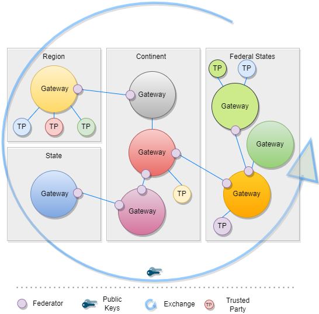
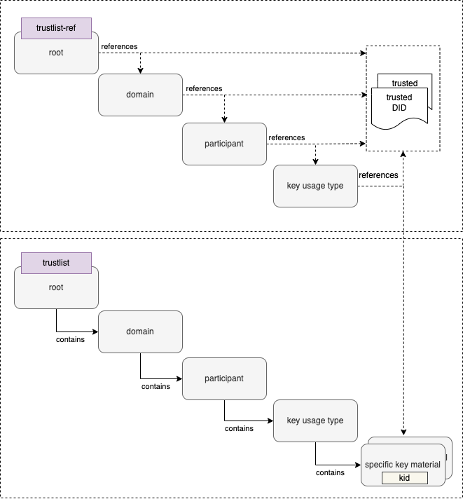
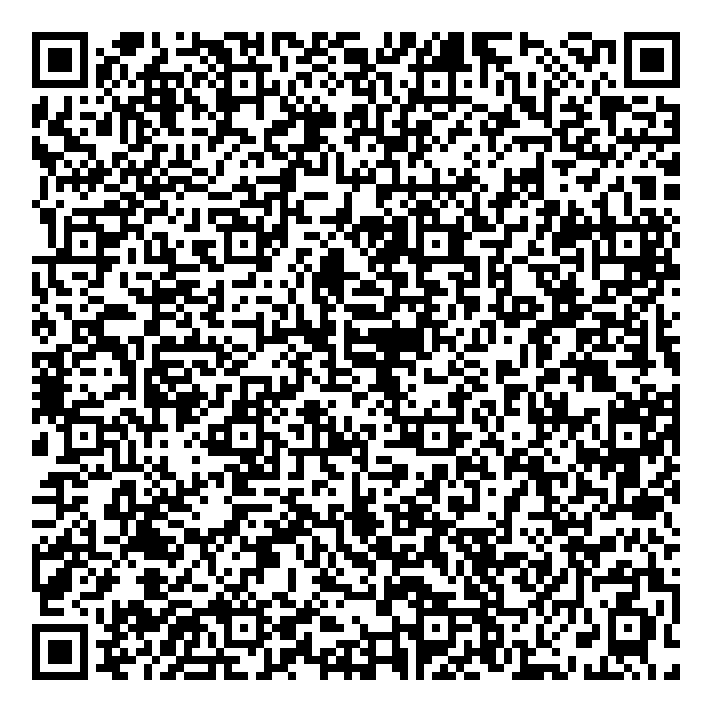

机器翻译——未经人工审校
本页面为自动翻译。尚无任何人审校或裁定此译文，可能存在错误。以源语言页面为准。 阅读原文（英文）
Machine translation — not reviewed by a person
This page was translated automatically. No person has reviewed or adjudicated this translation, and it may contain errors. The source-language page is the authoritative text. Read the original (English)
首页
摘要
本指南描述了世卫组织（WHO）全球数字健康认证网络（GDHCN）的规范和入网程序。GDHCN 是一种机制，用于支持对 GDHCN 参与方之间交换的健康文档和证明进行验证。这些健康证明可以包括 COVID-19 证书、常规免疫接种卡，以及符合国际患者摘要标准的家庭保存记录。该机制提供了协调全球卫生协议标准的手段，并为连续性医疗和入境口岸建立数字证书认可体系。GDHCN 旨在利用各管辖区在 COVID-19 应对中已有的投资，并提供未来流行病和大流行应对韧性所需的数字健康基础设施。
GDHCN 是世卫组织（WHO）与会员国之间已有信任的数字化体现。GDHCN 是一个数字信任网络，基于经过验证的概念，这些概念用于描述建立信任的规范和机制，使合格参与方能够建立新的信任域，以交换可验证的数字健康记录。信任网络的合格参与方可以按照入网流程申请加入。GDHCN 依照《GDHCN 行政与运营框架》运行。

The view in this guide's ArchiMate model.
如需亲身体验加入过程，请玩Join the Network：这是一个模拟游戏，一个示例国家按照加入流程，一步一个选择地加入 GDHCN。
背景与目的
为应对 COVID-19，世界各国政府和组织已开发并采用了用于创建、出示和验证数字疫苗接种凭证和检测凭证的标准和技术。然而，目前尚不存在一个全球技术框架，能够使这些凭证在系统之间便捷使用和互操作，同时允许各国自主决定其使用方式，而这样的框架是迫切需要的。
世卫组织（WHO）全球数字健康认证网络是一组用于验证可互操作数字健康文档或证书的组件。该系统由三个主要部分组成：
一组定义明确的数字健康文档，由 GDHCN 成员签发和验证；一套公钥基础设施（PKI），用于发布和分发验证这些数字健康文档的数字签名所用的公钥。
一个知识库，用于维护元数据，包括术语编码、产品代码和业务规则，以实现这些数字健康文档的语义互操作性
除验证和校验 COVID-19 证书外，GDHCN 这样的全球数字健康信任网络还可以：
为世卫组织（WHO）通过 SMART 指南工作发布的经数字签名的临床算法建立信任。支持建立可信医疗产品和器械的全球产品目录。确保无论身处世界何地，患者信息都能被访问和信任。支持卫生系统韧性，以应对世界上未来的疫情暴发。增强个人管理自身健康和福祉的能力。
在可信环境中以可互操作的方式交换健康信息是一项复杂的任务，涉及的利益相关方（例如公共卫生机构、经认可的实验室、边境管控组织、获授权进行验证的机构）越来越多，他们需要确保数据得到安全可靠的传输、健康内容可互操作，且信息可理解、可据以采取行动。本指南详细说明如何利用全球技术框架实现健康凭证在系统之间的互操作性，同时保留各国对其使用的自主权。
实现健康证书的全球互操作性，并不要求所有管辖区使用同一标准。如果预先建立了相应机制，使一个管辖区签发的证书能够在另一个管辖区得到接受，同样可以实现互操作性。为满足建立互操作性和信任体系的特定标准，已开发了多项服务和技术工件，包括：
数据模型、转换和词汇定义，使健康数据能够在各种标准格式之间交换，在保留管辖区对国内流程自主权的同时，允许管辖区之间重新签发和相互认可凭证；在不同网络之间交换公钥以验证健康凭证上数字签名的标准规范；一个全球信任登记系统和联合公钥基础设施解决方案，在区域信任网络之间提供技术互操作性和技术治理；用于创建、共享和执行业务规则的工作流，这些业务规则依据健康数据评估公共卫生政策，以满足跨境或入境口岸的要求；开源工具和技术指导，以减轻为参与联合信任网络而实施技术基础设施的负担，包括供各管辖区实施其自身区域信任网络的开源信任网络基础设施
致会员国的通函
2023 年 9 月 29 日（星期五），世卫组织（WHO）总干事向所有会员国发出通函，鼓励其参与 GDHCN。
- C.L.38.2023（全球数字健康认证网络）- 阿拉伯文
- C.L.38.2023（全球数字健康认证网络）- 中文
- C.L.38.2023（全球数字健康认证网络）- 英文
- C.L.38.2023（全球数字健康认证网络）- 法文
- C.L.38.2023（全球数字健康认证网络）- 俄文
- C.L.38.2023（全球数字健康认证网络）- 西班牙文
受众
本指南描述了信任生态系统中潜在参与者的预期工作流，即：
签发方：向个人提供可验证健康凭证；验证方：使用个人提供的可验证健康凭证；信任网络：在签发方与验证方之间建立信任关系和政策。
本指南的受众包括可能参与联合信任网络的潜在单个签发方、现有信任网络或潜在验证方的决策者、分析人员和技术人员。利益相关方包括会员国、区域网络和标准制定组织。
参与方
可用的信任域
GDHCN 信任域的代码包含在 GDHCN 信任域值集中，并在此处有更详细的说明。
</p>
伦理考虑与数据保护原则
与任何数字解决方案一样，存在需要为技术规范的设计提供依据、并为如何以合乎伦理的方式实施由此产生的解决方案提供指导的伦理考虑（例如对公平和公平获取的潜在影响）和数据保护原则。以下页面讨论了一些关键的伦理考虑和数据保护原则，鼓励会员国在各自部署数字解决方案时纳入这些考虑和原则，并且在负有法律义务的情况下必须纳入。这些伦理考虑和数据保护原则也为世卫组织（WHO）SMART 指南的设计标准以及世卫组织（WHO）全球数字健康认证网络的使用提供了依据。
反馈
针对本实施指南的反馈可通过以下方式提供：
常见问题可在此处查看 点击任一章节标题右侧的“反馈”链接 发送电子邮件至 gdhcn-support@who.int 在 GitHub smart-trust 代码库中创建议题
社区
请在 chat.fhir.org 社区注册，并关注 who-smart-guidelines 频道，以提出与世卫组织 SMART 指南相关的问题、咨询和讨论。chat.fhir.org WHO 还每周举办关于编写和实施世卫组织（WHO）SMART 指南的电话会议，欢迎参加。如需获得邀请，请发送电子邮件至 gdhcn-support@who.int。gdhcn-support@who.int
关键伦理考虑
伦理应成为数字解决方案设计和部署不可或缺的组成部分。然而，政策决定往往复杂而艰难。需要考虑许多不同的因素并相互权衡。证据往往不确定，并且存在许多相互竞争的不同伦理观点和立场。仅凭证据无法提供正确答案，一套简单的伦理规则也做不到。公共卫生行动需要审慎的判断，并为结果承担责任。应考虑若干不同的伦理因素，既包括目标，也包括过程。
目标
一个良好的出发点是确定数字解决方案的使用如何通过公共卫生，助力任何政府履行重要的一般职责。公共卫生行动的三个关键目标是：
保护和促进个人、社区和全体人群的福祉；确保平等对待所有个人，并在国家边界内尽可能预防或减轻可避免和不公平的健康不平等（即卫生不公平）；以及建立和维护对作为卫生保健系统组成部分的公共卫生活动的信任。
数字解决方案的创建和使用可以助力实现上述每一个目标。例如，关于目标 1，数字解决方案可以通过提供数字健康记录来促进福祉：确保个人能够跨机构访问其健康数据，从而实现照护的连续性。推进这一目标还有助于增强对政府卫生基础设施的信心，使全体人群受益。这样的结果是一项重要的共同利益，即无法由每个人单独创造的、惠及所有人的利益。这类利益需要政府的协调行动和支持。此外，由于健康状况得到改善，个人和社区随之获得更多机会来自主作出选择并追求自身的经济和社会目标，使用数字解决方案还将带来其他益处。
关于目标 2，平等对待要求平等地尊重和保护所有人，并采取行动尽可能确保不歧视任何人。努力实现这一目标的一个例子是确保实施适当的个人数据保护保障措施。个人健康数据属于私人信息，需要采取保护措施，确保任何人都不会被迫披露或公开展示其个人健康记录（PHR）才能进入任何公共区域或参加任何公共活动 [swiss-taskforce-vaccination-proof-2021]。这种做法和/或缺少 PHR 本身，可能导致没有 PHR 的个人遭受污名化，并可能加剧危害风险。
努力实现目标 2 的另一个例子是思考如何通过卫生资源的分配来努力实现公平。虽然数字解决方案可能提供一种更可靠、准确和可信的机制来记录个人健康史，但出于以下原因，它们有可能加剧卫生不公平。
→ 如果 PHR 的应用和使用要求个人能够使用数字基础设施，或者该数字基础设施对所有会员国而言部署负担过重，PHR 就可能加剧数字排斥。
→ 视管理流程、成本和设计而定，面临地理、经济或残疾障碍的个人也可能无法获得和使用 PHR。确保以公平和包容的方式实施数字解决方案，意味着在获得和使用 PHR 方面障碍较大的人将比其他人得到更大程度的支持。
关于目标 3，信任对于确保数字解决方案惠及个人、社区和全体人群至关重要。例如，提供稳健的数据保护措施并运用第 1.3.4 节所概述的程序性考虑，可能有助于维护对公共卫生系统的信任。这反过来又有助于实现目标 1。另一个例子可能是，数字解决方案应仅用于其预期目的，因为不当使用可能会损害正当用途。
过程
追求上述目标可能会产生伦理问题。减轻这一风险的一种方法是确保各项过程坚持重要的程序价值。这些价值反过来也有助于追求上述目标。这些价值包括：
→ 透明度：从一开始就提供有关政策依据及其制定过程的清晰、准确且可公开获取的信息，即告知公众这一过程正在进行。这样的过程能够规范决策，并通过为最终决定提供合理公众可能认同的可靠依据来确保问责。
→ 决策的包容性：为所有相关利益攸关方，特别是受影响者以及为这些个人和群体代言的倡导者，提供参与政策制定和设计的机会。
→ 问责：提供一个清晰的框架，明确谁对什么负责，以及如何规范和落实这些责任。
→ 响应性：提供机制和机会，根据不断发展的科学证据和其他相关数据审查和修订决定与政策。这可以包括公众咨询，或与广泛的专家、行业和其他利益攸关方进行接触，使政策能够回应实际存在的和人们所感知的伦理问题与关切。特别重要的利益攸关方是那些可能因 PHR 的创建而处于不利地位或面临特殊或更高风险的人，例如无法或不愿创建 PHR 的个人，即公民身份或居留身份不稳定或无效的个人，以及在获得或使用 PHR 方面可能面临其他障碍的个人 [ada-lovelace-vaccine-passports-2021]。
与将数字个人健康记录进一步潜在用于公共卫生安全措施相关的伦理考虑
数字 PHRs 的若干其他可能用途会引发伦理问题。在突发公共卫生事件背景下，数字 PHR 可能在实现各种公共卫生目的方面发挥作用，例如确定特定人群的疫苗接种覆盖率，这可能有助于确定何时在人群层面解除或放宽公共卫生和社会措施（PHSMs）。数字 PHR 还可能被用于促成个体化地豁免或减少 PHSMs（例如缩短暴露后的检疫时间），或基于疫苗接种证明让个人参与某项活动（如果这些用途被认为符合伦理），我们可以将其称为“健康通行证”功能。为这些目的，特别是作为健康通行证，部署或使用数字 PHR，会给个人和社区带来若干潜在的伦理问题以及人权挑战（[coe-bioethics-vaccine-pass-2021],[who-vaccination-certificates-ethics]）。
首先，由于目前对新发疾病存在科学上的不确定性，将数字 PHR 用作健康通行证会带来一系列特殊风险。例如，在 COVID-19 国际关注的突发公共卫生事件（PHEIC）期间，COVID-19 疫苗已证明在预防重症和死亡方面具有效力和有效性，但每种疫苗在多大程度上可防止 SARS-CoV-2 传播给易感个体，尚未得到充分评估。每种疫苗对重症和感染的保护能持续多久，以及对 SARS-CoV-2 当前和未来变异株的保护效果如何，也尚不完全清楚。在这种科学不确定的背景下，仅根据个人疫苗接种状况将数字 PHR 用作健康通行证，可能会增加疾病传播的风险。如果持有数字 PHR 的个人被完全豁免 PHSMs，或者难以落实个人对所要求的
PHSMs 的遵守情况（例如在音乐会期间佩戴口罩和保持身体距离），而这些活动是他们凭借数字 PHR 获准参加的，情况尤其如此。
其次，针对作为健康通行证的数字 PHR，一些潜在的行为反应可能会损害个人健康和公共卫生。这些反应包括以下几方面。
→ 当健康通行证的益处很大时，可能会导致数字 PHR 欺诈。例如，如果未接种疫苗的人可能接触到脆弱人群，伪造的疫苗接种记录可能会增加公共卫生风险。
→ 为了获得相应的数字 PHR，个人可能不太愿意披露其病史以及对公共卫生干预措施（例如疫苗）的（潜在）禁忌症，从而增加不良事件的风险。
→ 在每个人接种疫苗后为其创建数字 PHR，可能会激励更多人参与公共卫生措施（例如接种疫苗），以获得数字 PHR 带来的益处。然而，由于隐私及其他方面的担忧，即担心疫苗接种记录可能与个人数据相关联，并被用于原定目的以外的功能（例如监测个人健康状况），或被非预期的第三方（例如移民部门、商业实体、研究人员）使用，这也可能增加人们对参与公共卫生措施的犹豫 [royal-society-setc-vaccine-passports-2021]。
第三，将数字 PHR 用作健康通行证，有可能带来不公平的不利处境和不公正。例如，在 COVID-19 PHEIC 期间，一些国家国内最初有限的 COVID-19 疫苗供应被优先分配给感染风险最高者（如卫生保健工作者）或出现严重后果风险最高者（如老年人）。如果数字 PHR 纳入健康通行证功能，那些愿意接种疫苗但尚未获得疫苗的人，或因医学原因无法接种疫苗的人，就有可能处于不公平的不利地位。应考虑个人能否使用其他健康状况证明，使其能够以类似方式获得相同服务，同时降低疾病传播风险。例如，在 COVID-19 PHEIC 期间，这些其他证明可能包括 COVID-19 检测阴性结果，或基于可靠且准确的检测获得的感染后免疫证明（被称为免疫证书），尽管这也引发了相当大的科学和伦理关切 [voo2021]。
建议
数字解决方案的设计、开发和实施会引发许多伦理问题。在考虑此类实施时，可以参考以下一系列建议。
数字解决方案的使用范围应（SHOULD）明确界定。
每个引入数字解决方案的会员国都应明确拟议的用途，并明确其不应被用于其他目的。
为防止任何潜在的滥用，任何数字解决方案的实施都应就该解决方案正当用途的限度制定明确而具体的政策，必要时制定法律。只有在支持突发公共卫生事件期间追求正当目标，且由法律规定、相称、期限有限、以科学证据为基础，并且不以任意、不合理或歧视性的方式施加时，使用数字解决方案限制迁徙自由权和其他人权才是正当的。
在引入数字解决方案之前，应（SHOULD）评估其潜在的益处、风险和成本。
数字解决方案的创建或开发，应基于对其各项用途的益处和成本，以及拟议基础设施的利弊的评估，并与记录、核实和验证疫苗接种记录的其他潜在或现有方式进行比较。益处与成本评估作为对稀缺公共卫生资源进行管理的一项职能，应兼顾短期、中期和长期视角。短期视角将考虑在公共卫生危机期间，相较于应对紧急情况和满足其他公共卫生需求的其他措施，投资于数字基础设施的效用和机会成本。应考虑数字基础设施是否可能因其在处理登记和/或培训等方面可能带来的低效率而妨碍公共卫生应对。长期视角将考虑数字解决方案在加强卫生系统方面的潜在优势，例如增强卫生信息系统及其跨管辖区的互操作性。此外，应在实施之前评估数字解决方案引发的伦理问题和风险，以及个人、家庭、企业和其他相关利益攸关方所承受的益处与负担之间权衡取舍的影响。还应开展社区参与，特别是与可能面临更多不利处境或风险的群体的代表进行沟通。
获得和使用数字解决方案应（SHOULD）尽可能包容和公平。数字解决方案应尽可能包容，不应造成不利处境。为此，可能需要为已处于不利处境的个人和群体提供替代的、具有成本效益的解决方案，包括纸质替代方案，这些个人和群体例如存在数字技能障碍或残疾障碍的人、生活在数字连通性较差地区的人，以及无证或非正规移民。不应因要求个人付费才能获得和使用数字解决方案而将任何人排除在外。
应（SHOULD）采取一切必要措施，为照护的连续性保护参与者。数字解决方案将包含与个人健康相关的潜在敏感数据，因此这些数据应受到适当的医疗保密和隐私保障措施的保护。为照护连续性而访问或使用这些数据，应基于特定卫生保健系统中适当的同意标准（例如默示同意或明示同意），并应足以使接收方卫生保健提供者或团队继续提供良好的医疗照护。这些伦理标准也将适用于为照护连续性而进行的数据跨境传输（例如患者在国外获得医疗服务时）。
对于不具备决策能力的成年人，将其个人健康记录用于与其卫生保健相关的决定，可以基于其预先决定；如无预先决定，可由卫生保健代理人或经授权的替代决策者为该成年人的最大利益作出。在需要同意的情况下，具有足够智力和成熟度的未成年人应能够允许将其健康记录数据用于照护的连续性。
所有沟通应（SHOULD）清晰透明。
应以透明的方式传达与用户相关的数字解决方案实施细节，这可能有助于提升公众对该解决方案的信任和接受度。这种沟通包括：该解决方案将如何发挥作用以惠及个人和公共卫生；为限制第三方访问和使用该解决方案而制定的政策和机制；个人健康数据是否与其他类型的数据相关联，以及任何数据关联的目的。
如果今后该解决方案的用途扩展到其他科学或公共卫生目的（例如规划监测或研究），应事先告知数据主体和其他公众这些活动的性质和发生情况、现有的伦理监督或治理结构（包括针对监测活动的结构 [who-surveillance-ethics-2017]），以及就这些用途控制或限制个人健康数据的选项。个人健康数据属于敏感数据，用于科学或公共卫生目的时，一般应进行匿名化（或假名化，或去标识化）处理，以尽量降低对数据主体的风险。如果出于这些目的需要以可识别的形式保留个人健康数据，应考虑是否需要获得同意，或是否可以在满足适当伦理标准（例如风险极低、获取同意不切实际、对数据主体的权利和福祉无不利影响，以及服务于公共卫生利益）的基础上豁免同意。
应（SHOULD）持续监测数字解决方案的影响，并在必要时进行调整。实施之后，重要的是从积极和消极结果（例如对公平性的影响）两方面监测数字解决方案的效果，并考虑采取潜在干预措施以减轻消极结果。此类监测还应审查那些无法明确归入政策所设定的正当和不正当用途类别的用途，以考虑这些用途应继续、修改还是停止。
数字解决方案的数据保护原则
本节介绍数字解决方案必须先行具备的基本数据保护原则。这些原则旨在为负责创建或监督开发数字解决方案的国家主管机关提供指导。其目标是鼓励会员国视需要通过或调整其国家法律法规，尊重个人数据保护原则，并确保尊重个人的人权和基本自由，特别是隐私权，从而建立对数字解决方案实施的信任。
数据保护原则如下。 合法依据、正当使用与公平处理 为应用数字解决方案而收集的个人数据，应以公平和非歧视的方式进行处理，其依据为数据主体的同意、保护该数据主体或另一数据主体切身利益的必要性，或由正当的公共卫生目标明确证明其合理性。
为应用数字解决方案而进行的个人数据处理应有合法依据；应遵守适用的法律，包括更广泛的人权标准以及数据隐私和数据保护法律，并遵循最高的保密标准以及道德和伦理行为标准。
为应用数字解决方案而收集的个人数据，只有在尊重相关数据主体正当利益的前提下，才应被访问、分析或以其他方式使用。具体而言，为确保数据使用公平，数据的使用方式不应侵犯人权，也不应以任何其他可能对任何个人或群体造成不合理或不利影响的方式使用。
为应用数字解决方案而处理的个人数据，其任何保留都应有正当和公平的依据。在保留任何数据之前，应考虑潜在的风险、危害和益处。个人数据在实现其目的所需的时间过后应被永久删除，除非出于特定目的延长保留具有正当理由。
透明度
为应用数字解决方案而进行的个人数据处理，应对数据主体保持透明。应以清晰、无歧义的语言向数据主体提供易于获取、简明、易懂且便于阅读的信息，内容涉及：数据处理的目的；所处理数据的类型；数据将如何被保留、存储和共享，或以其他方式供访问；数据的接收者是谁，以及数据将保留多长时间。还应向数据主体提供有关适用的数据保留期限表以及如何行使其数据主体权利的信息。获授权为应用数字解决方案而处理个人数据的实体名单应予以公开。
目的限制与明确 为数字解决方案而收集的个人数据只能用于所确定的范围和目的，不应以与所确定目的不相符的方式进行处理。应禁止将数据用于任何其他目的，包括出售个人数据和将其用于商业目的，但事先获得数据主体明确、无歧义且自由给予的同意的除外。
为应用数字解决方案而处理个人数据的目的，应最迟在收集数据时予以明确。个人数据的后续使用应仅限于实现这些已明确的目的。
当数字解决方案的卫生工作者或验证方开展其受托活动时；只有在满足上述合法依据所基于的原则，且第三方为个人数据提供的适当保护等同于或高于数据控制者所提供的保护时，才应允许将为应用数字解决方案而处理的个人数据传输给第三方或允许第三方访问。
为应用数字解决方案而处理的个人数据，应与其拟使用的目的相关，并在这些目的所必需的范围内保持准确、完整和及时更新。
相称性、必要性与数据最小化 个人数据的处理应具有相关性（与特定目的有合理联系）、充分性（足以妥善实现特定目的），并仅限于实现特定目的所需的范围。个人数据的处理相对于
收集这些个人数据的目的而言，不应过度。在数字解决方案上收集和保留的数据应尽可能有限，并遵循相称性和必要性原则。数据的访问、分析或其他使用应保持在实现其目的所必需的最低限度。数据量（包括其粒度）应限于必要的最低限度。应使用选择性披露机制来支持相称的数据访问。
应对数据使用进行监测，以确保其不超出正当用途。为应用数字解决方案而保留的个人数据，其保留和存储时间应仅限于特定目的所必需的时间。在数字解决方案的验证环节所访问的个人数据，不应在存储库、数据库或以其他方式予以保留和存储。
保密与安全 为应用数字解决方案而处理的个人数据应予以保密，不应向未经授权的各方披露；个人数据应仅供数据主体或其他经明确授权的各方访问。
考虑到为应用数字解决方案而处理的个人数据的性质和敏感性，应对电子数据和纸质数据均实施适当的组织、物理和技术安全措施，以保护个人数据的安全性和完整性。这种保护包括防范个人数据泄露的措施，以及确保个人数据在其处理目的范围内持续可用的措施；无论数据是存储在设备、应用程序、服务器还是网络上，或者是通过涉及收集、传输、处理、保留或存储的服务进行发送，这一点均适用。
在考虑现有技术和实施成本的情况下，应实施稳健的技术和组织保障措施与程序（例如对数据访问的有效监测、数据泄露通知程序），以确保在整个数据生命周期中妥善管理数据。这些措施旨在防止个人数据遭受任何意外丢失、销毁、损坏、未经授权的使用、篡改、窜改、欺诈、伪造、未经授权的披露或泄露。
如发生安全漏洞，导致所传输、存储或以其他方式处理的个人数据被意外或非法销毁、丢失、更改、未经授权披露或访问，应以适当和及时的方式通知持有健康记录的数字解决方案用户（数据持有人）。应向数据持有人通知：任何数据泄露；可能影响其作为数据主体之权利的数据泄露性质；以及减轻潜在不利影响的建议。
数据主体权利、投诉与法律救济 数据持有人如已提供充分证据证明其为数据持有人，应能够行使数据主体权利。这些数据主体权利包括对个人数据的访问权、更正权、删除权、反对权和限制权，但须符合国家法律、法令、条例或其他正式法令或命令所规定的条件。数据主体如因数据被滥用或数据不正确、不完整而遭受损害或损失，有权通过投诉程序寻求救济。应向数据主体提供易于获取、简明、易懂且便于阅读的信息，说明他们可以如何行使其数据主体权利以及如何寻求法律救济，包括在涉嫌欺诈的情况下如何行使任何权利。
独立监督与问责 应由一个独立的公共主管机关负责监督为数字解决方案而参与处理个人数据的任何数据控制者和数据处理者是否遵守这些原则，该机关可以建议撤销收集或以其他方式处理数据的授权。该公共主管机关应能获取履行其职责所需的全部信息。应制定充分的政策和机制，以确保这些原则得到遵守。
数字个人健康记录设计标准
鉴于上述伦理考虑和数据保护原则，在制定实施数字解决方案的需求时考虑了以下设计标准。
数字解决方案的实施不应加剧卫生不公平或扩大数字鸿沟。管辖区内的每个人都应有权在数字解决方案上获得和持有记录。数字解决方案所持有的记录需要采用人人都能获取的格式，例如纸质和数字格式。任何解决方案还应能在跨多个平台（纸质和数字）的在线和离线环境中运行。不应因个人所使用数据的表现形式不同而区别对待个人或给予不同程度的信任（例如，不应因某人是在智能手机上还是在纸质卡片上出示健康记录而有所歧视）。任何解决方案都不应给个人带来额外费用。数字解决方案中使用的互操作性规范应基于开放标准，以确保公平获取一系列非专有数字工具。构建数字解决方案所依托的基础设施应确保个人和会员国不被锁定于仅与单一供应商的合作承诺。任何解决方案都应尽可能环保。应采用环境上最可持续的方案，以减少对环境造成的任何额外不当危害。任何解决方案都应视情况设计为在现有卫生信息系统的背景下增强其功能并在其中运行。任何解决方案共享或存储的数据都不应超过成功执行其任务所需的数据。应在系统中内置针对与卫生保健无关目的的健康内容最小化以及隐私保护功能，并相应地予以遵守。任何方法都应内置反欺诈机制。
数字技术不应是唯一可用的验证机制。应始终有可行的途径回退到仅基于纸质的人工记录验证。需要注意的是，尽管此处概述了技术设计标准，但会员国务必确保建立相应的法律和政策框架，以支持按会员国的界定负责任地使用数字解决方案。
常见问题
参与和角色
谁可以担任参与 GDHCN 的申请表代表？
代表宜由世卫组织（WHO）会员国指定的、对参与 GDHCN 拥有决策权的公共卫生主管机关担任。
业务负责人联系人的角色是什么？
一名拥有决策权的高级官员，参与战略决策，但不参与日常运营。
谁宜担任技术联系人？
在项目生命周期内负责处理技术咨询和问题的个人。
法律联系人的职责是什么？
管理法律方面的事务，包括与参与 GDHCN 相关的监管合规和合同事宜。
财务信息
参与 GDHCN 是否需要支付任何费用？
目前参与 GDHCN 是免费的，由世卫组织（WHO）现有资金支持。
技术要求与基础设施
过渡到世卫组织（WHO）的产品目录管理工具将如何影响疫苗代码？
该工具旨在有效管理疫苗代码，应对医学术语编码的复杂性。
我们能否继续在 UAT 环境中参与，而不迁移到生产环境？
可以，继续在 UAT 环境中参与是可行的，并且不会妨碍将来向生产环境过渡。
GDHCN 如何支持开源协作？
通过 GitHub 等平台，使社区能够贡献力量，以完善技术规范和文档。
GDHCN 如何整合现有的 EU DCC 技术规范？
通过纳入 EU DCC 的规范，例如用于密钥访问、业务规则和值集的 API，确保兼容性。
GDHCN 基础设施未来的发展和维护有何计划？
未来的发展将由世卫组织（WHO）指导，重点关注与现有系统的兼容性，并确保安全性和向后兼容性。
过渡与入网
如何管理技术资产从 EU DCC 向 GDHCN 的过渡？
这包括将 API 和集合迁移到 GDHCN 规范中，由世卫组织（WHO）确保顺利整合。
此前未连接 EU DCC 的新应用的入网流程是什么？
这包括验证技术连接以及与现有系统的兼容性，尤其是在 TLS 证书方面。
安全与合规
在 GDHCN 内如何管理密钥材料和交换流程？
通过对密钥材料的详细定义，确保密钥交换流程清晰可见，这些定义与 EU DCC 的定义非常相似。
在向世卫组织（WHO）治理过渡期间，如何管理与安全相关的事件？
重点在于处理安全事件，除非出于安全原因确有必要，否则不对代码库进行更改。
证书管理
目前国家后端 TLS 证书续期的政策是什么？
该政策正在审查中，正在讨论三个月续期政策的替代方案，包括更长的有效期或自签名证书。
世卫组织（WHO）托管的网络能否使用自签名 TLS 证书？
世卫组织（WHO）使用有效期更长的自签名证书的可能性正在讨论中。
针对当前 TLS 证书政策提出替代方案的流程是什么？
目前正在考虑替代方案的提议，例如延长有效期，以缓解对短续期政策的担忧。
###!## 世卫组织（WHO）如何在不完全依赖 TLS 证书的情况下确保信任？信任 CA 而非证书本身，或许可以解决频繁续期的问题。
业务需求
该数字健康信任网络是由利益相关方组成的网络，各方基于信任、安全和隐私原则安全地交换和使用健康信息，旨在确保以安全、保密且合规的方式处理健康信息。通过 GDHCN，世卫组织（WHO）担任数字健康信任网络的管理者。
其分为以下各节：
关键概念 功能性需求 用例 人物画像 数据字典
除下文定义的本文件通篇使用的关键概念外，更多文档可见于：
如有任何不一致，宜以《GDHCN 行政与运营框架》作为定义和概念的权威来源。
概念 术语表
GDHCN 信任网络
GDHCN 信任网络是由 GDHCN 秘书处和 GDHCN 参与方组成的信任网络。GDHCN 信任网络通过信任网络网关使信任域投入运行，使 GDHCN 参与方能够双边验证和使用可验证数字健康证书，并使用可信服务。
GDHCN 秘书处
世卫组织（WHO）秘书处担任 GDHCN 的运营和管理领导机构，以此身份即为 GDHCN 秘书处。
GDHCN 参与方
GDHCN 参与方是遵守《参与条款》并管理必要技术基础设施和治理流程的信任网络参与方。GDHCN 参与方负责就可信服务的使用作出双边决定。
合格 GDHCN 参与方
合格 GDHCN 参与方为以下之一：
- 世卫组织（WHO）会员国或准会员，或其次国家级单位；
- 《国际卫生条例》承认的缔约国，或其次国家级单位；
- 联合国（UN）以及与世卫组织（WHO）建立有效关系的其他政府间组织；
- 联合国（UN）系统内的基金、规划署、专门机构或相关组织；或
- 由上述组织之一正式授权、能够遵守《GDHCN 参与条款》并履行以下一项或多项卫生服务职能的组织：
- 公共卫生机构；
- 卫生专业教育认证机构；
- 卫生服务许可机构；或
- 公共卫生安全机构。 一旦被 GDHCN 接纳并顺利完成入网流程，即称为 GDHCN 参与方。已启动入网流程的合格 GDHCN 参与方称为合格 GDHCN 申请方。
参与条款（TOP）
参与 GDHCN 须遵循 GDHCN 秘书处全权自行酌定、并依照世卫组织（WHO）不时修订的规则、条例、政策和惯例所制定的入网流程。《GDHCN 参与条款》的要求由以下部分组成：
- TOP0 共享必要的凭据，以在 GDHCN 参与方的后端系统与信任网络网关之间建立 mTLS（双向传输层安全）连接；
- TOP1 在初始入网流程期间及例行验证期间，遵守 PKI 所需的技术规范；
- TOP2 在初始入网流程期间及例行验证期间，遵守每个适用信任域的可验证数字健康证书及可信服务 APIs 的技术规范；
- TOP3 遵守 GDHCN 参与方针对每个适用信任域中由 GDHCN 信任参与方运营或使用的可信服务所适用的政策和监管标准；以及
- TOP4 应世卫组织（WHO）不时全权酌情提出的要求，提供证明其为合格 GDHCN 参与方的支持性文件（例如授权、法律框架）。
业务负责人代表
由 GDHCN 参与方确定的个人，就信任域所涵盖用例的实施，代表该 GDHCN 参与方负有首要的业务和规划责任。
密钥主管代表
由 GDHCN 参与方确定的个人，对公钥基础设施的管理负有首要责任，包括生成所需的公私密钥对，以及配置和管理该 GDHCN 参与方的公钥基础设施与 GDHCN 信任网络网关之间的连接。
法律代表
由 GDHCN 参与方指定的个人，代表该 GDHCN 参与方对与信任域相关的要求负有首要审查责任。此人宜是 GDHCN 秘书处在可能出现的任何法律或政策问题上可以咨询的人，例如本文件的变更或其定义某一信任域的附件之一的变更。
技术代表
由 GDHCN 参与方指定的个人，就适用的信任域对该 GDHCN 参与方的安全、技术事务和系统基础设施负有首要的总体责任，包括确保遵守技术规范。
申请函
由合格 GDHCN 参与方通过可验证的安全渠道向 GDHCN 秘书处提交的正式申请，申请加入 GDHCN 信任网络并在某一特定信任域内参与。
入网流程
合格 GDHCN 参与方加入 GDHCN 信任网络所需的各项流程。入网流程顺利完成后，该合格 GDHCN 参与方应被视为 GDHCN 参与方。有时简称为“入网”。
卫生专业教育认证机构
负责制定和/或实施卫生专业教育机构认证程序的组织或组织单位。参见 https://apps.who.int/iris/rest/bitstreams/1473223/retrieve 和 https://applications.emro.who.int/docs/em_rc50_r9_en.pdf?ua=1
卫生服务许可机构
负责制定和/或实施执业许可程序，并许可组织或个人在其管辖区内提供临床、卫生系统或公共卫生服务的组织或组织单位。许可包括经正式授权的政府主管机关（如经认可的专业组织）准许个人或医疗卫生组织开展运营或从事某一医疗职业或专业的各项流程。参见：https://apps.who.int/iris/rest/bitstreams/1473223/retrieve 和 https://cdn.who.int/media/docs/default-source/documents/health-systems-strengthening-glossary.pdf.
公共卫生机构
负责为特定管辖区或领域内保护、促进和改善公共卫生的相关活动制定程序和/或实施这些活动的组织或组织单位。也可称为卫生部、卫生厅（局）或公共卫生主管机关。
公共卫生安全机构
负责制定程序和/或实施所需的主动与被动应对活动，以尽量降低跨地理区域和国际边界危及人们健康的急性公共卫生事件的危害和影响的组织或组织单位。参见：https://www.who.int/health-topics/health-security.
公钥基础设施（PKI）
公钥基础设施（PKI）是基于公钥证书和证书颁发机构的信任模型。它是发布和分发信任列表的手段，信任列表由可用于以数字方式验证可验证数字健康证书签发方的公钥组成。
签名者证书颁发机构（SCA）
每个 GDHCN 参与方维护一个或多个签名者证书颁发机构（SCA），其证书的有效期相对较长。SCA 为本国短期有效的文档签名者签发公钥证书。SCA 充当信任锚，使依赖方 GDHCN 参与方能够使用 SCA 证书验证定期更换的 DSC 证书的真实性和完整性。
持有人
持有人是持有从签发方处获得的可验证数字健康证书的个人。持有人可以选择与接收方共享该可验证数字健康证书。
接收方
接收方是经信任网络参与方授权的系统，用于从持有人处接收可验证（数字健康证书），对其进行验证并使用其中的内容。
签发方
签发方是经信任网络参与方授权、用于生成提供给持有人的可验证数字健康证书的系统。签发方负责生成可验证数字健康证书中经数字签名的内容。为签署这些内容，签发方宜按照管辖区政策的授权，自身作为文档签名者，或使用文档签名者服务。
文档签名者
文档签名者使用公私密钥对中的私钥对可验证数字健康证书进行数字签名。单个私钥预计将签署大量可验证数字健康证书。相应的公钥称为文档签名者证书（DSC）。
文档签名者证书（DSCs）
文档签名者证书是与文档签名者相关联、由 GDHCN 参与方签发或认可的公钥证书。
加密密钥证书治理
有关加密密钥管理和使用的流程与技术规范，涉及可验证数字健康证书、公钥基础设施，以及与可信服务和信任网络网关之间连接的安全保障。
信任域
信任域包括：
- 与可验证数字健康证书的使用相关的既定用例和业务流程；
- 确定或定义适用的可信服务和可验证数字健康证书的开放、可互操作技术规范；以及
- 一套政策和监管标准，描述 GDHCN 参与方在运营可信服务和使用可验证数字健康证书方面的预期行为（例如数据最小化、隐私、使用范围）。
信任列表
支持不同凭证标准的通用验证方应用程序，因凭证载荷格式、签名、密钥格式和密钥分发方法差异很大而变得复杂。公钥格式包括 x509 证书、JSON Web 密钥集（JWKS）和 DID 文档。签名密钥分发方法包括 API 网关、由签发方托管于预定义 URL、嵌入证书中，以及基于区块链的解析。通过信任锚建立信任根或分发信任列表，已通过 API 网关、托管 URL、私下传播及其他双边共享协议得以实现。
在维护主权的方法中，预计会存在一定的差异，但为促进互操作性，在密钥格式和分发方面仍有协调统一的机会。为此，我们提供一种统一的信任列表格式，用于汇集和共享现有信任网络所使用的所有凭证规范的公钥基础设施。重要的是，该格式并不对信任网络参与方强制实施特定的政策框架。
GDHCN 目前支持两种使用信任列表分发密钥的方式
- EU DCC API 必需
- 去中心化标识符（DID） 可选
信任网络
信任网络是一种手段，用于认证网络内参与方所使用的加密公钥，以便执行加密服务、验证数字签名、在系统之间建立安全连接，以及以其他方式使用加密公钥。
The view in this guide's ArchiMate model.
信任网络
信任网络网关（TNG）
信任网络网关（TNG）是采用开放标准、用于公钥基础设施和元数据管理服务的开源软件及其 IT 运营基础设施，用于使一个或多个信任域投入运行。建立 mTLS 连接后，即可使用 API 与信任网络网关交互。
信任网络网关 - 信任锚 （TNGTA）
TNG 的信任锚公钥证书。相应的私钥用于离线签署所有 SCA 证书的列表。
信任网络网关 - 传输层安全 （TNGTLS）
TNG 的 TLS 服务器公钥证书。
信任网络参与方（TNP）
信任网络参与方（TNP）是一个缩写，用于标记 GDHCN 参与方在 GDHCN 信任网络下提供的证书、基础设施或技术制品。
GDHCN 参与方后端系统
GDHCN 参与方用于管理本地部分信息的后端系统。GDHCN 参与方后端系统的实现不在本文件范围之内。国家后端也可以理解为已入网信任网络网关的受信任方（也可以是脚本、代理或 Web 服务器）。
信任网络参与方 - 数据交换证书颁发机构 （TNPDECA）
GDHCN 参与方的 DSCA 公钥证书（可以不止一个）。
GDHCN 参与方的 DECA 公钥证书（可以不止一个）。DECA 是一种证书，在验证由信任网络参与方签发的 DESCs 的证书链时充当信任锚”
信任网络参与方 - 文档签名证书颁发机构 （TNPDSCA）
GDHCN 参与方的 DSCA 公钥证书（可以不止一个）。DSCA 是一种证书，在验证由信任网络参与方签发的 DSCs 的证书链时充当信任锚”
信任网络参与方 - 传输层安全（TNPTLS）
GDHCN 参与方后端系统的 TLS 客户端认证公钥证书。
信任网络参与方 - 传输层安全（TNPUP）
GDHCN 参与方用于对上传至 TNG 的数据包进行签名的公钥证书。
信任网络参与方验证方
GDHCN 参与方用于验证可验证数字健康证书数字签名的系统。
可信服务
与可验证数字健康证书的签发、管理、验证、交换或其他相关流程有关的服务（数字形式或其他形式），采用开放、可互操作的数字健康标准加以定义。
可验证数字健康证书
可验证数字健康证书：由证书或文件构成的数据集的数字表示形式，面向一组特定的临床或公共卫生用例而设计，并采用开放、可互操作的数字健康标准加以定义；其内部包含或关联一个数字签名，该签名可通过一对公私加密密钥中的公钥进行验证，并由 GDHCN 参与方签发。
具体的可验证数字健康证书在内容规范（Content Profiles）中定义
证书治理
本文档描述世卫组织（WHO）GDHCN 所采用的公钥证书治理。更多信息请参阅概念文档。
注：在嵌入的图片中适用以下重新标注：
- DCCG -> TNG
- CSCA -> SCA
- DCC -> GDHCN
- NB -> TNP
背景
核心功能是为 GDHCN 信任网络网关（TNG）安全、可信地交换签名密钥，TNG 充当公钥的中央存储库。GDHCN 参与方有权发布其用于为可验证数字健康证书签名的公钥。依赖方 GDHCN 参与方可以使用 TNG 及时获取最新的公钥材料。
GDHCN 框架的信任模型是公钥基础设施（PKI）。每个 GDHCN 参与方维护一个或多个签名证书颁发机构（SCA），其证书的生命周期相对较长。SCA 为生命周期较短的文档签名者（即数字健康证书的签名者）签发公钥证书，这些证书称为文档签名者证书（DSC）。SCA 充当信任锚，使依赖方 GDHCN 参与方能够使用 SCA 证书验证经常变化的 DSC 证书的真实性和完整性。验证通过后，GDHCN 参与方可以将这些证书（或仅其中包含的公钥）提供给其验证应用。
除 SCA 和 DSC 外，TNG 还依赖 PKI 来认证交易、为数据签名，作为认证的基础，并作为确保 GDHCN 参与方与 TNG 之间通信信道完整性的手段。<
下图展示了系统的高层概览。
Overview

文档范围
数字签名可用于实现数据完整性和真实性。公钥基础设施通过将公钥与经过验证的身份（或签发方）绑定来建立信任。这是必要的，以便其他参与方能够验证数据来源和通信伙伴的身份，并就信任作出决定。在 TNG 中，使用多种公钥证书来保证真实性。本文档定义了使用哪些公钥证书，以及应如何设计这些证书，以实现不同 GDHCN 参与方之间的广泛互操作性。本文档基于 [ehn-trust-framework-2021] 和 [ehn-dcc-techspec-vol1-2021]。它进一步详述了所需的公钥证书，并为希望运营自己 SCA 的国家提供了关于证书模板和有效期的指导。由于 DSC 应当在规定的时间范围内（自签发起，在给定时间后过期）可被验证，因此有必要为公钥证书和数字健康证书上施加的所有签名定义一个验证模型。法律和行政程序不在本文档范围内，必须另行定义。
术语表
本文档中的关键词“MUST”、“MUST NOT”、“REQUIRED”、“SHALL”、“SHALL NOT”、“SHOULD”、“SHOULD NOT”、“RECOMMENDED”、“NOT RECOMMENDED”、“MAY”和“OPTIONAL”应按 BCP 14（RFC2119、RFC8174）所述进行解释，当且仅当它们如此处所示以全大写形式出现时。
这些概念以及下表包含了本文档中使用的缩写和术语。
| 术语 | 定义 | ||||||
|---|---|---|---|---|---|---|---|
| 证书（Certificate） | 即公钥证书。包含某一实体公钥的 X.509 v3 证书 | EC-DSA | 椭圆曲线数字签名算法。一种基于椭圆曲线的密码签名算法 | mTLS | 双向 TLS。带双向认证的传输层安全协议 | RSA | 一种基于整数分解的非对称密码算法，用于数字签名或非对称加密 |
TNG 通信流程与安全服务
本节概述 TNG 系统中的通信流程和安全服务。本节还定义了用于保护通信、上传信息、数字健康证书，以及包含所有已入网 SCA 证书的已签名信任列表的密钥和证书。下图给出了 TNG 通信流程和安全服务的高层概览。以下各小节将更详细地解释该设计。
Trust Model

概述
TNG 作为数据枢纽，允许 GDHCN 参与方交换已签名的数据包。在当前阶段，已签名的数据包包含 GDHCN 参与方使用的 DSC。这使其他 GDHCN 参与方后端能够获取这些 DSC，并将信息分发给其验证应用。尽管 DSC 已由 SCA 签名，这种方式仍允许日后扩展系统，使后端能够上传其他可能未签名的内容（如验证规则）。
TNG “按原样”提供上传的数据包，即 TNG 不会在其收到的数据包中添加或删除 DSC。GDHCN 参与方的后端系统须能够验证上传数据的端到端完整性和真实性（参见“上传数据的完整性和真实性”一节）。
此外，GDHCN 参与方后端系统与 TNG 将使用双向 TLS 认证来建立安全连接（参见“认证与连接建立”一节）。因此，这是对所交换数据中的签名的补充。
认证与连接建立
TNG 使用带双向认证的传输层安全协议（TLS），在 GDHCN 参与方后端与信任网络网关环境之间建立经过认证的加密信道，并使用其 API。因此，TNG 持有一份 TLS 服务器证书，缩写为 TNGTLS；GDHCN 参与方后端持有一份 TLS 客户端证书，缩写为 TNPTLS。证书模板见“证书模板”一节。
每个 GDHCN 参与方的后端都可以提供自己的 TLS 证书。该证书将被显式列入白名单，因此可以由公众信任的证书颁发机构（例如遵循 CA 浏览器论坛基线要求的证书颁发机构）签发，也可以由司法管辖区的证书颁发机构签发，或者是自签名证书。每个 GDHCN 参与方负责其司法管辖区的数据，并负责保护用于与 TNG 建立连接的私钥。显然，“自带证书”方式需要明确定义的注册和识别流程，以及吊销和续期程序，这些在“GDHCN 参与方后端的注册”一节中有所描述。
TNG 使用一个白名单，GDHCN 参与方后端的 TLS 证书在其注册成功后被添加到该白名单中。只有使用与白名单中某一证书相对应的私钥进行自我认证的 GDHCN 参与方后端，才能与 TNG 建立安全连接。
TNG 还将使用一份 TLS 证书，使 GDHCN 参与方后端能够验证其确实是在与“真正的”TNG 建立连接，而不是与某个冒充 TNG 的恶意实体连接。TNGTLS 证书将由公众信任的 CA（已包含在所有主流浏览器中）签发。GDHCN 参与方有责任验证其与 TNG 的连接是安全的（例如，将所连接服务器的 TNGTLS 证书指纹与注册后提供的指纹进行核对）。
签名证书颁发机构与验证模型
参与 GDHCN 框架的所有 GDHCN 参与方必须（MUST）使用 SCA 签发 DSC。GDHCN 参与方可以（MAY）拥有多个 SCA，例如在存在委托机构的情况下。每个 GDHCN 参与方既可以使用现有的证书颁发机构，也可以为 SCA 系统建立专用的（可能是自签名的）证书颁发机构。GDHCN 参与方必须（MUST）在正式的入网流程中向 GDHCN 秘书处提交其 SCA 证书。GDHCN 参与方注册成功后（详见“GDHCN 参与方后端的注册”一节），GDHCN 秘书处将更新一份包含所有有效 SCA 证书的已签名信任列表。GDHCN 秘书处将在离线环境中使用专用的非对称密钥对为信任列表和证书签名。该私钥不会存储在在线 TNG 系统上，因此在线系统被攻破也不会使攻击者能够破坏信任列表。相应的信任锚证书 TNGTA 将在入网流程中提供给 GDHCN 参与方。GDHCN 参与方可以从 TNG 获取信任列表，用于其验证程序。
SCA 定义为签发 DSC 的证书颁发机构，因此使用多层 CA 层级结构（例如 Root CA -> SCA -> DSCs）的 GDHCN 参与方必须（MUST）提供签发 DSC 的下级证书颁发机构。因此在这种情况下，如果 GDHCN 参与方使用现有的证书颁发机构，GDHCN 系统将忽略 SCA 之上的所有层级，仅将 SCA 作为信任锚列入白名单（即使它是下级 CA）。这是因为 ICAO 模型 [ehn-dcc-techspec-vol1-2021] 只允许恰好两个层级：一个“根”SCA 和一个仅由该 SCA 签名的单一“叶”DSC。如果 GDHCN 参与方运营自己的 SCA，则该 GDHCN 参与方负责该 CA 的安全运营和密钥管理。必须注意，SCA 充当 DSC 的信任锚，因此保护 SCA 的私钥对信任网络环境的完整性至关重要。
信任网络 PKI 中的验证模型是壳模型（例如在 [etsi-en-319-102-1-2016] 中定义），该模型规定证书路径验证中的所有证书在给定时间（即签名验证的时间）都必须有效。因此，适用以下限制：
- SCA 不得（SHALL NOT）签发有效期长于 CA 证书本身的证书（参见 [2, Section 5]）。
- 文档签名者不得（SHALL NOT）签署有效期长于 DSC 本身的文档。 运营自己 SCA 的 GDHCN 参与方必须（MUST）为其 SCA 及所有已签发证书定义有效期，并且必须（MUST）负责证书续期。“证书颁发机构、有效期与续期”一节包含了关于有效期的建议。
上传数据的完整性和真实性
GDHCN 参与方在成功完成双向认证后，可以使用 TNG 上传和下载经数字签名的数据包。最初，这些数据包包含 GDHCN 参与方的 DSC。
GDHCN 参与方后端在 TNG 系统中用于为上传数据包进行数字签名的密钥对称为信任网络参与方上传签名密钥对，相应的公钥证书缩写为 TNPUP 证书。每个信任网络证书都带有自己的 TNPUP 证书，该证书可以是自签名的，也可以由现有的证书颁发机构签发，例如公共证书颁发机构（即按照 CAB 论坛基线要求签发证书的证书颁发机构）。TNPUP 证书应当不同于 GDHCN 参与方使用的任何其他证书（即 SCA、TLS 客户端或 DSC 证书）。
GDHCN 参与方必须（MUST）在初始注册程序中向 GDHCN 秘书处提供上传证书（详见“GDHCN 参与方后端的注册”一节）。每个 GDHCN 参与方负责其司法管辖区的数据，并且必须保护用于为上传内容签名的私钥。其他 GDHCN 参与方可以使用 TNG 提供的上传证书验证已签名的数据包。
TNG 在将上传数据提供给其他 GDHCN 参与方之前，使用 TNPUP 证书验证其真实性和完整性。
对 TNG 技术架构的要求
对 TNG 技术架构的要求可概括如下：
- TNG 使用双向 TLS 认证与 GDHCN 参与方后端建立经过认证的加密连接。因此，TNG 维护一个已注册 TNPTLS 客户端证书的白名单。
- TNG 使用两份数字证书（TNGTLS 和 TNGTA），对应两个不同的密钥对。TNGTA 密钥对的私钥离线保存（不保存在 TNG 的在线组件上）。
- TNG 维护一份 TNPSCA 证书的信任列表，该列表使用 TNGTA 私钥签名。
- 所使用的密码必须（MUST）满足“密码学要求”一节中的要求。
证书生命周期管理
GDHCN 参与方后端的注册
GDHCN 参与方必须（MUST）在 GDHCN 秘书处注册，才能参与 TNG 系统。本节描述注册 GDHCN 参与方后端必须（MUST）遵循的技术和操作程序。法律和行政程序不在本文档范围内，必须另行定义。
GDHCN 秘书处和 GDHCN 参与方必须（MUST）就入网流程交换技术联系人信息。假定技术联系人已获其 GDHCN 参与方授权，且识别/认证通过其他渠道进行。
GDHCN 参与方必须（MUST）在注册和识别过程中提供三份数字证书：
- 信任网络参与方的 TLS 证书 TNPTLS
- 信任网络参与方的上传证书 TNPUP
- 信任网络参与方的 SCA 证书 TNPSCA
所有提交的证书必须（MUST）符合“证书模板”一节中定义的要求。GDHCN 秘书处将核实所提交的证书符合“证书模板”一节的要求。完成识别和注册后，GDHCN 秘书处
- 将 TNPSCA 证书添加到信任列表中，该信任列表使用与 TNGTA 公钥相对应的私钥签名
- 将 TNPTLS 证书添加到 TNG TLS 端点的白名单中
- 将 TNPUP 证书添加到 TNG 系统中
- 向 GDHCN 参与方提供 TNGTA 和 TNGTLS 公钥证书
证书颁发机构、有效期与续期
如果 GDHCN 参与方希望运营自己的 SCA，则 SCA 证书很可能是自签名证书。它们充当网络参与方国家的信任锚，因此 GDHCN 参与方必须严格保护与 SCA 证书公钥相对应的私钥。建议 GDHCN 参与方为其 SCA 使用离线系统，即不连接任何网络的计算机系统。访问该系统时宜采用多人控制（例如遵循四眼原则）。签发 DSC 后，宜实施操作控制，并将存放 SCA 私钥的系统以严格的访问控制安全保管。可以使用硬件安全模块或智能卡进一步保护 SCA 私钥。
有效期
数字证书包含有效期，从而强制进行证书续期。续期是必要的，以便使用新的密码密钥，并在计算能力的提升或新的攻击威胁到所用密码算法的安全性时调整密钥长度。适用壳模型（参见“签名证书颁发机构与验证模型”一节）。基于可验证数字健康证书最长有效期为一年的假设，推荐以下有效期：
- SCA：4 年
- DSC：2 年
- 上传：1-2 年
- TLS 客户端认证：1-2 年
为了及时续期，推荐以下私钥使用期：
- SCA：1 年
- DSC：6 个月
GDHCN 参与方必须（MUST）及时（例如在到期前一个月）创建新的上传证书和 TLS 证书，以确保平稳运行。SCA 和 DSC 宜（SHOULD）至少在私钥使用期结束前一个月续期（考虑到必要的操作程序）。GDHCN 参与方必须（MUST）向 GDHCN 秘书处提供更新后的 SCA 证书、上传证书和 TLS 证书。
过期的证书应当（SHALL）从白名单和信任列表中移除。
GDHCN 参与方和 GDHCN 秘书处必须（MUST）跟踪其自身证书的有效性。没有任何中心实体记录证书有效性并通知参与方。
下图显示了在 GDHCN 参与方希望运营自己 SCA 的情况下，按推荐时长计算的私钥使用期和证书生命周期（假设已签名文档的最长生命周期为一年）。
Validity Times

GDHCN 参与方可以为其公钥证书定义不同的有效期。
证书的吊销
一般而言，公钥证书可由其签发 CA 通过证书吊销列表或在线证书状态响应器吊销。信任网络系统的 SCA 宜（SHOULD）提供证书吊销列表（CRL）。即使这些 CRL 目前未被其他 GDHCN 参与方使用（参见 [2, Section 5.1]），也宜（SHOULD）将其集成，以供未来应用。如果某个 SCA 决定不提供 CRL，则当 CRL 成为强制要求时，必须对该 SCA 的 DSC 证书进行续期。
出于隐私考虑，SCA 不宜（SHOULD NOT）对其 DSC 使用在线证书状态协议（OCSP）。GDHCN 参与方验证方不宜（SHOULD NOT）使用 OCSP 验证 DSC，而宜（SHOULD）使用 CRL。推荐（RECOMMENDED）由 GDHCN 参与方的后端对从信任网络网关下载的 DSC 证书执行必要的验证，并仅将一组可信且已验证的 DSC 转发给 GDHCN 参与方验证方。GDHCN 参与方验证方在其验证过程中不宜（SHOULD NOT）对 DSC 执行任何吊销检查。原因之一是为了保护可验证数字健康证书持有人的隐私，避免任何特定 DSC 的使用情况被其关联的 OCSP 响应器监控的可能。
GDHCN 参与方可以使用有效的上传证书和 TLS 证书自行从 TNG 中移除其 DSC。必须注意，移除某个 DSC 证书意味着，当 GDHCN 参与方获取更新后的 DSC 列表时，使用该 DSC 签发的所有健康证书都将失效。显然，保护与 DSC 相对应的私钥材料至关重要。
当 GDHCN 参与方必须吊销上传证书或 TLS 证书时（例如由于 GDHCN 参与方后端被攻破），GDHCN 参与方必须（MUST）通知 GDHCN 秘书处。随后，GDHCN 秘书处可以取消对受影响证书的信任，例如将其从 TLS 白名单中移除。GDHCN 秘书处可以从 TNG 数据库中移除上传证书。当 GDHCN 参与方取消对已吊销上传证书的信任时，使用与该上传证书相对应的私钥签名的数据包将失效。
如果必须吊销某个 SCA，GDHCN 参与方应当（SHALL）通知 GDHCN 秘书处以及与其存在信任关系的其他 GDHCN 参与方。GDHCN 秘书处将发布一份不再包含受影响证书的新信任列表。当 GDHCN 参与方更新其 GDHCN 参与方后端信任库时，由该 SCA 签发的所有 DSC 都将失效。
如果必须吊销 TNGTLS 证书或 TNGTA 证书，GDHCN 秘书处和 GDHCN 参与方必须共同建立新的可信 TLS 连接和信任列表。
预发布（staging）环境的证书
GDHCN 参与方和 GDHCN 秘书处将使用非生产环境（开发、验收、测试等），在进入生产环境之前或发布新功能时测试系统。公钥证书及相关密钥材料不得在生产环境与非生产环境之间重复使用，这是强制要求。因此，GDHCN 参与方必须（MUST）为生产环境和所有非生产环境使用不同的公钥证书和私钥。这适用于 GDHCN 参与方的 TNPTLS 证书、TNPUP 证书以及所有 DSC。生产环境和非生产环境的 TNGTA 证书将有所不同。
证书不宜在不同环境之间重复使用的原因有多个。原因之一是相应的私钥必须从一个系统复制到另一个系统，而非生产环境通常无法享有与生产环境同等级别的保护。这会使私钥的安全面临风险。在信任网络系统范围内还存在一个额外风险：为测试目的签发的 DSC 可能被发布到生产 TNG 上，而这些 DSC 可能被用来签发有效的健康证书。
证书模板
以下各节包含密码学要求和指导，以及对证书模板的要求。对于 TNG 证书，本节定义了证书模板。另请参阅证书准备指南中的证书生成示例。
密码学要求
密码算法和 TLS 密码套件应当根据德国联邦信息安全办公室（BSI）或 SOG-IS 的现行建议进行选择。这些建议与其他机构和标准化组织的建议非常相似。这些建议可见于技术指南 TR 02102-1 和 TR 02102-2（来源）或 SOG-IS 商定密码机制（来源）。
对 DSC 的要求
[2, Section 3.3.2] 中的要求适用。因此，强烈推荐（RECOMMENDED）文档签名者使用采用 NIST-p-256（如 FIPS PUB 186-4 附录 D 中所定义）的椭圆曲线数字签名算法（ECDSA）。不支持其他椭圆曲线。由于数字健康证书的空间限制，GDHCN 参与方不宜（SHOULD NOT）使用 RSA-PSS，即使它被允许作为后备算法。如果 GDHCN 参与方使用 RSA-PSS，则宜（SHOULD）使用 2048 或最大 3072 bit 的模数长度。应当（SHALL）使用 SHA-256 作为密码哈希函数（参见 ISO/IEC 10118-3:2004）。
对 TLS、上传证书和 SCA 的要求
对于 TNG 环境中的数字证书和密码签名，下表总结了对密码算法和密钥长度的主要要求（截至 2021 年）：
| 签名算法 | 密钥长度 | 哈希函数 | |||
|---|---|---|---|---|---|
| EC-DSA | 最少 250 Bit | 输出长度 ≥ 256 Bit 的 SHA-2 | RSA-PSS（推荐填充）RSA-PKCS#1 v1.5（旧式填充） | 最少 3000 Bit 的 RSA 模数（N），公开指数 e > 2^16 | 输出长度 ≥ 256 Bit 的 SHA-2 |
| DSA | 最少 3000 Bit 素数 p，250 Bit 密钥 q | 输出长度 ≥ 256 Bit 的 SHA-2 |
EC-DSA 推荐的椭圆曲线同样是 NIST-p-256，因为它已被广泛实现。
对 GPG 密钥的要求
每位获授权为 GDHCN 参与方提供密钥材料的人员都持有一个 GPG 密钥，并在申请函中列明。按照申请函的要求，该密钥应当（SHALL）符合 RFC 4880（OpenPGP），并应当（SHALL）满足以下要求：
| 密钥算法 | 密钥长度 | 身份 |
|---|---|---|
| RSA | 最少 3072 Bit | 密钥中的电子邮件地址应当（SHALL）与申请函中为该人员提供的电子邮件地址一致 |
| EC（例如 ECDSA） | 最少 256 Bit | 密钥中的电子邮件地址应当（SHALL）与申请函中为该人员提供的电子邮件地址一致 |
GDHCN 秘书处在核实申请函时检查这些要求（参见入网流程，步骤 [22]）。
SCA 证书（TNPSCA）
下表为 GDHCN 参与方决定为 DCC 系统运营自己的 SCA 时的 TNPSCA 证书模板提供指导。粗体条目为必需（必须（MUST）包含在证书中），斜体条目为推荐（宜（SHOULD）包含）。对于未列出的字段，未定义任何建议。
| 字段 | 值 |
|---|---|
| 主体（Subject） | cn= <non-empty and unique common name>, o=<Provider> ,c=<GDHCN Participant> |
| 密钥用途（Key Usage） | 证书签名、CRL 签名（至少） |
| 基本约束（Basic Constraints） | CA = true，路径长度约束 = 0 |
依据 [2, Section 5]，主体名称必须（MUST）非空，并且在 GDHCN 参与方的司法管辖区内唯一。国家代码（c）必须（MUST）与将使用该 SCA 的司法管辖区相匹配。证书必须（MUST）包含符合 RFC 5280 的唯一主体密钥标识符（SKI）。
文档签名者（DSC）
下表依据 [2, Section 5] 为 DSC 证书模板提供指导。粗体条目为必需（必须（MUST）包含在证书中），斜体条目为推荐（宜（SHOULD）包含）。对于未列出的字段，未定义任何建议。
| 字段 | 值 |
|---|---|
| 序列号（Serial Number） | 唯一序列号 |
| 主体（Subject） | cn=<non-empty and unique common name> , o=<Provider> ,c=<GDHCN Participant that uses this DCS> |
| 密钥用途（Key Usage） | 数字签名（至少） |
DSC 必须（MUST）使用与 GDHCN 参与方所用某一 SCA 证书相对应的私钥签名。
以下扩展应依据 [2, Section 5] 使用：
- 证书必须（MUST）包含与签发 SCA 证书的主体密钥标识符（SKI）相匹配的授权密钥标识符（AKI）
- 证书宜（SHOULD）包含唯一的主体密钥标识符（依据 RFC 5280）
此外，证书宜（SHOULD）包含 CRL 分发点扩展，指向由签发该 DSC 的 SCA 提供的证书吊销列表（CRL）。
以下扩展应按照 [2, Appendix A4] 中的定义使用。各国也可以（MAY）包含一个 extendedKeyUsage 条目，其中含有以下零个或多个（即最多 3 个）条目：
| 字段 | 值 | ||||
|---|---|---|---|---|---|
| extendedKeyUsage | 1.3.6.1.4.1.1847.2021.1.1 用于检测签发方 | extendedKeyUsage | 1.3.6.1.4.1.1847.2021.1.2 用于疫苗接种签发方 | extendedKeyUsage | 1.3.6.1.4.1.1847.2021.1.3 用于康复签发方 |
这些值被定义为非关键的，因此所有应用都宜妥善处理新的和/或未知的 OID。
上传证书（TNPUP）
下表为 GDHCN 参与方后端上传证书提供指导。粗体条目为必需（必须（MUST）包含在证书中），斜体条目为推荐（宜（SHOULD）包含）。对于未列出的字段，未定义任何建议。
| 字段 | 值 | ||
|---|---|---|---|
| 主体（Subject） | cn= \, o=\ ,c=\ | 密钥用途（Key Usage） | 数字签名（至少） |
GDHCN 参与方 TLS 客户端认证（TNPTLS）
下表为 GDHCN 参与方后端 TLS 客户端认证证书提供指导。粗体条目为必需（必须（MUST）包含在证书中），斜体条目为推荐（宜（SHOULD）包含）。对于未列出的字段，未定义任何建议。
| 字段 | 值 | ||||
|---|---|---|---|---|---|
| 主体（Subject） | cn=\, o=\, c= \ | 密钥用途（Key Usage） | 数字签名（至少） | 扩展密钥用途（Extended Key Usage） | 客户端认证（1.3.6.1.5.5.7.3.2） |
- 证书也可以（MAY）包含扩展密钥用途“服务器认证”（1.3.6.1.5.5.7.3.1），但这不是必需的。
请注意，自签名证书也应包含密钥用途“证书签名”（keyCertSign），以便 OpenSSL 能够验证该证书的（自）签名。
信任列表签名证书（TNGTA）
下表定义了 TNG 信任锚证书。
| 字段 | 值 | ||
|---|---|---|---|
| 主体（Subject） | cn= Digital COVID Certificate Gateway, o=\ , c=\ | 密钥用途（Key Usage） | 数字签名（至少） |
TNG TLS 服务器证书（TNGTLS）
下表定义了 TNG TLS 证书。
| 字段 | 值 | ||||||
|---|---|---|---|---|---|---|---|
| 主体（Subject） | cn=\, o=\ ,c= \ | SubjectAltName | dnsName: \ 或 iPAddress: \ | 密钥用途（Key Usage） | 数字签名（至少） | 扩展密钥用途（Extended Key Usage） | 服务器认证（1.3.6.1.5.5.7.3.1） |
- 证书也可以（MAY）包含扩展密钥用途“客户端认证”（1.3.6.1.5.5.7.3.2），但这不是必需的。
TNG 的 TLS 证书将由公众信任的证书颁发机构签发（已包含在所有主流浏览器和操作系统中，并遵循 CAB 论坛基线要求）。
入网流程
以下描述全球数字健康认证网络（GDHCN）的入网流程。
GDHCN 秘书处管理合格 GDHCN 参与方作为受信任方连接到信任网络的入网流程和申请函。准备好的入网记录将移交给 GDHCN 秘书处，并请求其处理该受信任方的技术入网。在组织和技术层面均获成功的申请将得到确认，随后 GDHCN 参与方即可作为受信任方连接到信任网络。

请查阅：
合格 GDHCN 参与方宜完成入网检查清单，其中包含引导完成入网流程的视频。
在对申请函作出肯定评估并评估技术评估表后，世卫组织（WHO）将：
- 提供将其后端系统连接到世卫组织（WHO）GDHCN 信任网络网关（TNG）所需的技术规范和配置信息
- 邀请 GDHCN 参与方注册其生产证书，并将其提升至生产环境。
如有任何不一致，宜以《GDHCN 行政与运营框架》作为定义和概念的权威来源。
入网流程概述
完整的 GDHCN 入网流程分为三个主要阶段，如下图所示：
图 1：入网阶段
准备密钥材料提交
为与信任网络网关（TNG）建立连接并成为 GDHCN 参与方，参与方须准备自己的密钥材料，供我们入网至网关。此流程需要具备准备 X.509 证书的技术专长，这些证书须存储在参与方拥有的 GitHub 仓库中以供提交。
为启动入网，参与方需要准备密钥材料提交。
请按照以下文档中所述的步骤操作：tng-participant-template 和 README.md。
如需更多信息，可查阅以下资源：
一张示意图，概述启动完整入网所需的步骤。

该文档详细说明了参与方需执行的任务。注：请注意，参与方的工作从第 8 步开始，至第 14 步结束。
在我们收到您的提交并成功完成材料入网后，我们将与您联系，开始下一阶段的测试。
执行验收测试
在我们就入网成功事宜联系参与方之后，连通性测试宜作为该流程的第一项操作。成功建立连通后，参与方宜执行其验收测试。这些验收测试必须在名为用户验收测试（UAT）的专用测试环境中进行，该环境已连接其他已申请入网的信任网络参与方。
可使用信任网络网关 API 进行交互，并保留 EU DCC Gateway 的全部功能。此外，正在增加各种 HL7 FHIR 服务。
参与方需要向我们[通报其测试结果]，我们将对所通报的结果进行质量检查，以便检查是否存在任何问题，或批准其已做好生产部署准备。
在生产环境中上线
验收阶段顺利完成并获批准后，即可开始在生产环境中上线的流程。这包括提交面向生产环境的密钥材料（如阶段 1 所述），随后入网生产环境。在生产环境中成功上线后，将通知参与方。
入网申请要求
请合格 GDHCN 参与方提交一份经签署的（申请函），其中包括：
- 连接生产环境所需的信息
- 遵守《参与条款》的证明。
GDHCN 参与方的申请必须至少包含：
- 一个或多个 TNPSCAs、一个 TNPTLS 和一个 TNPUP；
- 关于接受网关列表中所列其他管辖区的密钥和流程的声明；以及
- 联系人 - 技术、法律、业务负责人。
申请函
申请函 - DDCC
DDCC：COVID-19 证书数字文档的信任域
- 使用传递信任申请 DDCC 的申请函
- 通过完整入网流程申请 DDCC 的申请函
- 通过完整入网流程申请 DDCC 的申请函 - 阿拉伯文版
- 通过完整入网流程申请 DDCC 的申请函 - 中文版
- 通过完整入网流程申请 DDCC 的申请函 - 法文版
- 通过完整入网流程申请 DDCC 的申请函 - 俄文版
- 通过完整入网流程申请 DDCC 的申请函 - 西班牙文版
申请函 - PH4H
- PH4H 申请函 - 英文版
- PH4H 申请函 - 西班牙文版
申请函 - IPS 朝觐
申请函 - 信任网络网关
- 信任网络网关申请函 - 英文版
- 信任网络网关申请函 - 阿拉伯文版
- 信任网络网关申请函 - 法文版
- 信任网络网关申请函 - 中文版
- 信任网络网关申请函 - 俄文版
- 信任网络网关申请函 - 西班牙文版
秘书处任务
秘书处必须处理以下任务以建立入网流程：
- 组织身份和联系人将由世卫组织（WHO）通过其会员国国家办事处，与卫生部或相应公共卫生机构的适当联系人以线下流程确立。
- 为 GDHCN 参与方提供安全渠道，以安全可信地交付申请、SCA 和/或 DID 信息；
- 创建并保护一个密钥对（信任锚），用于签署/确认网关的入网请求；
- 将信任锚的公钥交付给网关运营方；以及
- 向网关运营方传送入网请求。
入网流程详情
本页介绍 GDHCN 的入网流程（即所谓的未来入网流程，FOP），以 BPMN 2.0 绘制。每张图下方是其所示步骤的文字说明。这些文字保存在每个 BPMN 文件旁的 Markdown 文件中，每个任务一节，图中的每个任务都链接到其对应的小节，因此页面和图出自同一来源。编号 [n] 是原始图的步骤编号。
当图与文字不一致时，以文字为准：首先是《GDHCN 行政与运营框架》，其次是步骤文字。图仅引用相关文档；密钥长度等要求在其所指明的文档中规定，例如对 GPG 密钥的要求。
入网流程概览
入网分三个阶段进行。在阶段 1，参与方提出申请，并使其申请函得到验证。在阶段 2，网关运营方按每个环境各注册一次参与方的密钥。在阶段 3，参与方连接网关并通过测试，先在 UAT，再在 PROD。入网之后，参与方可以加入另一个信任域、变更其密钥或代表，或终止其参与；合格 GDHCN 参与方可以提议新的信任域。
每张图为每一方（GDHCN 参与方、WHO 的 GDHCN 秘书处以及网关运营方）各设一个池，并为每个参与者各设一条泳道。带 + 标记的任务调用另一个流程：在图中选中该任务即可转到该流程。对于按每个环境各运行一次的流程，环境（UAT、PROD，以及如使用的 DEV）是其输入。
强烈建议：
-
使用由遵循 CAB 论坛规则的公共 CA 签发的证书
-
不要在不同的分级环境之间重复使用任何证书
流程按阶段列出：顶层、阶段 1：申请并接受验证、阶段 2：注册密钥、阶段 3：上线、入网之后。之后被重复使用的流程列在其首次运行的阶段下。
如需亲身体验加入过程，请玩Join the Network：这是一个模拟游戏，一个示例国家一步一个选择地加入 GDHCN。游戏中的步骤就是本页所述的流程。
参与者
每条泳道是一个参与者，定义为本指南的一个 ActorDefinition。
| 参与者 | 在入网中的角色 |
|---|---|
| 业务负责人代表 | 发送意向声明和申请函；可与 WHO 当面会晤（《框架》第 IX 部分）。 |
| 法律代表 | 可与 WHO 当面会晤以递交申请函（《框架》第 IX 部分）；接收修订通知（XI.2）。 |
| 正式代表 | 世界卫生大会或其他世卫组织（WHO）理事机构会议的代表（《框架》第 IX 部分）。 |
| 密钥主管代表 | 管理参与方的公钥基础设施，并持有申请函中指定的 GPG 密钥（《框架》第 IX 部分）。 |
| 技术代表 | 将参与方的系统连接到信任网络网关并运行测试（《框架》第 IX 部分）。 |
| GDHCN 秘书处 | GDHCN 秘书处中获授权的 WHO 工作人员（《框架》第 V、VI 部分）。 |
| 世卫组织（WHO）国家代表 | 在本国会见代表，并通过外交邮袋寄送申请函（《框架》第 IX 部分）。 |
| 信任网络锚 | WHO 作为公钥基础设施的信任锚（《框架》第 VI.6 部分）。 |
| 运营团队 | 网关服务提供方的运营团队（步骤 [30]-[50]）。 |
| 入网团队 | 网关服务提供方的入网团队（步骤 [64]-[77]）。 |
| GitHub 机器人 | 该环境的网关 GitHub 机器人用户（步骤 [11]-[13]、[34]-[38]）。 |
| 信任网络网关 | 信任网络网关（《框架》第 V.1 部分）。 |
顶层
| 流程 | 作用 | 调用 | 被调用于 |
|---|---|---|---|
| 参与方入网（顶层） | 将 GDHCN 参与方接入某一信任域，分三个阶段：申请与验证、设置、上线。 | 申请并接受验证、上线、注册密钥 | - |
参与方入网（顶层）
将 GDHCN 参与方接入某一信任域，分三个阶段：申请与验证、设置、上线。
《框架》第 V.4、VI.5 和 IX 部分。调用：申请并接受验证、上线、注册密钥。被调用于：无其他流程。BPMN 文件：GDHCN.ONB.bpmn。
阶段 1：申请并接受验证
| 流程 | 作用 | 调用 | 被调用于 |
|---|---|---|---|
| 申请并接受验证 | 申请加入并使申请函得到验证。 | 准备密钥和仓库、验证申请函 | 参与方入网（顶层） |
| 准备密钥和仓库 | 为一个环境准备密钥和仓库。 | - | 申请并接受验证、变更密钥或代表 |
| 验证申请函 | 验证一份申请函，并在需要时使其得到更正。 | 通过安全渠道递交申请函 | 申请并接受验证、加入另一个信任域、变更密钥或代表 |
| 通过安全渠道递交申请函 | 通过安全渠道递交申请函。 | - | 验证申请函、变更密钥或代表 |
申请并接受验证
申请加入并使申请函得到验证。
[1] 合格的信任网络参与方（TNP）须将其意向声明 [表单链接。[文件 5] ] 提交至 gdhcn-support@who.int 。
[2 – 3] WHO 验证所提供的全部数据，并核实这些数据符合 WHO 对信任网络《参与条款》（TOP 0 – 3）https://smart.who.int/trust/concepts.html 的合规要求，以及：参与方资格标准、政府实体/卫生机构、审批人和相关个人的联系方式。[参见资格标准]。[文件 16]
\ [文件 6]
[4 - 5] 如不符合 WHO 治理规则，申请将被拒绝。拒绝结果通过电子邮件告知 TNP。
[6] TNP 需修改其与 WHO 共享的数据并重新申请。
[7] 如 WHO 技术团队给出肯定意见，将邀请该合格的信任网络参与方启动入网流程。其中包括以下信息：
- 将本地后端系统连接到 WHO TNG 所需的技术规范和配置信息
- 要求提供入网到不同环境（UAT、PROD、DEV（可选））所需的信息
- 要求遵守信任网络《参与条款》
[8] TNP 收到确认以及连接 TNG 和注册证书所需的技术信息。
为成功连接到信任网络网关，需准备以下步骤 [9] – [11]：
《框架》第 V.4 和 IX 部分。调用：准备密钥和仓库、验证申请函。被调用于：参与方入网（顶层）。BPMN 文件：GDHCN.ONB.Apply.bpmn。
准备密钥和仓库
为一个环境准备密钥和仓库。
[9] 按每个环境创建证书。详情见：https://smart.who.int/trust/concepts_CertificatePreperation.html
1) 必须按照证书治理中的要求为所有环境准备证书（允许自签名）——身份认证：TNPTLS - 上传：TNPUP - SCA：TNPSCA
注意：参与方必须同时提供 CA 证书和 TLS 证书。
如参与方使用自签名 TLS 证书，可直接复制该 TLS 证书并重命名为 CA.crt。
在所有其他情况下，由参与方提供相应的 CA 证书。
2) 在专用于所用环境密钥的私有 GitHub 仓库（参见 [11]）中准备 PEM 格式的公钥。
3) 准备好的公钥必须用生成的 GPG 密钥打标签：
- 通过终端或开发者 IDE 使用 git tag + 签名命令，为您最新信息的版本打标签。请注意，在 GitHub 网页桌面端本身进行更新不可行，因为该平台会使用中间密钥。
- 机器人用户克隆您私有仓库的最新标签，并根据已入网的 GPG 密钥验证该标签的签名
- 对所提供材料验证完毕后，其内容将为该参与方接收采用
[10] 按每个环境、为每个所需用户创建 GPG 密钥。
按照以下说明创建密钥：https://docs.github.com/en/authentication/managing-commit-signature-verification/generating-a-new-gpg-key
该密钥必须满足证书治理中的 GPG 密钥要求。
[11] TNP 按每个环境创建私有 GitHub 仓库
- 在 GitHub 上创建一个私有 git 仓库。
- 准备以下信息，以在入网请求中提供：
- 各环境仓库的 URL（均为私有，以隐藏上传者身份）（DEV（可选）、UAT、PROD）
- 邀请 WHO 机器人用户加入该私有仓库（授予读取权限）。机器人用户为：PROD 使用 tng-bot，DEV（可选）和 UAT 环境使用 tng-bot-dev。
[12] 创建 GitHub 仓库并向 WHO 发出 GitHub 机器人用户邀请后，该邀请默认 7 天内有效可接受。如未采取任何行动，邀请即失效。
[13] GitHub 机器人用户的邀请必须由 WHO 在邀请发出后 7 天内接受。
《框架》第 V.4.c、VII.4-5 和 IX 部分。调用：无其他流程。被调用于：申请并接受验证、变更密钥或代表。BPMN 文件：GDHCN.ONB.PrepareKeys.bpmn。
验证申请函
验证一份申请函，并在需要时使其得到更正。
[14] TNP 已按照 WHO 的要求和治理准备好入网，并已在申请函 [文件 16] 中汇集以下信息：
-
每个环境（UAT、PROD、DEV（可选））的私有 GitHub 仓库的 URL
-
每个所用环境以及每位获授权/负责人员的 GPG 密钥
-
3 位 ISO 参与方代码
-
获授权提供 TNP 证书的人员的联系方式（包括电子邮件地址）TNP 与 WHO 交换申请函。
[15] 申请函由 WHO 接收并处理。
[16 - 17] 对获准为 TNP 提供密钥材料的指定人员的验证和确认，通过以下不同渠道之一进行：
- 通过面对面会晤
-
通过外交渠道签署的确认
.
收到申请函后，通过护照、指纹或类似方式对相关人员进行身份识别。
[18] WHO 确认收到申请函，并着手验证所提供的数据。在此阶段进行规则合规性验证。验证将根据请求所涉及的流程和个人详细进行。
[19] 如合规规则验证未通过，WHO 需通过电子邮件通知 TNP。
[20] TNP 收到一封电子邮件，告知验证未通过。须采取纠正措施。
[21] WHO 针对所提供的每个 GPG 密钥，检查给定的电子邮件地址是否包含在该 GPG 密钥中。
[22] 验证 GPG 密钥符合密码学/治理标准
-
证书治理中的 GPG 密钥要求，包括密钥长度
-
GPG 密钥中的邮件地址必须与申请函中提供的邮件地址一致
[23] WHO 收集需提供给运营团队（OPS）的所需信息：
-
所有已确认人员针对所有申请环境（UAT、PROD 以及可选的 DEV）的 GPG 密钥
-
申请方私有 GitHub 仓库的 URL
-
TNP 的 3 位 ISO 参与方代码
-
确认 GitHub 机器人用户的邀请已被接受
《框架》第 V.4.a-b 和 IX 部分。调用：通过安全渠道递交申请函。被调用于：申请并接受验证、加入另一个信任域、变更密钥或代表。BPMN 文件：GDHCN.ONB.VerifyLetter.bpmn。
通过安全渠道递交申请函
通过安全渠道递交申请函。
《框架》第 IX 部分。调用：无其他流程。被调用于：验证申请函、变更密钥或代表。BPMN 文件：GDHCN.ONB.ConveyLetter.bpmn。
阶段 2：注册密钥
| 流程 | 作用 | 调用 | 被调用于 |
|---|---|---|---|
| 注册密钥 | 为一个环境注册参与方的密钥。 | - | 参与方入网（顶层）、加入另一个信任域、变更密钥或代表 |
注册密钥
为一个环境注册参与方的密钥。
[30] 收集到的入网信息发送给运营（OPS）团队，同时通知入网（OB）团队。
[31 - 35] OPS 团队将入网数据写入配置文件，以使 GitHub 流程自动化。由此创建一个拉取请求（PR）。后续步骤因环境而异。
[36 -37] 对于 PROD 环境，PR 由 WHO 进行验证。验证成功后，执行物理隔离的签名流程对密钥进行签名。继续至 [47]
[38] 对于 UAT（以及可选的 DEV），由自动签名流程对密钥进行签名。
[39] 服务提供方也对 PR 进行检查。
[47] TSI 在 PROD 环境中验证拉取请求。
[40 - 41] 如验证未通过，将结果告知 WHO。
[48 - 50] 如拉取请求未通过，由 TSIS 告知参与方以便其进行纠正
[42] 纠正。
调用：无其他流程。被调用于：参与方入网（顶层）、加入另一个信任域、变更密钥或代表。BPMN 文件：GDHCN.ONB.RegisterKeys.bpmn。
阶段 3：上线
| 流程 | 作用 | 调用 | 被调用于 |
|---|---|---|---|
| 上线 | 连接网关并通过测试，先在 UAT，再在 PROD。 | 连接与测试 | 参与方入网（顶层）、加入另一个信任域 |
| 连接与测试 | 针对一个环境，连接网关并通过测试。 | - | 上线 |
上线
连接网关并通过测试，先在 UAT，再在 PROD。
[77 - 80] 通过生产就绪测试后，参与方获准使用 TNG PROD 环境。向参与方和 WHO 发送确认电子邮件，确认测试已成功通过、入网流程已完成。
调用：连接与测试。被调用于：参与方入网（顶层）、加入另一个信任域。BPMN 文件：GDHCN.ONB.GoLive.bpmn。
连接与测试
针对一个环境，连接网关并通过测试。
[43] 如验证成功，则启动将证书列入白名单的工作。
[67] 如试运行测试成功通过，则继续在网关（PROD 环境）中将证书列入白名单。
[44 - 46] 并通知参与方准备工作已成功完成。
[68 - 69] 入网团队通知 TNP 准备连接到 TNG PROD 环境。
[60] 参与方连接到 UAT 环境，并须执行以下步骤检查连接：
2) 以同样方式测试其他信任列表路由（例如 DSC/SCA/Upload/Authentication…）
[70] 参与方获准并能够连接到 TNG PROD 环境（详细信息参见 [60]）。
[61] 如连接失败，必须执行一些纠正措施来分析并解决问题。运营团队为 TNP 提供支持。
[71] 如连接失败，必须执行一些纠正措施来分析并解决问题。运营团队为 TNP 提供支持。
[62] 与 TNG 建立连接后，参与方即可在 UAT 上开始试运行测试。
本测试包括所列步骤：
a) 向 TNG 上传一个或多个 DSC
b) 再次删除至少一个 DSC（撤销 DSC）
c) 可选：再次上传（如进一步测试需要）
d) 从 TNG 网关下载信任列表 （API）
e) 提供 VDHC 样例，供服务提供方验证
f) 验证一些 VDHC 样例，确保验证实现运行正常
[72] 与 TNG PROD 建立连接后，即可开始生产就绪测试。
本测试包括所列步骤：
a) 创建文档签名者证书（DSC），并由 SCA 对其签名
b) 使用以下命令创建 CMS 包：
输入：
openssl x509 -outform der -in cert.pem -out cert.der
openssl cms -sign -nodetach -in cert.der -signer signing.crt -inkey signing.key -out signed.der -outform DER -binary
openssl base64 -in signed.der -out cms.b64 -e -A
注意：cert.der 是您的 DSC，signing.crt 是 TNPUP
c) 将 CMS 包上传至网关
输入：
curl -v -X POST -H “Content-Type: application/cms” –cert TLS.pem –key TLS_key.pem –data @cms.b64 https://tng-uat.who.int/signerCertificate
d) 再次下载信任列表，并检查您的 DSC 是否在其中。<
注意：某些版本的 curl 不会自动附加客户端证书。可通过 curl –version 检查。确保所用版本链接到 OpenSSL。尤其是在 Windows 下（https://curl.se/windows/ ）：
OpenSSL 测试示例（可用）
e) 再次删除至少一个 DSC（撤销）
f) 如需要该 DSC，再次上传
</details>
[63] 执行完所有必需步骤后，参与方必须向入网团队提供测试结果。
[73 - 74] 执行完所有必需步骤后，参与方必须通过邮件向服务提供方提供测试结果。
[64 - 65] 入网团队检查结果并向参与方提供反馈。
[75] 服务提供方检查结果。
[66] 如有任何问题，将与参与方商定并解决额外的纠正措施。
[76] 如有任何问题，将与参与方商定并解决额外的纠正措施。
调用：无其他流程。被调用于：上线。BPMN 文件：GDHCN.ONB.ConnectTest.bpmn。
入网之后
| 流程 | 作用 | 调用 | 被调用于 |
|---|---|---|---|
| 加入另一个信任域 | 入网后加入另一个信任域。 | 验证申请函、上线、注册密钥 | - |
| 变更密钥或代表 | 入网后变更密钥或代表。 | 准备密钥和仓库、通过安全渠道递交申请函、验证申请函、注册密钥 | - |
| 提议新的信任域 | 提议新的信任域并使其获得批准。 | - | - |
| 终止参与 | 终止参与一个或多个信任域。 | - | - |
加入另一个信任域
入网后加入另一个信任域。
《框架》第 V.4 和 IX 部分。调用：验证申请函、上线、注册密钥。被调用于：无其他流程。BPMN 文件：GDHCN.TrustDomain.Join.bpmn。
变更密钥或代表
入网后变更密钥或代表。
《框架》第 IX 部分。调用：准备密钥和仓库、通过安全渠道递交申请函、验证申请函、注册密钥。被调用于：无其他流程。BPMN 文件：GDHCN.ONB.ChangeKeys.bpmn。
提议新的信任域
提议新的信任域并使其获得批准。
《框架》第 V.3、VI.2-3 和 XI 部分。调用：无其他流程。被调用于：无其他流程。BPMN 文件：GDHCN.TrustDomain.Propose.bpmn。
终止参与
终止参与一个或多个信任域。
《框架》第 XV.1-3 部分。调用：无其他流程。被调用于：无其他流程。BPMN 文件：GDHCN.ONB.Terminate.bpmn。
原始图
注意：在嵌入的图片中适用以下重新标注：
-
DCCG -> TNG
-
CSCA -> SCA
-
DCC -> VDHC（可验证数字健康证书）
-
NB -> TNP

用例
联合 PKD 聚合
来自本地 PKD 的密钥被聚合到联合 PKD 中，供验证应用程序使用。
参与者：
- 本地 PKD – 作为信任网络内的一个节点
- 聚合/联合 PKD – 对来自各节点的公钥和可信服务进行可信聚合
事务：镜像本地 PKD
联合验证
验证可以使用从联合 PKD 检索到的密钥，以密码学方式验证健康凭证。
参与者：
- 通用验证应用程序 – 使用公钥基础设施（PKI）验证健康文档
- 本地 PKD – 作为信任网络内的一个节点
- 聚合/联合 PKD – 对来自各节点的公钥和可信服务进行可信聚合
事务：请求 PKD
动态业务规则验证
依据动态业务规则验证一个或多个已验证的 COVID 凭证。
参与者：
- 通用验证应用程序 – 针对已验证的健康文档执行业务规则
- 业务规则库 – 由信任网络内的某一节点提供的可信服务，用于按照临床质量语言（CQL）规范共享业务规则
前提条件：验证应用程序已通过验证工作流
事务：请求业务规则更新、执行业务规则
不在范围内：跨信任网络成员整合业务规则
背景
健康凭证的业务规则是表达卫生政策的指令、指南和规定，例如“该疫苗接种疗程符合管辖区入境要求”或“该患者应完成其接种计划”。这些政策可支持一系列场景，例如评估疫苗接种证明或提供连续性医疗服务。
在健康凭证信任网络的背景下应用业务规则，需要一种可计算且基于标准的方法来定义规则，并随后针对凭证对规则进行评估。例如，希望在出行前根据边境入境要求检验自己疫苗凭证的个人，必须能够针对多种凭证格式评估多个目的地管辖区的业务规则。
世卫组织（WHO）DDCC 工作采用临床质量语言（CQL）（一种卫生领域业务规则标准）作为业务规则的可计算表示，用于在其全球信任网络中针对健康凭证应用业务规则。CQL 定义了一种人类可读的逻辑表示，可针对包括健康凭证在内的临床知识进行评估。CQL 是一种领域特定语言，旨在供临床领域专家编写和阅读临床表达式，无需软件开发专业知识。CQL 编写完成后，若要针对临床知识运行，首先需要将 CQL 转换为其规范表示，即表达式逻辑模型（ELM）。生成的 CQL 的 ELM 表达式可使用 CQL 执行引擎针对 DDCC 健康凭证运行。结果可以打包和共享，这意味着 CQL 的执行不需要中央服务器，并且与平台无关。这确保了 CQL 可以在健康数据上运行，而无需共享个人健康数据。
健康凭证可采用多种标准加以规定。可依据 CQL 业务规则进行评估的 DDCC 健康凭证采用快速医疗互操作性资源（FHIR）标准进行规定。FHIR 是一项支持医疗卫生信息电子交换的标准。FHIR 标准基于业界广泛使用的通用互联网标准，例如超文本传输协议（HTTP）、JavaScript 对象表示法（JSON）、表述性状态转移（REST）以及开放授权（OAuth）标准。
业务规则的实践
在实践中，使用 CQL 针对健康凭证应用业务规则是一个分若干步骤进行的过程。例如，假设某卫生部拟对入境某国实施 COVID-19 检测要求，在规则的整个生命周期中将遵循以下步骤：
-
构思规则：首先，规则本身需要在治理 层面确定。在本示例中，卫生部可能决定要求提供 72 小时内的 COVID-19 阴性检测结果方可入境某个国家
-
编写规则：规则可由临床领域专家用 CQL 编写。在本 示例中，CQL 将表达 72 小时的时限，并指明哪些 COVID-19 检测可被接受。
-
发布规则：CQL 规则可打包为 FHIR Library 资源，并发布 到在线可信卫生服务中。在本示例中，发布规则后，旅行者可在出行前获取已发布的规则，在通用验证方应用程序中针对其 SMART Health Card 运行，以确保自己符合入境要求。
-
验证健康凭证：在针对健康凭证运行 CQL 之前， 需要对凭证进行验证，以确保其真实性。该验证可利用联邦式密码学基础设施，在各管辖区之间共享认证基础设施。
-
将健康凭证转换为验证所支持的格式：世卫组织（WHO）DDCC 工作 定义了一个基于 FHIR 的健康凭证通用标准，CQL 可针对其运行。采用其他标准的凭证可使用 DDCC 实施指南中定义的 FHIR StructureMap 和 ConceptMap 转换为 DDCC FHIR 标准。
-
针对健康凭证执行 CQL：凭证转换完成后，CQL 可针对凭证运行并得出结果。在本示例中，结果将显示旅行者是否符合出行要求。
CQL 编写
CQL 以既便于人类阅读又可计算的方式表达业务规则的逻辑。逻辑必须基于表示凭证的通用标准格式编写，才能以可扩展、标准化的方式针对健康凭证进行计算。
编写工具
CQL 可使用任何文本编辑器编写，但使用专门支持 CQL 的集成开发环境（IDE）可以简化编写过程。Visual Studio (VS) Code IDE 提供一个 CQL 扩展，在编写 CQL 时支持语法高亮。
CQL 结构
CQL 工件围绕“库”（library）这一概念进行组织。CQL 库可视为某一特定业务逻辑实例的容器。CQL 文件以库名称和版本的声明开头：
library DDCCPass version '1.0.0'
每个 CQL 库针对一个或多个特定数据模型运行。对于拟针对 DDCC 健康凭证运行的 CQL，其数据模型为 FHIR，可通过 using 声明指定：
using FHIR version '4.0.1'
CQL 库还可以包含术语声明，包括代码系统（codesystem）和值集（valueset）。这些声明使 CQL 能够定义一个本地名称，用以表示 CQL 逻辑中使用的代码系统或值集：
valueset "WHO Specimen Sample Origin": 'https://smart.who.int/ddcc/ValueSet-who-ddcc-sample-origin-covid-19.html'
随后即可在 CQL 中使用该本地名称引用代码系统或值集：
define "ValidSampleOrigin": [Observation] O where O.method in "WHO Specimen Sample Origin"
DDCC 健康凭证中引用的代码系统和值集可在 DDCC IG 中找到：
有关编写 CQL 的完整信息（包括示例）可参阅 CQL 编写指南。更多指南和最佳实践可参阅 CRMI IG CQL 指南。
用于健康凭证的 CQL
世卫组织（WHO）DDCC IG 采用 FHIR 标准规定健康凭证，用于针对凭证表达业务规则的 CQL 作用于构成凭证的 FHIR 资源。DDCC 健康凭证文档 Bundle 包含一个最小化的 Patient 资源，以及相应关联的、表示已接种疫苗信息的 Immunization 资源和表示检测结果的 Observation 资源。

打包 CQL 以供分发
CQL 可打包在 FHIR Library 资源中进行分发，该资源用于描述和共享 CQL 等知识工件。CRMI IG 打包指南介绍了应如何打包 CQL 库。打包在 FHIR Library 中的 CQL 示例可参阅 DDCC IG 知识工件库。
CQL 示例
以下 CQL 示例展示了应用于免疫接种的业务规则的一个简单示例：
// Declare the name and version of the Library of functions
library DDCCPass version '1.0.0'
// The version of FHIR we are using
using FHIR version '4.0.1'
// Execute all business rules relative to a specific Patient content
context Patient
// Define boolean valued business rule to check if there is an immunization that was completed
define "Completed Immunization": exists ("Completed Immunizations")
// Define a list of completed immunizations for which the dose number is the same as the series dose
// Immunization resources are queried from those that reference the Patient we are executing against
define "Completed Immunizations":
[Immunization] I
where ( I.protocolApplied.doseNumber.value = I.protocolApplied.seriesDoses.value )
CQL 编写资源
参见 CQL 简介、CQL 编写指南、CRMI IG CQL 指南和 CRMI IG 打包指南。
CQL 执行
CQL 编写完成并打包到 FHIR Library 中进行分发后，即可在 CQL 执行环境中运行。运行前，必须先使用 CQL-to-ELM 转换器将 CQL 转换为其 ELM 表示。该转换可通过 CQL 到 ELM 转换服务完成，该服务也以 docker 镜像形式提供。生成的 ELM 随后可在 CQL 执行引擎中运行。可用的 CQL 执行引擎包括：
此外还有一个 CQL Evaluator，它将 CQL-to-ELM 转换器与 Java CQL 评估引擎结合在一起。
术语
运行 CQL 还需要具备相应的术语引用。在 Java CQL 评估引擎中运行 CQL 需要访问 FHIR 术语服务器。JavaScript CQL 执行框架除支持使用术语服务器外，还允许在执行时将术语资源传入库中。
结构映射（StructureMap）与概念映射（ConceptMap）
DDCC 实施指南既定义了可据以编写 CQL 的通用标准表示，也定义了将各种源格式转换为该通用表示的映射。源格式包括
- SMART Health Cards：疫苗接种与检测（SMART Health Cards）
- 欧盟数字 COVID 证书（EUDCC）
- 国际民用航空组织可视数字印章（ICAO VDS-NC）
- 可验证开放凭证数字基础设施（DIVOC）
在评估 CQL 业务规则之前，这些源健康凭证格式需要转换成的通用表示是世界卫生组织 COVID-19 证书数字文档（WHO DDCC）
在不同格式之间转换，需要正确映射凭证的结构以及该结构中所表达的临床概念。
映射结构需要从源格式中提取数据，并以目标格式加以表达。例如，凭证持有人的姓名在各格式中的表示方式各不相同，需要正确映射到目标格式。凭证结构的映射是通过 FHIR StructureMap 实现的。StructureMap 定义了描述两种不同结构之间关系的规则，并提供用于定义如何以自动化方式将实例从一种结构转换为另一种结构的逻辑。
除映射整体结构外，还需要正确映射临床概念。例如，一种格式可能使用 LOINC 表示医学检测的类型，而另一种格式可能使用 SNOMED CT。将临床概念从一种格式映射到另一种格式是通过 FHIR ConceptMap 实现的。ConceptMap 定义了从一个代码系统中的一组概念到另一个代码系统中概念的映射。
使用 StructureMap 转换格式需要一个映射引擎。请注意，使用 Java 映射引擎还需要使用术语服务器；默认使用 tx.fhir.org。
参考资料：
CQL 入门
本文档介绍如何针对凭证运行用临床质量语言（CQL）编写的业务规则，以验证所提供的数据是否符合管辖区的业务要求。
概述
可通过以下高层级步骤（下文将详细说明）针对疫苗接种记录运行 CQL 业务规则：
- 从一个受支持格式的疫苗接种凭证和一组用 CQL 编写的业务规则开始
- 部署用于转换凭证的 Matchbox FHIR 服务器
- 确定将疫苗接种凭证转换为 DDCC CoreDataSet 逻辑模型所需的正确 StructureMap
- 使用 Matchbox 将凭证转换为 DDCC CoreDataSet 逻辑模型实例，再转换为相应的 DDCC 资源实例
- 部署 CQL 转换服务，用于将 CQL 转换为表达式逻辑模型（ELM）表示
- 创建一个带有相应 CQL 依赖项的 Node.js 项目，为 ELM 表示提供执行环境
- 针对 FHIR 实例运行业务规则
将疫苗接种凭证转换为 DDCC 资源实例
该流程首先将待评估的疫苗接种凭证转换为 DDCC FHIR 模型。对于本文档使用的示例，我们将从一个 SHC 格式的示例凭证载荷开始，您可以下载该载荷：
curl https://raw.githubusercontent.com/WorldHealthOrganization/ddcc/main/structuremap-tests/fixtures/shc/example-00-b-jws-payload-expanded.json --output example-00-b-jws-payload-expanded.json
可通过 Matchbox FHIR 服务器，使用相应的 StructureMap 转换凭证。
运行 Matchbox Docker 镜像
Matchbox 服务器可通过其 docker 镜像运行。以下命令在本地计算机上启动该 docker 镜像，监听端口 8080：
docker run -d -p 8080:8080 --restart unless-stopped eu.gcr.io/fhir-ch/matchbox:v314
注意：截至撰写本文时，最新版本的 Matchbox 无法正确处理所需的 StructureMap 转换；请确保您用于测试的 Matchbox 版本已更新。Matchbox docker 镜像似乎没有正确的 latest 标签，因此请务必指定最新 docker 镜像的实际版本号。
以这种方式运行 Matchbox 时使用的是内存数据存储而非后端数据库，因此在不同的容器实例之间不会保留状态。
将 IG 加载到 Matchbox
Matchbox 需要加载相应的 IG 才能执行所需的转换。可通过以下针对 Matchbox 服务器的 curl 命令加载 DDCC IG 和 SHC IG：
curl -X 'POST' \
'http://localhost:8080/matchbox/fhir/ImplementationGuide' \
-H 'accept: application/fhir+json' \
-H 'Content-Type: application/fhir+json' \
-d '{ "resourceType": "ImplementationGuide", "version": "1.0.0", "name": "fhir.who.ddcc", "url": "http://smart.who.int/ddcc/package.tgz" }'
curl -X 'POST' \
'http://localhost:8080/matchbox/fhir/ImplementationGuide' \
-H 'accept: application/fhir+json' \
-H 'Content-Type: application/fhir+json' \
-d '{ "resourceType": "ImplementationGuide", "version": "0.6.2", "name": "hl7.fhir.uv.shc-vaccination", "packageId": "hl7.fhir.uv.shc-vaccination" }'
将疫苗接种凭证转换为 DDCC FHIR 资源
这是一个分两步进行的过程。第一步是使用 DDCC IG 中相应的 StructureMap 将疫苗接种凭证载荷转换为 DDCC CoreDataSet 逻辑模型：
curl -X 'POST' \
'http://localhost:8080/matchbox/fhir/StructureMap/$transform?source=http://smart.who.int/ddcc/StructureMap/CertSHCtoCoreDataSet' \
-H 'accept: application/fhir+json' \
-H 'Content-Type: application/fhir+json' \
-d @example-00-b-jws-payload-expanded.json \
-o example-00-a-DDCCCoreDataSet.json
这将生成一个新文件，其中包含采用中间 CoreDataSet 格式的疫苗信息。随后可将中间格式的数据转换为 DDCC FHIR 资源实例：
curl -X 'POST' \
'http://localhost:8080/matchbox/fhir/StructureMap/$transform?source=http://smart.who.int/ddcc/StructureMap/CoreDataSetVSToAddBundle' \
-H 'accept: application/fhir+json' \
-H 'Content-Type: application/fhir+json' \
-d @example-00-a-DDCCCoreDataSet.json \
-o example-00-a-DDCC.json
注意：截至撰写本文时，这些转换步骤（尤其是第二步）无法正确运行，且 CQL 尚未针对最终版本进行测试
现在即可依据业务规则对该记录进行评估。
针对已转换的疫苗接种凭证运行 CQL
针对记录运行 CQL 业务规则，需要将 CQL 转换为表达式逻辑模型（ELM）表示，并在 CQL 执行引擎中运行该 ELM。本文档将从 DDCC IG 中的一个示例开始：
// Declare the name and version of the Library of functions
library DDCCPass version '1.0.0'
// The version of FHIR we are using
using FHIR version '4.0.1'
// Execute all business rules relative to a specific Patient content
context Patient
// Define boolean valued business rule to check if there is an immunization that was completed
define "Completed Immunization": exists ("Completed Immunizations")
// Define a list of completed immunizations for which the dose number is the same as the series dose
// Immunization resources are queried from those that reference the Patient we are executing against
define "Completed Immunizations":
[Immunization] I
where ( I.protocolApplied.doseNumber.value = I.protocolApplied.seriesDoses.value )
您可以将此示例放入名为 DDCCPass.cql 的文件中，并在继续之前根据需要进行修改。
将 CQL 转换为 ELM
可使用 CQL 转换服务 docker 镜像将 CQL 转换为 ELM。以下命令在本地计算机上启动该 docker 镜像，监听端口 8081：
docker run -d -p 8081:8080 --restart unless-stopped cqframework/cql-translation-service:latest
转换服务运行后，即可使用以下 curl 命令将 CQL 转换为 ELM：
curl -X "POST" \
--url "http://localhost:8081/cql/translator/" \
--header "Content-Type: application/cql" \
--header "Accept: application/elm+json" \
--data-binary @DDCCPass.cql \
--output DDCCPassELM.json
从 FHIR Library 中提取 ELM
除转换 CQL 之外，另一种做法是：如果所需的 CQL 已经存在，且其 ELM 转换结果已作为 FHIR Library 的一部分与 CQL 一起打包，则可以从该 Library 中提取 ELM。本文档介绍如何使用一个简单的 Node.js 项目提取 ELM。如尚未安装 Node.js，需要先进行安装。可使用 npm 创建新的 Node.js 项目：
mkdir ExtractELM
cd ExtractELM
npm init --yes
以下 JavaScript 示例代码可作为起点：
// This example loads a FHIR Library, extracts the ELM, and writes it to a file
const { argv, exit } = require('process');
const fs = require('fs');
if (argv.length < 4) {
console.log(`Usage: ${argv[0]} ${argv[1]} <FHIR-Library> <ELM-File>`);
exit();
}
const libraryFile = argv[2];
const elmFile = argv[3];
// Load the Library contents and parse the JSON
const library = JSON.parse(fs.readFileSync(libraryFile), 'utf8');
// Find the ELM data
const elmContent = library.content?.find(c => c.contentType === 'application/elm+json')
if (!elmContent?.data) {
console.log('No ELM content found in Library');
exit();
}
// Base64 decode the ELM
const elm = atob(elmContent.data);
// Write the ELM to the desired output file
fs.writeFileSync(elmFile, elm);
可下载一个包含 ELM 的 FHIR Library 示例：
curl https://raw.githubusercontent.com/WorldHealthOrganization/ddcc/main/input/resources/Library-DDCCPass-1.0.0.json --output Library-DDCCPass-1.0.0.json
下载 FHIR Library 后，即可运行代码从该 Library 中提取 ELM：
node main.js Library-DDCCPass-1.0.0.json DDCCPassELM.json
运行该脚本应生成一个包含所需 ELM 转换结果的文件。
针对已转换的疫苗接种凭证运行 ELM
CQL 的 ELM 转换结果可使用 JavaScript CQL 执行框架库以及 JavaScript CQL 执行 FHIR 数据源针对疫苗接种记录运行。本文档介绍如何在一个简单的 Node.js 项目中进行设置。如尚未安装 Node.js，需要先进行安装。可使用 npm 创建包含所需 CQL 库的新 Node.js 项目：
mkdir CQLDemo
cd CQLDemo
npm init --yes
npm install cql-execution cql-exec-fhir
项目创建完成后，即可针对已转换为 DDCC 资源实例的疫苗接种凭证，评估由 CQL 业务规则生成的 ELM。以下 JavaScript 示例代码可作为起点：
// This example loads an ELM file and vaccination records and evaluates
// the ELM against each record
const { argv, exit } = require('process');
const fs = require('fs');
const cql = require('cql-execution');
const cqlfhir = require('cql-exec-fhir');
if (argv.length < 4) {
console.log(`Usage: ${argv[0]} ${argv[1]} <ELM-file> <vaccination-record>...`);
exit();
}
const elmFile = argv[2];
const recordFiles = argv.slice(3);
// Load the ELM and set up the execution environment
const elm = JSON.parse(fs.readFileSync(elmFile), 'utf8');
const library = new cql.Library(elm);
const executor = new cql.Executor(library);
// Load all the vaccination records
const patientSource = cqlfhir.PatientSource.FHIRv401();
const records = recordFiles.map(filename => JSON.parse(fs.readFileSync(filename, 'utf8')));
patientSource.loadBundles(records);
// Execute the business rules against the records and show the results
const results = executor.exec(patientSource);
console.log(results);
可使用以下命令运行此代码，针对该资源执行业务规则：
node main.js DDCCPassELM.json example-00-a-DDCC.json
运行该脚本应产生类似如下的结果：
Results {
patientResults: {
"ac1efa5f-9a92-48be-95a1-0550f18a349c": {
Patient: [FHIRObject],
'Completed Immunizations': [Array],
'Completed Immunization': true
}
},
unfilteredResults: {},
localIdPatientResultsMap: { 'ac1efa5f-9a92-48be-95a1-0550f18a349c': { DDCCPass: {} } },
patientEvaluatedRecords: {
'ac1efa5f-9a92-48be-95a1-0550f18a349c': [ [FHIRObject], [FHIRObject] ]
}
}
需求
在交换可信健康文档的过程中，必须满足若干需求。
健康内容互操作性
证书/凭证或健康文档中是否包含正确的内容？
共识数据模型、受控词汇表和数据转换使健康文档的使用方能够以可计算的方式理解健康文档的内容。以可执行业务规则库表达卫生政策的共享格式，进一步使使用方能够依据其自身的公共卫生政策验证内容。此处，这些工件采用与 Health Level Seven International（HL7）相一致的医疗卫生数据规范加以定义。HL7 是一个经 ANSI 认可的非营利性标准制定组织，致力于为电子健康信息的交换、集成、共享和检索提供全面的框架和相关标准。
信任互操作性与信任网络
疫苗凭证、COVID 证书或其他可信健康文档是否可验证地来自其所声称的签发方？该证书自签发以来是否未被篡改？
现有的健康数据证书标准采用多种定义明确的方法，基于公钥密码学方法在健康文档中提供数字签名。联合登记系统内的公钥分发已实现标准化，使跨网络的参与者能够从任何其他参与者处检索和处理公钥、元数据、业务规则和撤销数据。通用验证方应用程序可以利用联合登记系统内共享的内容，从健康文档中提取数字签名，并按照凭证标准所确立的规范验证文档内容的签发方和完整性。
验证方是否信任该证书的签发方？
联合登记系统通过为验证方提供服务，使其能够发现其他网络中的签发方并获取这些网络的治理政策，从而便于确定信任。它为参与网络的技术治理提供基础设施。
身份认证与身份绑定
此人是否为其所声称的人？该证书是否关于此人？
身份认证与身份绑定不在本框架范围之内，由各验证方层面确立的政策决定。
数据模型与交换
参与者
参与者生成、管理健康信息或据其采取行动。与 SMART 信任网络相关的参与者如下。
业务规则库
由信任网络内的某一节点提供的可信服务，用于按照临床质量语言（CQL）规范共享业务规则。
产品目录
用于管理和发布可验证数字健康证书中可能引用的卫生产品、器械和商品的产品主数据。
术语服务
用于管理和发布各种本地代码系统与可验证数字健康证书所使用的必需词汇表之间的映射。
发布密钥
触发事件
信任网络参与方或其授权的签发方之一，生成新的公私密钥对用于文档签名。
消息语义
参见 EU DCC Open API 文档。密钥用途为 DSC，表示文档签名证书
预期操作
信任锚将验证所提交的密钥材料，并将其分发给其他信任网络参与方
镜像本地 PKD
触发事件
消息语义
预期操作
步骤包括：
- 本地 PKD 入网（一次性）。入网可包括评估本地 PKD 格式、提供联合 PKD 访问权限，以及签署业务协议。
- 镜像本地 PKD 公钥（定期）
- 将镜像的公钥合并到主列表中（定期）
- 对主列表进行数字签名以供分发
参与联合 PKD 的本地 PKDs 预计应：
- 拥有用于签发可信健康文件（例如 COVID 凭证）的现有公钥基础设施
- 已具备允许共享公钥的许可/政策
- 可以按以下格式之一共享公钥：
联合 PKDs 预计应：
- 具备检索聚合服务中所代表的本地公钥目录/节点成员的手段
- 已具备允许共享来自信任节点成员的公钥的许可/政策
- 拥有用于签署节点成员密钥列表的现有公钥基础设施
- 可以按以下格式共享公钥列表：
签署健康证书（HCERT）声明
触发事件
HCERT 的声明载荷已生成，可由代表信任网络参与方的签发方进行签名。
消息语义
输出宜为经有效签名的 HCERT
预期操作
发布验证密钥 - API
触发事件
信任网络参与方向信任网络网关发布密钥，供验证应用程序使用。密钥可以按多种用途进行编码，包括遵循证书治理，依据其 $usage 和信任 $domain
消息语义
参见 Swagger API
预期操作
检索验证密钥 - DID
触发事件
消息语义
宜使用 GDHCN DID 规范检索密钥。
预期操作
验证应用程序入网信任网络后，即可检索验证密钥。检索到的验证密钥列表可用于以下业务流程：
- 通过检索用于签署主列表的签名密钥，使联合 PKD 入网（一次性）。
- 从联合 PKD 检索主列表并验证签名（定期）。
- 对可验证 QR 码（例如疫苗凭证二维条码）进行反序列化，以确定密钥 id。
- 从主列表中检索与该密钥 id 相关联的公钥，或使用缓存的密钥。
- 验证
- 二维条码中的密码学签名。
- 签发方使用该密钥签发此类证书的权限。
- 密钥的到期日期。
- 证书的到期日期。
- 该证书不在现有的撤销列表中。
- 签发密钥仍存在于签发机构的信任列表中（未被撤销）。
- 签发密钥仍存在于验证机构的信任列表中。
- 证书上的姓名/身份与身份证件（ID）相符。
- 该证书通过验证管辖区的业务规则。
检索验证密钥 - API
触发事件
消息语义
参见 Swagger API
预期操作
验证应用程序入网信任网络后，即可检索验证密钥。检索到的验证密钥列表可用于以下业务流程：
- 通过检索用于签署主列表的签名密钥，使联合 PKD 入网（一次性）。
- 从联合 PKD 检索主列表并验证签名（定期）。
- 对可验证 QR 码（例如疫苗凭证二维条码）进行反序列化，以确定密钥 id。
- 从主列表中检索与该密钥 id 相关联的公钥，或使用缓存的密钥。
- 验证
- 二维条码中的密码学签名。
- 签发方使用该密钥签发此类证书的权限。
- 密钥的到期日期。
- 证书的到期日期。
- 该证书不在现有的撤销列表中。
- 签发密钥仍存在于签发机构的信任列表中（未被撤销）。
- 签发密钥仍存在于验证机构的信任列表中。
- 证书上的姓名/身份与身份证件（ID）相符。
- 该证书通过验证管辖区的业务规则。
宜使用 GDHCN DID 规范检索密钥。
请求业务规则更新 - API
触发事件
消息语义
参见 Swagger API
预期操作
请求业务规则更新 - API
触发事件
消息语义
应当充当业务规则库：
- 使用临床质量语言（CQL），将卫生政策（例如“需完成全程疫苗接种”）表达为可执行的业务规则，并作为 FHIR Library 资源
- 通过可信卫生服务将业务规则作为 FHIR Library 资源发布
可选：
- 以 FHIR Provenance 资源的形式提供业务规则的数字签名
- 向 PKD 提供公钥
预期操作
执行业务（规则）
触发事件
消息语义
预期操作
验证应用程序：
- 前提条件：对一个或多个 QR 码执行联合验证工作流
- 根据用例确定一条（或多条）要执行的业务规则
可选：
- 从 PKD（本地 PKD，或通过聚合/联合 PKD）检索业务规则签名公钥
- 验证业务规则的真实性
- 使用 FHIR Structure Map 将 QR 码内容映射为所需的 FHIR 资源
- 对 FHIR 资源内容执行 CQL 业务规则
请求值集 - API
触发事件
消息语义
参见 Swagger API
预期操作
请求值集 - FHIR
触发事件
消息语义
有关针对术语服务的事务，参见 IHE Sharing Value Sets and Concept Maps。
预期操作
执行业务（规则）
触发事件
消息语义
预期操作
工作流
例行同步
数字健康证书的验证
联合 PKD 聚合
联合验证
动态业务规则验证
信任域
信任域包括：
- 与可验证数字健康证书的使用相关的既定用例和业务流程；这些可验证数字健康证书可以通过数字健康信任网络的信任网络参与方所启用的可信服务进行签发或验证。
- 确定或定义适用的可信服务和可验证数字健康证书的开放、可互操作技术规范；以及
- 一套政策和监管标准，描述 GDHCN 参与方在运营可信服务和使用可验证数字健康证书方面的预期行为（例如数据最小化、隐私、使用范围）。
GDHCN 信任域的代码包含在 GDHCN 信任域值集中。
信任域模型
《GDHCN 行政与运营框架》是信任域的法律来源。信任域逻辑模型遵循其三部分定义：用例（由 DAK 组件建模）、技术规范，以及政策和监管标准。信任域还指明其使用条款，即由参与方可以声明其所遵循的政策组成的 ValueSet。
参与方在可验证凭证中列出这些政策，每项政策对应一个 termsOfUse 条目。例如，VHL 接收方按照 IHE ITI VHL 的可验证凭证选项这样做。
该模型允许每个部分为空，但空的部分属于 QA 错误。没有任何 BPMN 业务流程使用的使用条款 ValueSet 同样属于 QA 错误。
| 信任域 | 定义于 | 使用条款 |
|---|---|---|
| DDCC | 框架，附件一 | DDCC 使用条款 |
| IPS-PILGRIMAGE | 尚无框架附件；依据 IPS 朝觐 IG 起草 | IPS.HAJJ.CONSENT |
COVID-19 证书数字文档（DDCC）
2021 年 8 月发布的COVID-19 证书数字文档（DDCC）以及 2022 年 3 月发布的针对检测结果的类似指导（https://www.who.int/publications/i/item/WHO-2019-nCoV-Digital_certificates_diagnostic_test_results-2022.1 ）是相关 FHIR 实施指南的参考依据。本实施指南（IG）是已发布指导中核心数据元素的可计算表示，并映射到标准术语。这些以 FHIR 逻辑模型形式表示的数据模型和以 FHIR 值集形式表示的术语，是各种凭证格式之间互操作性的基础。该 IG 提供 FHIR Structure Map 和 Concept Map，用于定义所支持的凭证格式与核心数据集之间的转换，从而使业务规则能够针对一组通用数据元素执行。
DDCC QR 码与逻辑模型{:width=”850em”}
目前，以下内容规范通过世卫组织（WHO）的COVID 证书数字文档（DDCC）获得认可：
- 欧盟数字 COVID 证书（DCC）（必需）
- DIVOC（可选）
- 国际民用航空组织（ICAO）可见数字印章 - 非受限型（VDS-NC）（可选）
- Smart Health Cards（SHC）- 免疫接种（可选）
源规范
映射到 DDCC 核心数据集的各证书格式，其“权威来源”规范可能难以找到。上述各证书格式最广为人知的文档列于参考文献中：
- EU DCC：[ehn-trust-framework-2021], [ehn-dcc-techspec-vol1-2021], [etsi-en-319-102-1-2016], [ec-dcc-techspec-vol1-5], [ec-dcc-vol1-2022], [eu-implementing-decision-2021-1073]
- DIVOC：
- 元素由 JSON-LD 定义。截至 2023-02-12，最新的疫苗 JSON-LD 上下文和检测结果 JSON-LD 上下文见此处。请注意，证书中嵌入的 DIVOC 专用 JSON-LD 上下文的 URI 无法解析。
- DIVOC 的文档见此处，但其中不包括元素级描述（例如逐个元素的术语绑定）。
- 元素级的术语绑定必须从更通用的文档中推断。
v2JSON-LD 上下文为疫苗引入了evidence.icd11Code元素，但没有文档说明该元素绑定到哪些代码，或该元素是否在生产环境中使用。疫苗类型/产品没有其他可计算的表示形式。
- ICAO：[icao-vds-nc]
- SMART Health Cards：[smart-health-cards-spec], [hl7-shc-vaccination-ig]
PH4H
泛美数字健康高速公路（PH4H）实施指南描述了 GDHCN 在美洲区域的使用。
IPS 朝觐（IPS-Pilgrimage）
IPS 朝觐实施指南包含世卫组织（WHO）关于朝觐期间可验证 IPS 的指南的机器可读表示。它以可计算语言明确编码了计算机可互操作的逻辑，包括数据模型、术语和逻辑表达式，以支持在朝觐使用场景中实施 IPS。
术语表
这些概念以及下表包含本文档中使用的缩略语和术语。
| 术语 | 描述 |
|---|---|
| DCC | 数字新冠证书（Digital COVID-19 Certificate）。 |
| DDCC | 新冠证书数字文档（Digital Documentation COVID-19 Certificate）。 |
| DCC 网关 | REST Web 应用程序，用于在相互连接国家的国家后端之间交换文档签名者证书、DCC 值集、DCC 业务规则和撤销列表，以用于 DCC 验证。 |
| CMS | 加密消息语法（Cryptographic Message Syntax），依据 RFC5652。该语法用于对任意消息内容进行数字签名、摘要、认证或加密。 |
| JRC | 欧盟联合研究中心（European Joint Research Centre）。 |
| OG | 源网关（Origin Gateway）。 |
| CQL | 临床质量语言（Clinical Quality Language）。 |
引言
本架构规范提供了建立联邦信任网络的手段，以用于健康记录，例如世卫组织（WHO）COVID-19 证书数字文档（DDCC）技术规范和实施指导文件。这基于以下假设：信任网络参与方可能建立自己独立的国家信任网络、参与区域信任网络，或希望参与全球联邦信任网络。此外，信任网络参与方可能希望这些信任网络能够在国内和跨司法管辖区的用例中实现互操作。虽然建立此类可互操作信任网络所需的具体治理和政策考虑不在本文档范围之内，但其意图是本文档中的技术设计能够支持信任网络参与方的司法管辖区内和跨司法管辖区政策。
本文档中的信任网络网关（TNG）规范旨在支持 DDCC 规范，该规范作为各类健康记录（例如数字 COVID 证书，如欧盟的 DCC、SMART Health Cards、DIVOC 和 ICAO）的桥接/总括规范。本规范以 EU Digital Covid Certificate Gateway 为基础，并在以下几个重要方面对其进行了扩展：
- 支持网关之间的联邦以及对等信息交换；
- 支持访问元数据内容（例如值集/编码、业务规则），并明确遵循 HL7 FHIR 规范；
- 为数字 COVID 证书的撤销提供明确的手段；以及
- 支持（可选的）在线验证和校验工作流。
在当前的 DCC 系统中，集中式网关在所有已连接的信任网络参与方之间建立信任方面发挥着关键作用。网关运营方遵循一套有完善文档的流程，以确认每个信任网络参与方的身份并对其信任锚进行入网。TNG 在此系统的基础上，使其他组织能够创建信任网关，从而形成一个由信任网关组成的联邦网络，支持所有主要的 COVID-19 凭证证书。
可信方与国家后端
当前的网关设计侧重于在“国家后端”之间建立信任，“国家后端”是指由国家卫生主管部门运营/拥有的系统。它可以是一个脚本、一个全自动解决方案或一个人工流程，能够以可信方式连接网关并上传和下载内容。其背后具体采用何种解决方案不属于网关本身的范围。在 DDCC 范围内，“国家后端”一词的表述过于狭窄，因为可能还有其他方可以将其发布系统连接到信任网络中的网关。因此，在此范围内，“国家后端”一词更宜理解为“可信方”，即已获得可信网关访问权限的参与者。可信网关或联邦器随后也作为其他网关的“可信方”。
网关设计愿景
目前，EU DCC 网关是一个单一的集中式系统，用于在 DCC 参与方之间建立信任，并支持共享业务规则、值集和撤销列表。如果世界上另一个地区建立了这样的网关，目前的架构中没有在两个网关之间交换这些可信数据的方法。在 DDCC 背景下的这一新架构中，多个网关可以相互连接并共享可信数据。从长远看，该架构将允许创建群组，并最终建立联邦。这样的架构可能适用于非官方机构方，并引起其兴趣，例如希望获得网关内容只读副本的航空公司。这可以通过让航空公司入网到一个专门为此目的设立并与官方网关相连的网关来实现。为实现这一目标，该架构必须支持多种运行模式，例如主-从（Primary-Secondary）模式。如前所述，EU DCCG 的当前实现是一个单一的集中式系统，充当存储和管理从可信方收集的必要信息的枢纽。

TNG 宜实现对 DCCG 当前实现的这一增强，其目的是在多个网关之间建立网络，以便在不同方（官方机构、非官方机构、商业机构）之间交换与健康记录相关的公钥材料、值集和业务规则。在此架构中，网关可以通过手动配置连接列表和信任关系连接到任何其他网关。为管理这些连接及其下载行为，引入了一个新组件：联邦器。联邦器是一个微服务，充当两个网关之间的自动下载客户端，并承担可信数据交换的全部职责。

此数据交换的支柱是当前连接器库的功能，该库连接到网关并为使用方提供最必要的功能。该库通过增加连接多个网关（而非一个网关）的功能而得到增强。
用例
双边入网
在双边入网用例中，连接器库作为可信方连接到多个网关，以下载/上传内容。这需要在两个网关上都完成入网。

对等交换
在对等交换用例中，两个或多个网关能够以双向方式交换其数据。源网关和目标网关允许彼此下载数据。所有交换的数据都将追加到网关内的现有数据中。如果两个网关之间的数据交换协议允许，这还可以包括第三方网关的数据。

主-从交换
在主-从交换用例中，一个或多个网关作为主来源，另一组网关作为从来源。在此模式下，从网关将下载主网关的数据，并将其追加到自身数据集中，或用下载的数据替换自身数据集。主网关忽略从网关的数据，从网关仅作为主网关的只读副本。主导的国家后端可以连接到主网关，并将数据上传到这一个主网关。

组合来源交换
在组合来源交换用例中，网关将从多个网关下载数据并将其追加到自身数据集中，从而形成一个组合集合。

信任中介
网关内容可用于在仅松散耦合的参与者之间建立信任，例如可信方 A 知晓、但可信方 B 并不直接知晓的验证方设备。

为了在参与者之间建立信任，可以生成一个依赖网关信任列表的信任中介。该中介随后可以利用这些信息决定是否应建立信任关系。例如，拦截器可以检查某个 JWT 的签名是否由某证书的公钥创建，而该证书由已入网的 SCA 签名。当 SCA 已入网并受信任时，即可证明该签名是由获得此 SCA 信任的某方做出的。于是，对该参与者的信任也随之成立。

架构概述
信任网络网关的目的是在信任网络内实现安全、可信的数据交换。
TNG 交换的数据
元数据交换
TNG 使用 HL7 FHIR 标准，提供了一种可互操作的手段，用于交换支持数字 COVID-19 证书的密钥元数据。这尤其包括：
- 值集宜使用 IHE 共享值集和概念映射（SVCM）配置文件中定义的事务进行共享，并包括以下资源：
- HL7 FHIR ValueSet 资源，用于共享各种数字 COVID 证书规范所引用的编码和术语（例如允许的疫苗或检测）。 - 可以使用 HL7 FHIR ConceptMaps 在各司法管辖区定义的编码与 DDCC 规范编码之间提供映射。
- 业务规则宜遵循知识工件（Knowledge Artifact）和临床决策支持基础设施，包括以下资源：
- HL7 FHIR Library 资源，用于共享以临床质量语言（CQL）表达的业务规则库
- HL7 FHIR PlanDefinition 资源，用于根据相关的验证或连续性照护用例指明应执行哪条业务规则。
为了对这些需求进行抽象，信任网络网关将引入一项名为“可信引用”的新功能，使网关能够共享任何类型的服务端点，而无需共享内容本身。为了向后兼容，DCC 业务规则和值集的功能仍保留在架构中，但可以通过配置文件配置为停用。业务规则和值集的显式端点将被可信引用取代，因为医疗内容差异很大，宜交由 FHIR 服务器实现来处理，而不是在网关本身中实现每项服务。
公钥交换
TNG 提供了一种共享用于签名数字 COVID 证书的公钥的方式，并提供已撤销公钥证书的列表。
引用交换
TNG 提供存储安全可信资源（即 FHIR 值集或业务规则）的功能，确保系统中的所有参与者都准确了解重要的来源。这些引用可以以 URL 的形式存储。
签发方交换
对于某些凭证类型（如可验证凭证），需要 TNG 来确保对这些凭证签发方的信任。大多数凭证都带有签发方 ID，例如 HTTP URL 或 DID，以及用于验证这些凭证的公钥材料。为提供这些签发方的可信列表，网关提供了上传签发方 ID 的功能。
解决方案概念
为实现该架构愿景，现有的 DCC 网关将通过一个实现 TNG 联邦器组件的微服务得到增强。该联邦器组件部署在网关旁边，负责处理与其他联邦器的通信。每个联邦器都能够下载其他组件的数据。不预期将数据上传到其他联邦器（每个网关都通过联邦器进行下载）。可信使用方可以决定是否使用联邦信息，并且必须显式激活此功能。总之，联邦器既充当网关连接器/同步器，又充当访问联邦数据的接口提供方。

注：DCC 网关核心架构保持不变。只会引入向后兼容的增强功能以支持联邦。
与网关建立连接
DDCC 规范提供了可互操作的标准，用于通过信任网络网关与各系统交换元数据内容，例如可信引用、可信证书和签名者证书。这些元数据通过可信系统进行管理，这些系统需要与信任网络网关之间的连接/代理或外观服务（“TNG 中介”）。在能够上传或下载内容之前，该中介必须完成入网并获得 TNG 运营方的信任。从技术上讲，它可以是一个脚本、一个后端系统或一个 OpenHIM 中介。此类软件的主要任务是与网关建立 mTLS 连接，对上传内容进行签名（例如 CMS 加密消息语法），并上传已签名的 DSC、撤销条目或发布业务规则。后台使用的流程不在范围之内。可能存在人工发布流程、自动决策或其他流程，但至关重要的是，必须确保可信通道以及用于上传/TLS 连接的证书的安全性不受损害。
桥接到其他系统的选项
要将现有系统（即 PKD 或任何其他包含 PKI 证书（例如 ICAO）、业务规则或值集（例如 FHIR 服务器）的系统）桥接到 TNG，需要一个桥接工具，将从源系统接收到的条目转换为网关的 HL7 FHIR / Rest API。例如，要将基于 LDAP 的公钥目录转换到网关，可以设置一个脚本/中介程序来提取 DSC 并自动将其上传到网关。请注意，在此场景中，所有 SCA 必须在上传之前完成入网，此流程才能生效。
在特殊情况下，当需要进行某些“海量数据事务”或大量同步时，可以选择直接在网关数据库之上设置适配器。TNG 本身支持 JDBC，能够接受 mysql 以外的其他数据库。例如，如果使用 Cassandra、MongoDb 或 CouchDB 且有可用的 JDBC 驱动程序，则数据可以跨多个节点复制。
注：数据库复制有其自身的行为，网关的功能无法覆盖每一种可用的数据库。因此，JDBC 功能宜仅在必要时使用，并自行承担风险。
构建块
信任网络网关由以下部分组成：通过回调机制和额外信任列表来源增强的 DCC 网关、一个带有下载客户端的新联邦器组件、一个联邦 API、一个用于出站调用的代理，以及一个连接各服务路由的接口。

信任模型
概述
网关的信任模型基于 DCC 网关的 PKI 证书治理。所有与安全相关的项目都以签名的 CMS 格式上传，并受 PKI 证书治理所定义的各类 PKI 证书保护。信任模型的核心项目是用于保护文档签名者证书的 SCA，以及用于保护上传内容的 CMS 消息。
SCA 与 DSC
为了对数字 COVID-19 证书进行签名，签发机构会创建一个文档签名者证书（“DSC”）。每个机构将其 DSC 分发给验证方，以便 DSC 可用于证明已签发证书的有效性。为了在所使用的 DSC 与国家信任列表的分发方之间建立信任链，每个 DSC 都由一个根机构（“SCA”）签名，以验证 DSC 本身的真实性。出于安全原因，SCA 被声明为物理隔离（air gapped），其公开部分随后入网到网关中。在入网期间，SCA 由网关运营方签名，以确立对初始检查的信任。入网之后，每个传入的 DSC 都可以对照受信任的 SCA 进行检查。运营方签名（由 DCCGTA 签名）建立了与不同证书的信任，例如证书治理所定义的上传者证书和 TLS 认证证书。

CMS 用法
为了在网关中以相同安全级别支持多种内容，信任模型引入 CMS 作为安全相关项目的通用容器。CMS 格式使得无论内容为何，都能对签名和加密进行标准化，适用于单个或多个接收方。

增强
DCC 网关的当前信任模型仅支持连接多个后端以及在它们之间交换内容（见下文）。

为实现该架构愿景，网关信任模型将得到增强，使联邦器能够支持多个信任锚。为此，TNG 联邦器将使用 TNPTLS 和 TNPUP 证书在源网关中入网，以访问网关内容。在目标网关中，配置源网关的信任锚（并由运营方签名），以将源内容作为有效内容接受。如果验证成功，该内容将作为子集添加到现有网关内容中。随后，已连接的国家后端可以通过激活联邦选项下载所有信息，从而获得两个网关的内容。信任链可以通过已连接网关的信任锚以及已入网信任锚的信任列表进行验证。

注：联邦器充当一种特殊的“国家后端”，因此除 TNPUP 外，所有与 TNP 关联的证书都将按正常方式入网。
原始公钥
出于安全原因，该信任模型不支持原始公钥，特别是在以下情况下：
原始密钥无法验证其有效性；原始密钥无法由来源（例如根机构）验证；原始密钥可以被轻易创建和共享，而不良治理会向信任网络中的所有参与方“敞开大门”
因此，所有原始密钥都必须转换为 x509 证书封装，才能成为网关上的 DSC，并且该证书必须由已正确入网的 SCA 签名。只要在上传期间（以及在证书中）使用正确的 KID，此过程就不会影响 COVID-19 证书的验证。
DSC 限制
为支持旧版，或满足验证过程中任何区分需求（例如区分正确的签发方或区分 KID 计算方式），建议 DSC 在扩展密钥用途字段中包含以下 OID：
| 字段 | 值 | 描述 |
|---|---|---|
| extendedKeyUsage | 1.3.6.1.4.1.1847.2021.1.1 | 用于检测签发方 |
| extendedKeyUsage | 1.3.6.1.4.1.1847.2021.1.2 | 用于疫苗接种签发方 |
| extendedKeyUsage | 1.3.6.1.4.1.1847.2021.1.3 | 用于康复证明签发方 |
| extendedKeyUsage | 1.3.6.1.4.1.1847.2022.1.20 | 用于 DIVOC 的原始密钥 |
| extendedKeyUsage | 1.3.6.1.4.1.1847.2022.1.21 | 用于 SHC 的原始密钥 |
| extendedKeyUsage | 1.3.6.1.4.1.1847.2022.1.22 | 用于 DCC 中的原始密钥（仅基于公钥计算 kid） |
使用 OID 可以在验证过程中限制文档签名者证书的范围（如果验证方应用支持）。例如，由检测中心签发的欺诈性疫苗接种证书将无效，因为它是由仅限于检测结果证书签发方的 DSC 签名的。
OID 也可以用作验证指示符，因为它可以表明该证书是包裹原始密钥的封装。
DSC 上可能存在其他限制，并可在出现新用例时加以定义。
注：所有 extendedKey 用途都宜在 github 上充分记录，以避免对其用途产生混淆。每个必要的属性都宜进行设置，以最好地支持验证过程。
联邦器架构
概述
联邦器被设计为一个新的子组件，可以作为微服务托管，也可以与网关在同一部署中托管。该行为可在安装期间配置。总体而言，联邦器提供自动下载网关或联邦内容的功能。下载的内容存储在网关数据库中，以便向网关的联邦端点提供内容。可信方随后可以从这些端点下载联邦数据。
黑盒视图

白盒视图

数据模型
####### 联邦器配置
注：网关的每条联邦路由都必须手动配置以进行显式下载，以避免配置上的误解。这出于安全原因而十分重要。所有信任锚都必须完成入网，否则相应内容将被过滤掉。
| 字段 | 类型 | 描述 |
|---|---|---|
| ID | int | 表行的唯一 ID |
| GatewayId | GUID | 另一源网关的唯一 ID。 |
| GatewayEndpoint | Varchar | 另一网关的 URL。 |
| GatewayKid | Varchar | 用于连接另一网关的源网关客户端证书的 KID。（TNG TLS FED |
| GatewayPublicKey | Varchar | 网关签名的 ECDSA 公钥 |
| AuthenticationKID | Varchar Array | 另一网关已入网的 TNGTLS GW 的 KIDs。 |
| TrustAnchorKIDs | Varchar Array | 已入网信任锚（TNG TA）的 KIDs |
| DownloadTarget | String | FEDERATION 或 GATEWAYONLY |
| 模式 | int | 下载模式的枚举：APPEND 或 OVERRIDE。追加模式将下载的数据添加到现有数据集中（现有的联邦数据将被替换）。覆盖模式删除现有数据集（自身的 TNPTLS、信任锚和联邦配置除外） |
| 签名 | Varchar | 信任锚签名 |
####### 下载调度器
| 字段 | 类型 | 描述 |
|---|---|---|
| GatewayID | GUID | 网关的唯一 ID |
| DownloadInterval | int | 下载间隔 |
| LastDownload | TimeStamp | 上次下载时间 |
| 重试 | boolean | 重试标志 |
| 消息 | String | 联邦器的消息 |
| 失败重试次数 | int | 失败重试的次数 |
端点
为了使用联邦数据，网关将新增联邦端点，这些端点是通用 GET 路由的修改变体。通过使用这些新端点，通用内容将以修改后的形式返回：
| 动词 | 在联邦器中使用 | 在中介中使用 | 路由 | 修改/行为 |
|---|---|---|---|---|
| GET | X | X | /trustlist/certificates | 返回可信证书列表。可使用可选查询参数对列表进行过滤。出于旧版原因，所有签名者证书均归入“DSC”证书组（如已启用相应配置文件）。所有其他证书宜通过查询参数交付。 |
| GET | X | X | /trustlist/issuers | 返回可信签发方列表。可使用可选查询参数对列表进行过滤。 |
| GET | X | X | /trustlist/signatures | 返回现有信任列表的签名列表。 |
| GET | X | X | /trustlist/references | 返回可信引用列表。可使用可选查询参数对列表进行过滤。 |
注：所有路由都宜按哈希值过滤所交付的内容，以避免重复交付内容。在某些情况下，两个不同的联邦可能从同一个 TP 接收到相同的内容。
通用查询参数
每个提供联邦数据的路由都必须提供一个查询参数，以通过数组对联邦进行过滤：
/URL?federationId=id1,id2,id3&Domain=DCC&ResourceType=...
如果模式设置为“GATEWAYONLY”，则必须仅用于查询所配置的网关 id。
联邦格式
联邦数据的数据格式宜始终包含一个联邦封装，其中带有 federationID、Domain 和资源类型信息。
下载流程
为了联邦多个网关的数据，引入了一个下载流程，宜确保只有可信数据才被下载到本地网关。在此背景下，可信数据是指本地网关的运营方完全控制哪些联邦数据被接受、哪些不被接受。为实现这一目标，本地网关运营方必须显式地对所有远程联邦器以及可接受数据的信任锚进行入网。这是必要的，因为每个远程联邦器可能会交付多个其他网关的数据（这些网关受源网关运营方信任），但这并不一定意味着这些数据也会自动受到本地网关运营方的信任（必须避免隐式信任关系）。因此，在下载过程中，宜执行一项检查，跳过所有未被本地运营方显式信任的数据。这可以通过将多个信任锚列入白名单以及对 TNPUP 证书进行交叉检查来实现。如果以这种方式建立了信任链，则每项内容都可以被下载、验证并推送到存储中。整个下载流程本身遵循增量下载机制，即每天下载全部内容，而在一天之内仅下载增量。对信任网络而言，这意味着证书会从源网关逐步“冒泡”到所有其他网关。由于这种行为，必须考虑到从创建密钥对到用其签发第一批证书之间大约需要一天时间。

架构修改与变更
EU DCC 网关修改（规范）
数据表
可信方表（见 EU DCC 网关第 4.2.3.1 章）新增了一种证书类型“TRUSTANCHOR”，在信任列表的 API 调用中会出现这些新类型。为区分联邦器和普通可信方，为可信项目引入了一个类型（“TP”、“FEDERATOR”、“GATEWAY”）。为区分证书的不同域，该表还新增一列“DOMAIN”，其默认内容为“DCC”。目前其他内容可以是“ICAO”、“DIVOC”和“SHC”。域会出现在信任列表路由中。
每个数据表（SignerInformation、Trusted Issuer、Trusted Reference 等）新增 UUID、联邦 ID 和 objectVersion 列。主键改为 ID + 联邦 id，以保证唯一性。
SignerInformation 上传
签名者信息端点必须可通过配置文件开启和关闭这些路由。这是为了保持与 EU DCC 网关的向后兼容性。在 DDCC 背景下，这些路由处于停用状态。
可信证书上传
为支持更多用例，网关将新增一些端点，允许上传由信任网络参与方的 SCA 签名的证书。该上传端点的工作方式与签名者信息上传端点类似，区别在于上传内容包含更多关于证书的附加信息。这些附加信息的具体模板必须由模式（schema）定义。证书上传必须支持选择 kid，因为其他标准定义了静态 kid，或以不同于 DCC 的方式选择 kid。如果未提供 kid，则采用 DCC 标准计算方法，即取 SHA256 哈希的前 8 个字节。
健康检查
为了监控网关的状态，引入了健康检查。当网关已启动并正常运行时，新路由返回 200。当网关处于维护状态时，路由必须返回 204。所有其他返回码均表示错误。
路由配置文件
POST、PUT 和 DELETE 的路由将通过配置文件进行修改，使其可配置。这样便可以关闭数据上传，这尤其适用于主-从/组合来源用例。在此设置下，无需对 TNPUP 证书进行入网。
值集与业务规则端点
ValueSet 和业务规则端点必须可通过配置 profile 来启用/停用。
业务规则新增一个端点，可通过业务规则 id 返回单个对象（/rules/{TrustNetworkPartcipant}/{ruleId}}）。
注：引入这一新路由是为了建立向可信引用迁移的路径。在 EU DCC 标准模式下，不会对向后兼容性产生影响。
可信引用
可信引用是由信任网络参与方上传的 URL，用于传播其关于值集、业务规则和其他互操作性内容的服务端点。在可信引用中仅允许公开的 GET 方法。如有必要，授权必须由信任中介负责。
| 字段 | 可选 | 类型 | 描述 | ||
|---|---|---|---|---|---|
| UUID | 否 | String | 对象的 UUID。 | ||
| URL | 否 | String | 可以是 HTTP(s) | ||
| 类型 | 否 | String | FHIR | DCC… | |
| 版本 | 否 | String | 任意版本字符串。 | ||
| 国家 | 否 | String | 该 URL 所关联的信任网络参与方。 | ||
| 服务 | 否 | String | 例如 ValueSet、PlanDefinition 等。 | ||
| Thumbprint | 否 | String | 其背后内容的 SHA256 哈希 | ||
| 名称 | 否 | String | 服务名称 | ||
| SSLPublicKey | 否 | String | 端点的 SSL 证书（如适用）。 | ||
| Content-Type | 否 | String | 内容的 MIME 类型 | ||
| SignatureType | 否 | String | NONE | JWS | CMS |
可信签发方
目前可以将 SCA 作为 DSC 的签发方信任引用进行入网，这使其难以在 PKI 领域之外使用。其他凭证类型（如可验证凭证）使用 DIDs 或其他签发方 ID，这些 ID 不一定与任何 SCA 关联，但其背后有加密材料，例如 JWKs 来源等。为支持这些签发方及其凭证，网关将增加一个可信签发方接口，使其能够接收此类可信 ID。所有这些可信签发方都必须像 SCA 和所有其他证书一样完成入网。
可入网的可信签发方条目定义如下：
| 字段 | 可选 | 类型 | 描述 |
|---|---|---|---|
| URL | 否 | String | 可以是 HTTP(s) 或 DID URL。 |
| 类型 | 否 | String | HTTP 或 DID |
| 国家 | 否 | String | 该 URL 所关联的信任网络参与方。 |
| Thumbprint | 是 | String | 其背后内容的 SHA256 哈希（如适用） |
| 名称 | 否 | String | 服务名称 |
| SSLPublicKey | 是 | String | 端点的 SSL 证书（如适用）。 |
| KeyStorageType | 是 | String | 密钥存储的类型，例如 JWKS、DIDDocument、JKS 等。 |
该条目将在网关中入网，并由信任锚签名。
注：当此表中的 URL 无法解析时，所有可选字段都可以为空。这种做法可信度较低，在运营中宜避免。
部署
####### 约束 TNG 前端可以部署一个网络组件（负载均衡器、API Gateway、反向代理等），由其处理 TLS 连接的客户端证书认证和客户端证书属性提取。在 TLS 卸载之后，是否必须建立内部安全 TLS 网络取决于基础设施。例如，当 TNG 部署在分布式服务网格中时，建议使用受 TLS 保护的通道，例如基于 SPIFFE/SPIRE 的服务网格。哪种模式更适合部署取决于运营方的基础设施。网关本身也可以在 SSL 直通（SSL Passthrough）模式下运行。
所有其他组件（如代理）的配置设置必须保持一致，以避免 HTTP 请求走私（HTTP Smuggling）或类似漏洞。
####### Kubernetes 设置

世卫组织（WHO）信任网络网关修改
在 TNG1 架构的最新版本中，对可信签发方和可信证书进行了更改，以允许在信任验证中使用不同类型的技术。这可以是 X509，也可以是符合 DID 核心规范 [w3c-did-core] 的 DIDs。在规范和对齐的最近几轮迭代中，曾有一些关键点必须在网关中额外予以支持：
- 网关信任列表的原生 DID 支持（DID 文档格式）（可选）
- 以去中心化方式交换 DID 文档，以将其提供给验证方
- 与世卫组织（WHO）保持一致的、面向合格信任网络参与方的入网流程
本节描述这些变更。
技术变更
为了支持符合信任规范的 DID 文档功能，网关将增加一个 DID 文档生成器以及对这些 DID 文档进行签名的能力。这包括一种通过保管库（vault）生成签名密钥并通过去中心化密钥注册表注册签名公钥的方式。

Azure 架构与部署
Microsoft Azure 公有云是世卫组织（WHO）托管的信任网络网关的目标运行环境。TNG 将在 Azure Kubernetes Service（AKS）上运行，并使用 Azure CDN 通过 DID 文档分发公钥。

入网流程概念
世卫组织（WHO）全球数字健康认证网络秘书处负责管理合格信任网络参与方作为可信方连接到信任网络的入网申请。
DID 规范
通用信任列表规范定义了一种最低公分母格式，该格式能够在所有纳入的规范之间互操作，并能支持每个规范所要求的最低功能。这包括考虑满足每个规范的最低安全要求。其设计考虑了以下原则：
- 应当（SHALL）可从每个现有信任网络的格式转换而来
- 应当（SHALL）为所有规范描述从密钥到信任锚的路径
- 应当（SHALL）可缓存
- 应当（SHALL）可合并（信任列表运营方可以整合彼此的条目）
- 应当（SHALL）可供在其业务中需要验证健康凭证的所有利益相关方使用
DID 文档 v2.0
在世卫组织（WHO）GDHCN DID 第 2.0 版发布规范中，根据您的密钥需求创建多个 DID 文件。
DID 文档 v1.0（已弃用）
在世卫组织（WHO）GDHCN DID 第 1.0 版发布规范中，使用单个包含所有密钥的 DID 文件。
GDHCN 信任列表
本规范描述了将全球数字健康认证网络（GDHCN）密钥材料作为去中心化标识符（DID）文档进行发布的方式。DIDs 由 W3C DID 核心规范定义。DID 概念概述了 GDHCN 范围内采用 DID 格式的核心驱动因素和用法。
在现有信任网络之间实现真正互操作性的关键，是在信任列表格式上达成一致。
| 版本 | 状态 | 描述 |
|---|---|---|
| 2.0.0 | 草案 | 2.0.0 处于预发布状态，供验证和反馈。在技术层面，API 中使用“v2”来访问遵循第二版规范的 DID 文档 |
| 1.0.0 | 已发布 | 1.0.0 已弃用，并将被 2.0.0 版取代 |
信任列表 2.0.0
2.0.0 版引入了信任列表的两种变体：嵌入型和引用型。

开发（DEV）、用户验收测试（UAT）和生产（PROD）环境各有一个信任列表，如下表所示：
嵌入型信任列表直接在 DID 文档的 verificationMethod 属性中携带密钥材料，支持即时验证。在 root 层级，它包含从信任网络网关（TNG）导入的所有密钥。
引用型信任列表链接到其他 DID 文档，这些文档可能包含实际的密钥材料。因此，引用型信任列表仅包含可用于解析 DID 文档的 DID id。这有助于保持主信任列表文档简洁，并支持对 DID 结构和密钥材料的动态发现。
DID 信任列表结构
2.0.0 版为 DID 文档引入了层次结构，以支持更细粒度的密钥材料解析和发现。这些 DID 文档按下表中的层级通过以下参数进行参数化。
| 层级 | 描述 |
|---|---|
| root | 适用于 GDHCN 所有可信密钥材料或可信 DID 引用的固定参数。 |
$domain |
包含 GDHCN 针对某一受支持信任域的可信密钥材料或 DID 引用。 $domain 应为GDHCN 信任域值集中的代码之一。 |
$participant |
包含 GDHCN 针对某一可信参与方的可信密钥材料或 DID 引用。 $participant 应为GDHCN 参与方值集中的代码之一。 |
$usage |
包含某一受支持密钥用途类型的可信密钥材料或 DID 引用。 $usage 类型是GDHCN 密钥用途值集中的密钥用途代码之一。 |
各层级按层次结构组织，因此在解析或发现密钥材料时，它们作为遵循 AND 逻辑运算的过滤器发挥作用。注意，“-”字符可在 root 的每个子层级上用作通配符。这样可以省略对相应层级的过滤，从而有效匹配该层级的全部内容。
以下示例概述了嵌入型信任列表的预期行为：
- tng-cdn.who.int/v2/trustlist/did.json 匹配所有
$domain、$participant以及密钥$usage类型的全部密钥。 - tng-cdn.who.int/v2/trustlist/
$domain/$participant/did.json 匹配特定$domainAND$participant的所有密钥$usage类型。 - tng-cdn.who.int/v2/trustlist/-/
$participant/did.json 匹配特定$participant在所有$domain中的所有密钥$usage类型。 - tng-cdn.who.int/v2/trustlist/
$domain/$participant/$usage/did.json 匹配给定$domainAND$participant下特定密钥$usage类型的所有密钥。 - tng-cdn.who.int/v2/trustlist/-/
$participant/did.json 匹配特定$participant在所有$domain中的密钥材料或引用，不过滤密钥用途类型。 - tng-cdn.who.int/v2/trustlist/-/
$participant/$usage/did.json 匹配所有$domain中针对特定$participant和特定密钥$usage类型的密钥或引用。 - tng-cdn.who.int/v2/trustlist/
$domain/-/$usage/did.json 匹配特定$domain的所有$participant的密钥，并按其密钥$usage类型进行过滤。 - tng-cdn-who.int/v2/trustlist/-/- 匹配所有
$domain和所有$participant的密钥材料，不过滤特定的$usage类型，因此 did.json 可能同时包含 SCA 和 DSC 密钥。
以下示例概述了引用型信任列表的预期行为：
- tng-cdn.who.int/v2/trustlist-ref/did.json 包含下一子层级的所有 DID 文档引用（以 DID id 表示）。
- tng-cdn.who.int/v2/trustlist-ref/
$domain/did.json 包含给定$domain的所有$participant层级 DID 文档引用（以 DID id 表示）。 - tng-cdn.who.int/v2/trustlist-ref/
$domain/$participant/did.json 包含所有密钥$usage类型层级的 DID 文档引用（以 DID id 表示），针对所选的$domain和$participant。 - tng-cdn.who.int/v2/trustlist-ref/
$domain/$participant/$usage/did.json 包含一个指向嵌入型信任列表 DID 的引用，该信任列表对应所选的$domain、$participant和密钥$usage类型，并包含密钥材料。
注：引用型信任列表的所有层级都可能包含额外的 DID 引用，链接到可信的外部 DID 文档。
DID 信任列表结构图描述了所定义各层级中信任列表类型之间的引用关系和包含关系。


DID 文档示例
链接到 $domain: DCC、$participant: XXA 且密钥 $usage 类型: DSC 的嵌入型信任列表的引用型 DID 文档。
{
"@context": [
"https://www.w3.org/ns/did/v1",
"https://w3id.org/security/suites/jws-2020/v1"
],
"id": "did:web:worldhealthorganization.github.io:tng-cdn-dev:v2:trustlist-ref:DCC:XXA:DSC",
"controller": "did:web:worldhealthorganization.github.io:tng-cdn-dev:v2:trustlist-ref:DCC:XXA",
"verificationMethod": [
"did:web:worldhealthorganization.github.io:tng-cdn-dev:v2:trustlist:DCC:XXA:DSC"
],
"proof": {
"type": "JsonWebSignature2020",
"created": "2024-11-10T12:00:35Z",
"nonce": "SC56sBBcqqTXh0EPdFlaOWDXxSpwupVa",
"proofPurpose": "assertionMethod",
"verificationMethod": "did:web:raw.githubusercontent.com:WorldHealthOrganization:tng-participants-dev:main:WHO:signing:DID",
"jws": "eyJiNjQiOmZhbHNlLCJjcml0IjpbImI2NCJdLCJhbGciOiJFUzI1NiJ9..MEQCICxoXFEI-o0SupgO0U5BhKjRI1AZaAtAtw_byQMgLm6CAiBTtyJYF7ZMgWTlmivMv5A4In3K6LBEF0AXiCYM2VSSIg"
}
}
$domain: DCC、$participant: XXA 且密钥 $usage 类型: DSC 的嵌入型信任列表，其密钥材料如下：
{
"@context": [
"https://www.w3.org/ns/did/v1",
"https://w3id.org/security/suites/jws-2020/v1"
],
"id": "did:web:worldhealthorganization.github.io:tng-cdn-dev:v2:trustlist:DCC:XXA:DSC",
"controller": "did:web:worldhealthorganization.github.io:tng-cdn-dev:v2:trustlist:DCC:XXA",
"verificationMethod": [
{
"id": "did:web:worldhealthorganization.github.io:tng-cdn-dev:v2:trustlist:DCC:XXA:DSC#XPjhL9Znd1M=",
"type": "JsonWebKey2020",
"controller": "did:web:worldhealthorganization.github.io:tng-cdn-dev:v2:trustlist:DCC:XXA",
"publicKeyJwk": {
"kty": "EC",
"kid": "XPjhL9Znd1M=",
"x5c": [
"MIICuTCCAmCgAwIBAgIUD9k1Q64Eav5r07DQ4Gff/7h7r6QwCgYIKoZIzj0EAwIwdDELMAkGA1UEBhMCWEExFDASBgNVBAgMC1hYQSBDb3VudHJ5MRgwFgYDVQQHDA9YQSBDYXBpdG9sIENpdHkxDDAKBgNVBAoMA1dITzEMMAoGA1UECwwDUiZEMRkwFwYDVQQDDBBOYXRpb25YQV9UTlBfU0NBMB4XDTI0MDgwMjEzNDM0M1oXDTI2MDgwMjEzNDM0M1owfzELMAkGA1UEBhMCWEExFDASBgNVBAgMC1hYQSBDb3VudHJ5MRgwFgYDVQQHDA9YQSBDYXBpdG9sIENpdHkxDDAKBgNVBAoMA1dITzEMMAoGA1UECwwDUiZEMSQwIgYDVQQDDBtIZWFsdGggQWRtaW5pc3RyYXRpb24gb2YgWEEwWTATBgcqhkjOPQIBBggqhkjOPQMBBwNCAAT3TVbWYsSYYarCUv8sfvmv2y0GjDEI+PAkm/92na/zAOoV8O2w7rov/Txk3wwz/jMoKvx+IgSfYoyygtGetYEdo4HEMIHBMA4GA1UdDwEB/wQEAwIHgDAdBgNVHQ4EFgQUhjRj4qGi0+rt7ka7GLiol6q2+78wHwYDVR0jBBgwFoAUoir+zkKsSL7OkG8dPyThX49GLtEwPQYDVR0fBDYwNDAyoDCgLoYsaHR0cDovL2NybC5leGFtcGxlZG9tYWluLmV4YW1wbGUvQ1JML1NDQS5jcmwwMAYDVR0lBCkwJwYLKwYBBAGON49lAQEGCysGAQQBjjePZQECBgsrBgEEAY43j2UBAzAKBggqhkjOPQQDAgNHADBEAiATU7uopFD4U3mLHHQn+0ncg4gb5ZazhhrXMXwzAD4NbgIgd3jcskFPyOoBGut8oyXu+nKYKr5zFCqmXkYlILqCo6Q=",
"MIICMDCCAdWgAwIBAgIUFqWc0xbrcpAettDF8gEymTzDtSkwCgYIKoZIzj0EAwIwdDELMAkGA1UEBhMCWEExFDASBgNVBAgMC1hYQSBDb3VudHJ5MRgwFgYDVQQHDA9YQSBDYXBpdG9sIENpdHkxDDAKBgNVBAoMA1dITzEMMAoGA1UECwwDUiZEMRkwFwYDVQQDDBBOYXRpb25YQV9UTlBfU0NBMB4XDTI0MDgwMjA3MTY0MVoXDTI4MDgwMjA3MTY0MVowdDELMAkGA1UEBhMCWEExFDASBgNVBAgMC1hYQSBDb3VudHJ5MRgwFgYDVQQHDA9YQSBDYXBpdG9sIENpdHkxDDAKBgNVBAoMA1dITzEMMAoGA1UECwwDUiZEMRkwFwYDVQQDDBBOYXRpb25YQV9UTlBfU0NBMFkwEwYHKoZIzj0CAQYIKoZIzj0DAQcDQgAEeKTWEuRQ4ftDRaTBA6++wea8ODmEqCLE/nWTcvcX069g3YlWEokVgEIMEumXcez++bcIayhRYDi4itAqd5DmJ6NFMEMwEgYDVR0TAQH/BAgwBgEB/wIBADAOBgNVHQ8BAf8EBAMCAQYwHQYDVR0OBBYEFKIq/s5CrEi+zpBvHT8k4V+PRi7RMAoGCCqGSM49BAMCA0kAMEYCIQC2+Bl6No20L/uSxr4bJSPDAAJ37UhhH52ppOElxB1dqgIhANbn1ZF0DNWYyH+eKBTrY+14zbzhDxlXWh/Go1OM9ZZ/"
],
"crv": "P-256",
"x": "APdNVtZixJhhqsJS_yx--a_bLQaMMQj48CSb_3adr_MA",
"y": "AOoV8O2w7rov_Txk3wwz_jMoKvx-IgSfYoyygtGetYEd"
}
}
],
"proof": {
"type": "JsonWebSignature2020",
"created": "2024-11-10T12:00:21Z",
"nonce": "Gp3uOuUTNgAFxm31fIjNy7yYt34aOP0g",
"proofPurpose": "assertionMethod",
"verificationMethod": "did:web:raw.githubusercontent.com:WorldHealthOrganization:tng-participants-dev:main:WHO:signing:DID",
"jws": "eyJiNjQiOmZhbHNlLCJjcml0IjpbImI2NCJdLCJhbGciOiJFUzI1NiJ9..MEYCIQD8AbUnGxHgmkqNQTzl6E0ZJocZ0N-vrziFB9-jgRSXbgIhAJUB0Wq5YUJPcywS15JMdoiVJDV_ubWuEZwRnuM5A8QB"
}
}
注：具体密钥使用 base64 编码的密钥 ID（kid）作为标识符。它在验证方法 id 中以片段（#）形式表示，可通过客户端过滤进行解析。
验证信任列表文档
每个信任列表 DID 文档，无论是嵌入型还是引用型，都带有一个 proof。该证明是一个 JSON Web Signature 2020 关联数据证明（Linked Data Proof），由世卫组织（WHO）使用该环境的签名密钥生成。验证方必须（MUST）在信任文档所列的任何密钥或引用之前检查此证明，并且必须（MUST）拒绝证明未通过验证的文档。通过 HTTPS 从其 DID 所指主机获取文档并不能替代此项检查，因为缓存或镜像也可能提供该文档。
注：上述示例文档早于当前格式。如今发布的文档还会在 @context 中携带该环境的 tng-context（例如 https://smart.who.int/trust/tng-context/v1-DEV.jsonld），并且每个验证方法还具有 domain、participant 和 keyusage 成员，每个成员都是仅含单个 code 的对象。
签名方。proof.verificationMethod 指明签名方的 DID。验证方必须（MUST）将其与事先配置的、该环境下其所信任的签名方 DID 进行比较。针对其他任何 DID 验证通过的证明不能证明任何事情。
| 环境 | 签名方 DID |
|---|---|
| DEV | did:web:raw.githubusercontent.com:WorldHealthOrganization:tng-participants-dev:main:WHO:signing:DID |
| UAT | 待确认 |
| PROD | 待确认 |
签名方的 DID 文档有一个验证方法。其 id 为签名方 DID，其类型为 JsonWebKey2020，其 publicKeyJwk 为 EC P-256 密钥，因此如存在 alg，则其值为 ES256。
JSON-LD 上下文。证明对文档的 RDF 形式进行签名，因此签名取决于每个 JSON-LD 上下文的确切内容。验证方必须（MUST）使用下列在本地保存的副本来处理文档。验证方在验证时不得（MUST NOT）解引用上下文 URLs：如果已发布的副本发生变化，同一 JSON 将产生不同的被签名字节。
| 上下文 URL | 签名方使用的内容 |
|---|---|
https://www.w3.org/ns/did/v1 |
W3C DID v1 上下文，sha256 4f3eae5568c9c5f036a082088f9e192019ee06faa78973c87ff91d5421b88dad |
https://w3id.org/security/suites/jws-2020/v1 |
JWS 2020 套件上下文，sha256 d648e05ddc6577827ca2bfd5e931f53e9ebc6e52a57a8da81df4ec8c46ffcd1e |
https://smart.who.int/trust/tng-context/v1-DEV.jsonld, v1-UAT.jsonld, v1.jsonld |
tng-context/v1-DEV.jsonld、v1-UAT.jsonld、v1.jsonld，由本指南发布 |
https://w3id.org/security/v3（仅用于证明选项） |
ld-signatures-java 1.11.0 中捆绑的 security v3 上下文（security-v3-unstable.jsonld），sha256 311be32772d8e42f96c1a6ae899e3fa15efb06c27cfd207d86e8abb9951a3e74 |
tng-context 将 domain、participant 和 keyusage 映射为 ValueSet IRIs，并将 code 映射为 @id。因此，这些代码在被签名形式中成为 IRI，同一密钥在每个环境中的规范化结果各不相同。
JWK。在 JsonWebKey2020 上下文中，publicKeyJwk 是一个 JSON 字面量（@json）。它以其 RFC 8785 规范 JSON 形式进入被签名形式。信任列表 JWK 的成员均为字符串或字符串数组：kty、kid、crv、x、y、n、e 和 x5c。因此，规范形式中不会出现数字格式化问题。验证方可以（MAY）拒绝含有其他任何类型成员值的 JWK。
算法。
- 从文档中移除
proof。使用上述上下文，以 RDF 数据集规范化（URDNA2015）对其余部分进行规范化，并将结果序列化为规范 N-Quads。 - 取不含
jws的proof作为证明选项，并将@context设为https://w3id.org/security/v3。以相同方式对这些选项进行规范化和序列化。 - 签名输入为 64 字节的
SHA-256(proof options N-Quads) || SHA-256(document N-Quads)。 proof.jws是一个分离式 JWS（RFC 7515 附录 F），采用未编码载荷（RFC 7797）。其受保护头部严格为{"b64":false,"crit":["b64"],"alg":"ES256"}。使用签名方的密钥，验证针对ASCII(BASE64URL(header)) || '.' || signing input的 ES256 签名。- 该签名目前是 DER 编码的 ECDSA
SEQUENCE { r, s }（70–72 字节）。RFC 7518 §3.4 要求使用 64 字节的r || s，对签名方的修正在 tng-key-distribution#85 中跟踪。在签名方得到修正之前，验证方宜（SHOULD）接受任一形式，并且宜（SHOULD）严格解析 DER。
规范 N-Quads 按 Unicode 码位对行进行排序。Java 的字符串顺序（UTF-16 代码单元）仅在 U+FFFF 以上的字符上有所不同，而任何信任列表文档都不包含此类字符。验证方可以（MAY）拒绝包含此类字符的文档，而不是猜测其顺序。
一个完整示例（包括其规范 N-Quads、签名输入以及两个相互独立的验证方实现）维护于 litlfred/smart-trust-tools（需求 STT-TRU-006）。
环境与代码库
信任列表使用 GitHub 维护，并通过 GitHub Pages 发布。
信任列表规范 1.0.0
初始规范已弃用。
DID 文档 v1.0（已弃用）
该统一格式基于去中心化标识符（DIDs）v1.0 规范。DID 是采用统一资源标识符（URIs）形式的全球唯一标识符。该 URI 方案包含一个方法名称，对应于可用来解析 DID 文档的标准方法。此 DID 文档是一个结构化的 JSON-LD，它以通用格式记录信任网络成员的每一个现有公钥（无论使用 X.509 还是 JWK 格式）。它允许在不改变底层密钥本身的情况下，为现有密钥添加额外的元数据（例如预期用途和密钥标识符）。它提供了发布信任网络所认可使用的主密钥列表并对其进行加密签名的手段。
所选的统一格式 DID 方法是 did:web，这是一种通过现有 Web（https）基础设施检索 DID 文档的方法。did:web 标识符的形式为 <DOMAIN NAME>:<PATH COMPONENT 1>:...: <PATH COMPONENT N>。解析方式是对由该标识符按 https://DOMAIN NAME/PATH COMPONENT 1/.../PATH COMPONENT N/did.json 构成的 URL 发起 https GET 请求。例如，did:web:example.com:my:path 将从 URL https://example.com/my/path/did.json 解析出 DID 文档。今后可能会支持其他 DID 方法。
DID 文档本身宜包含：
- “id”字段，即 DID 本身，代表 DID 主体（DID Subject），此处即信任列表
- “verificationMethod”字段中的公钥列表
- 通过“proof”字段提供的可选签名
verificationMethod 数组表示与 DID 主体所代表实体内各签发方相关联的各个签名密钥，包括：
id字段，这是一个 DID URL，由本 DID 文档的 DID 和密钥 ID 组成，形式为 DID#key- 公钥的控制者（controller），可以是当前文档（当由信任网络成员发布密钥时），也可以是公钥的来源（在聚合方的情况下）
- 公钥 JWK，包括该密钥的 x509 证书以及至根证书颁发机构的信任链
DID 文档本身可以通过添加一个包含签名详情及用于验证的密钥的“proof”块来进行签名。
有关信任列表规范的 DID 文档格式的更多信息，请参见世卫组织（WHO）DDCC 信任列表规范文档。有关已签名 DID 文档的示例，请参见该文档的附录 A。
电子健康证书规范
版本 1.1.1，2024-02-27
本规范最初由欧洲联盟（EU）制定，以欧洲电子卫生网络的 欧盟数字新冠证书（EU DCC）项目为基础。自 2024 年 1 月 1 日起，本规范由世卫组织（WHO）负责维护。世卫组织（WHO）监督对 HCERT 声明的所有更新和修改。GDHCN 参与方可以通过世卫组织（WHO）GDHCN 秘书处提议增加声明或进行修改，以确保该框架能够持续响应并适应不断变化的全球卫生需求。
1. 引言
本文档规定了电子健康证书的通用数据结构和编码机制。它还规定了一种采用机器可读光学格式（QR）的传输编码机制，该格式可以显示在移动设备屏幕上，也可以打印在纸上。
2. 术语
采用本规范签发健康证书的组织称为签发方，接受健康证书作为健康状况证明的组织称为验证方。二者合称参与方。本文档中的某些方面必须在参与方之间进行协调，例如命名空间的管理和密码密钥的分发。假定由一方（下文称为秘书处）执行这些任务。本规范的健康证书容器格式（HCERT）是通用的，但在此背景下用于承载世卫组织（WHO）数字新冠证书（DCC）。
支撑信任模型的公钥基础设施（PKI）由签名证书颁发机构（SCA）证书构成，该证书用于签发（即签署）文档签名证书（DSC）。随后使用 DSC 为 DCC 签名。本文档中使用缩写“PKI”、“SCA”和“DSC”指代上述概念。
本文档中的关键词“MUST”、“MUST NOT”、“REQUIRED”、“SHALL”、“SHALL NOT”、“SHOULD”、“SHOULD NOT”、“RECOMMENDED”、“NOT RECOMMENDED”、“MAY”和“OPTIONAL”应按 BCP 14（RFC2119、RFC8174）所述进行解释，当且仅当它们如此处所示以全大写形式出现时。
3. 电子健康证书容器格式
电子健康证书容器格式（HCERT）旨在为来自不同签发方的健康证书提供统一且标准化的载体。其目的是协调这些健康证书的表示、编码和签名方式，以促进互操作性。
3.1 载荷结构
载荷被结构化并编码为带有 COSE 数字签名的 CBOR。这通常称为“CBOR Web Token”（CWT），在 RFC 8392 中定义。如下文所定义的载荷在 hcert 声明中传输。
载荷数据的完整性和来源真实性必须（MUST）可由验证方验证。为提供这一机制，签发方必须（MUST）使用 COSE 规范（RFC 8152）中定义的非对称电子签名方案对 CWT 进行签名。
3.2 CWT 声明
3.2.1 CWT 结构概览
- 受保护头部
- 签名算法（
alg，标签 1） - 密钥标识符（
kid，标签 4）
- 签名算法（
- 载荷
- 签发方（
iss，声明键 1，可选，签发方的 ISO 3166-1 alpha-2 代码） - 签发时间（
iat，声明键 6） - 过期时间（
exp，声明键 4） - 健康证书（
hcert，声明键 -260，子声明详情参见第 3.2.7 节）
- 签发方（
- 签名
签名必须在 CWT 中发送，并且必须（MUST）随载荷一起提供以供验证。
逻辑模型的规定见此处
3.2.2 签名算法
签名算法（alg）参数表示用于创建签名的算法。它必须符合或超过当前的 SOG-IT 指南。
定义了一个主算法和一个辅助算法。只有在主算法根据实施者所须遵守的规则和法规不可接受时，才宜使用辅助算法。
然而，所有实现都纳入辅助算法，对于系统安全而言至关重要。因此，主算法和辅助算法都必须（MUST）实现。
就本版规范而言，SOG-IT 为主算法和辅助算法设定的级别为：
- 主算法：主算法是（ISO/IEC 14888–3:2006）第 2.3 节中定义的椭圆曲线数字签名算法（ECDSA），使用（FIPS PUB 186–4）附录 D（D.1.2.3）中定义的 P–256 参数，并结合（ISO/IEC 10118–3:2004）函数 4 中定义的 SHA–256 哈希算法。
这对应于 COSE 算法参数 ES256。
- 辅助算法：辅助算法是（RFC 8230）中定义的 RSASSA-PSS，模数为 2048 位，并结合（ISO/IEC 10118–3:2004）函数 4 中定义的 SHA–256 哈希算法。
这对应于 COSE 算法参数：PS256。
3.2.3 密钥标识符
验证方使用密钥标识符（kid）声明，从属于签发方（iss）声明的密钥列表中选择正确的公钥。出于管理原因以及在执行密钥轮换时，签发方可能会并行使用多个密钥。密钥标识符不是安全关键字段。因此，如有需要，它也可以（MAY）放在非受保护头部中。验证方必须（MUST）接受这两种方式。如果两种方式同时存在，必须（MUST）使用受保护头部中的密钥标识符。
由于标识符被缩短（出于节省空间的原因），验证器所接受的 DSC 总列表中包含 kid 重复的 DSC 的可能性虽小但并非为零。因此，验证方必须（MUST）检查所有具有该 kid 的 DSC。
3.2.4 签发方
签发方（iss）声明是一个字符串值，可以（MAY）选择性地保存签发健康证书的实体的 ISO 3166-1 alpha-2 国家代码。验证方可以使用该声明确定使用哪一组 DSC 进行验证。声明键 1 用于标识该声明。
3.2.5 过期时间
过期时间（exp）声明应当（SHALL）以整数 NumericDate 格式（如 RFC 8392 第 2 节所规定）保存一个时间戳，表示对载荷的这一特定签名应当（SHALL）被视为有效的期限，超过该期限后，验证方必须（MUST）以过期为由拒绝该载荷。过期参数的目的是强制限制健康证书的有效期。声明键 4 用于标识该声明。
过期时间不得（MUST not）超过 DSC 的有效期。
3.2.6 签发时间
签发时间（iat）声明应当（SHALL）以整数 NumericDate 格式（如 RFC 8392 第 2 节所规定）保存一个时间戳，表示健康证书的创建时间。
签发时间字段不得（MUST not）早于 DSC 的有效期。
验证方可以（MAY）应用附加策略，以便根据签发时间限制健康证书的有效性。声明键 6 用于标识该声明。
3.2.7 健康证书声明
健康证书（hcert）声明是一个包含健康状况信息的 JSON（RFC 7159）对象。HCERT 的实际线路格式与内容无关。同一声明下可以（MAY）存在多种不同类型的健康证书，欧盟 DCC 即为其中之一。
请注意，此处的 JSON 仅用于模式说明。线路格式是（RFC 7049）中定义的 CBOR。应用开发者实际上可能从不与 JSON 格式进行相互解码或编码，而是使用内存中的结构。
用于标识该声明的声明键为 -260。
JSON 对象中的字符串宜（SHOULD）按照 Unicode 标准进行 NFC 规范化。但是，解码应用在这些方面宜（SHOULD）宽容且健壮，强烈鼓励接受任何合理的类型转换。如果在解码过程中或后续比较函数中发现未规范化的数据，实现宜（SHOULD）按照输入已规范化为 NFC 的方式处理。
####### 3.2.7.1 子声明（Subclaims）
- 0 及以上的子声明由世卫组织（WHO）保留并负责分配；可以通过申请创建新的信任域来申请新的子声明
- 负整数值的子声明用于开发目的，可自由使用
- 虽然逻辑模型列出了已分配的子声明，但本规范中列出的子声明被视为具有权威性
######## 3.2.7.1.1 欧盟数字新冠证书（EU Digital Covid Certificate，DCC） 欧盟数字新冠（COVID）证书核心数据集的数据元素。基于截至 2023-01-31 的 COVID-19 相关载荷官方规范 https://health.ec.europa.eu/system/files/2021-06/covid-certificate_json_specification_en_0.pdf ，以及实施决定（EU）2021/1073 附件 1 https://eur-lex.europa.eu/legal-content/EN/TXT/HTML/?uri=CELEX:32021D1073&from=EN#d1e34-35-1.
######## 3.2.7.1.3 新冠证书数字文档——疫苗接种状态（DDCCVS） COVID-19 证书数字文档（DDCC）信任域涵盖 COVID-19 疫苗证书和检测结果的使用。疫苗接种状态指南旨在服务于连续照护和疫苗接种证明。
- DDCC 疫苗接种状态（DDCC:VS）记录了疫苗接种证书的用例、数据需求、技术规范和实施指导。
- DDCC FHIR 实施指南
######## 3.2.7.1.4 新冠证书数字文档——检测结果（DDCCTR） COVID-19 证书数字文档（DDCC）信任域涵盖 COVID-19 疫苗证书和检测结果的使用。检测结果指南适用于证明以下事项的检测结果证书：（a）某人已接受 SARS-CoV-2 检测这一事实；以及（b）该 SARS-CoV-2 诊断检测的结果。
- DDCC 检测结果（DDCC:TR）记录了检测结果证书的用例、数据需求、技术规范和实施指导。
- DDCC FHIR 实施指南
######## 3.2.7.1.5 可验证健康链接（VHL） 可验证健康链接（VHL）通过一个本身经过签名的链接共享健康记录（例如国际患者摘要）：该链接承载于 HCERT 中，因此接收方在访问该链接之前会依据信任网络对其进行验证。VHL 由 IHE ITI 可验证健康链接（VHL）配置文件规定，该配置文件复用了 HL7 SMART Health Links 的载荷格式（url、key、exp、flag、label、v），并补充了 SMART Health Link 未作规定的信任、接收方认证和清单获取。
在 HCERT 中，声明键 5 以带文本键的 CBOR 映射形式承载 VHL 载荷，符合 可验证健康链接载荷逻辑模型。之所以使用 CBOR 映射而非 vhlink:/ URI 字符串，是因为 URI 形式会在 CBOR 内对 JSON 文本进行 base64url 编码，从而使 QR 码增大约三分之一。
4 传输编码
4.1 原始格式（Raw）
对于任意数据接口，HCERT 容器及其载荷可以利用任何底层的、8 位安全的可靠数据传输按原样传输。这些接口可以（MAY）包括 NFC、蓝牙或通过应用层协议传输，例如将 HCERT 从签发方传输到持有人的移动设备。
如果 HCERT 从签发方到持有人的传输基于仅限展示的接口（例如短信（SMS）、电子邮件），原始（Raw）传输编码显然不适用。
4.2 条码
4.2.1 载荷（CWT）压缩
为了减小体积并提高 HCERT 读取过程的速度和可靠性，CWT 应当（SHALL）使用 ZLIB（RFC 1950）以及（RFC 1951）中定义格式的 Deflate 压缩机制进行压缩。
4.2.2 QR 二维条码
为了更好地兼容设计用于处理 ASCII 载荷的旧设备，压缩后的 CWT 在编码为二维条码之前，先使用 Base45 编码为 ASCII。
应当（SHALL）使用（ISO/IEC 18004:2015）中定义的 QR 格式生成二维条码。推荐（RECOMMENDED）使用 ‘Q’ 级纠错率（约 25%）。必须（MUST）将字母数字模式（Mode 2/QR Code 符号 0010）与 Base45 结合使用。
为了使验证方能够检测所编码数据的类型并选择合适的解码和处理方案，（按照本规范）经 base45 编码的数据应当（SHALL）以上下文标识符字符串 “HC1:” 为前缀。影响向后兼容性的本规范未来版本应当（SHALL）定义新的上下文标识符，其中 “HC” 之后的字符应当（SHALL）取自字符集 [1-9A-Z]。递增顺序按该顺序定义，即先 [1-9]，后 [A-Z]。
推荐（RECOMMENDED）在展示介质上以对角线尺寸介于 35 mm 至 60 mm 之间的大小呈现光学码，以适应要求将展示介质放置在读取器表面上的固定光学读取器。
如果使用低分辨率（< 300 dpi）打印机将光学码打印在纸上，必须注意使 QR 码的每个符号（点）都呈精确的正方形。非等比缩放会导致 QR 码中某些行或列的符号呈矩形，这在许多情况下会影响可读性。
5 可信列表格式（DSC 列表）
每个参与国必须（REQUIRED）提供一份包含一个或多个签名证书颁发机构（SCA）的列表，以及一份所有有效文档签名证书（DSC）的列表，并保持这些列表为最新。
对于 SCA 证书列表，每份证书：
- 必须（MUST）在主体 DN 中包含与签发国相匹配的有效国家（Country）属性。
- 必须（MUST）包含在指定国家内唯一的 DN。
- 必须（MUST）包含符合（RFC5280）的唯一主体密钥标识符（SKI）。
此外，对于 DSC 证书列表，每份证书：
- 必须（MUST）使用与上述列表中发布的某一 SCA 证书相对应的私钥签名。
- 必须（MUST）包含与签发 SCA 证书的主体密钥标识符（SKI）相匹配的授权密钥标识符（AKI）。
- 必须（MUST）具有与使用该密钥签名的所有证书的有效期一致或更长的有效期。
- 宜（SHOULD）包含从主体公钥派生的唯一主体密钥标识符。
5.1 简化的 SCA/DSC
就本版规范而言，各国不应（NOT）假定任何证书吊销列表（CRL）信息会被使用，也不应假定实施者会验证私钥使用期。
相反，主要的有效性机制是该证书是否出现在该证书列表的最新版本中。
5.2 ICAO eMRTD PKI 与信任中心
GDHCN 参与方可以使用单独的 SCA（根据世卫组织（WHO）的建议）(#ref)，但也可以提交其现有的 eMRT SCA 和/或 DSC 证书；甚至可以选择从（商业）信任中心采购这些证书并提交。但是，任何 DSC 证书都必须始终由该国提交的 SCA 签名。
6. 安全考虑
在设计使用本规范的方案时，必须考虑若干重要的安全方面。这些方面无法在本规范中预先加以考虑，而必须由参与方识别、分析和监控。
作为风险持续分析和监控的输入，宜（SHOULD）考虑以下主题：
6.1 HCERT 签名有效时间
预计健康证书一旦签发便无法可靠地吊销，尤其是在全球范围内使用本规范的情况下。发布包含标识符的吊销信息还可能引发隐私问题，因为此类信息按定义属于个人身份信息（PII）。出于这些原因，本规范要求 HCERT 的签发方通过指定签名过期时间来限制签名的有效期。这就要求健康证书的持有人定期对其进行续期。
可接受的有效期可能由实际限制决定。例如，旅行者在出国旅行期间可能无法对健康证书进行续期。然而，也可能出现签发方考虑到某种安全威胁的可能性，从而需要撤回某个 DSC（使使用该密钥签发且仍在有效期内的所有健康证书失效）。通过定期轮换签发方密钥，并要求以某种合理的间隔对所有健康证书进行续期，可以限制此类事件的后果。
6.2 密钥管理
本规范在很大程度上依赖强密码机制来保障数据完整性和数据来源认证。因此，维护私钥的机密性至关重要。
密码密钥的机密性可能以多种不同方式遭到破坏，例如：
- 密钥生成过程可能存在缺陷，导致产生弱密钥。
- 密钥可能因人为错误而泄露。
- 密钥可能被外部或内部人员窃取。
- 密钥可能通过密码分析被推算出来。
为了降低签名算法被发现存在弱点、导致私钥可能通过密码分析遭到破坏的风险，本规范建议所有参与方实施一种辅助后备签名算法，该算法基于与主算法不同的参数或不同的数学问题。
此处提到的其他风险与签发方的运营环境有关。缓解这些风险中很大一部分的一项有效控制措施，是在硬件安全模块（HSM）中生成、存储和使用私钥。强烈鼓励使用 HSM 为健康证书签名。
然而，无论签发方是否决定使用 HSM，都宜（SHOULD）制定密钥轮换计划，密钥轮换的频率应与密钥暴露于外部网络、其他系统和人员的程度相称。精心选择的轮换计划还可以限制与错误签发的健康证书相关的风险，使签发方在需要时能够通过撤回密钥来批量吊销此类健康证书。
6.3 输入数据验证
本规范的使用方式可能意味着将来自不可信来源的数据接收到可能具有关键任务性质的系统中。为尽量降低与该攻击途径相关的风险，所有输入字段都必须（MUST）按数据类型、长度和内容进行适当验证。在对 HCERT 的内容进行任何处理之前，还应当（SHALL）验证签发方签名。然而，验证签发方签名意味着首先要解析受保护的签发方头部，潜在攻击者可能试图在其中注入精心构造的信息，以破坏系统的安全性。
附录 A - 信任管理
HCERT 签名验证过程需要使用公钥。GDHCN 参与方或这些参与方内部的机构负责提供这些公钥。最终，每个验证方都需要拥有一份其愿意信任的所有公钥的列表（因为公钥不是 HCERT 的一部分）。
每个参与方最终负责编制自己的主列表，并将其提供给其他参与方。GDHCN 秘书处可在协调操作和实际事务方面提供协助。
“GDHCN 秘书处”是一个职能角色，而非某个人或某个软件。预计世卫组织（WHO）的 GDHCN 信任网络网关将使其中大部分任务自动化。
该系统由两层构成：每个 GDHCN 参与方拥有一个或多个国家级证书，每个国家级证书为日常运营中使用的一个或多个文档签名证书签名。
GDHCN 参与方证书称为签名者证书颁发机构（SCA），是自签名证书。参与方可以拥有多个 SCA（例如在区域分权的情况下）。这些 SCA 定期为用于签署 HCERT 的文档签名证书（DSC）签名。每个 GDHCN 参与方将维护一份保持最新的 DSC 证书公共登记册，传达给世卫组织（WHO）秘书处，并在稳定的 URL 上发布以供双边交换。GDHCN 参与方必须（MUST）从该列表中移除任何已吊销或过时的证书。
秘书处在依据 SCA 证书列表（这些证书已通过其他方式传达和验证）验证 GDHCN 参与方的 DSC 后，将定期汇总并发布这些 DSC。
由此得到的 DSC 证书列表提供了可接受公钥（及相应的 kid）的汇总集合，验证方可以使用这些公钥验证 HCERT 上的签名。验证方必须（MUST）定期获取并更新该列表。
GDHCN 参与方还可以与若干其他 GDHCN 参与方双边交换 SCA 证书，以双边方式进行验证，从而编制该 GDHCN 参与方特有的 SCA 和 DSC 证书列表。验证方可以选择依赖此类国家列表。
此类 GDHCN 参与方特有的列表预计会根据其本国环境调整格式。因此，该可信列表的文件格式可能各不相同，例如可以是已签名的 JWKS（按照 RFC 7517 第 5 节的 JWK 集合格式），或该 GDHCN 参与方所用技术特有的任何其他格式。
为简单起见：GDHCN 参与方既可以提交其 ICAO eMRTD 系统中现有的 SCA 证书，也可以按照世卫组织（WHO）的建议，专门为该健康领域创建一个 SCA 证书。
A.1 密钥标识符（kid）
密钥标识符（kid）在根据 DSC 证书构建可信公钥列表时计算，由以 DER（原始）格式编码的 DSC 的截断（前 8 个字节）SHA-256 指纹构成。
请注意，验证方无需根据 DSC 证书计算 kid，可以直接将已签发健康证书中的密钥标识符与可信列表中的 kid 进行匹配。
A.2 扩展密钥用途标识符
文档签名证书可以（MAY）包含扩展密钥用途扩展字段，即：
- OID 1.3.6.1.4.1.1847.2021.1.1 – 对检测有效
- OID 1.3.6.1.4.1.1847.2021.1.2 – 对疫苗接种有效
- OID 1.3.6.1.4.1.1847.2021.1.3 – 对康复有效
DSC 可以包含一个扩展密钥用途扩展，其中含有零个或多个密钥用途策略标识符，用于限制该证书可验证的 HCERT 类型。如果存在一个或多个此类标识符，验证方应当（SHALL）依据所存储的 HCERT 验证密钥用途。
在没有任何密钥用途扩展的情况下（即没有扩展或扩展数为零），该证书可用于验证任何类型的 HCERT。其他文档可以（MAY）定义用于验证 HCERT 的相关附加扩展密钥用途策略标识符。 _________
生成 QR 码
本页是面向实施者的分步演练，说明已签名的健康证书如何变成纸张或手机屏幕上的 QR 码，以及验证方如何将该 QR 码还原为可信数据。
容器、签名和传输编码对每个 GDHCN 信任域都是相同的，并在 HCERT 规范中作了规范性规定。不同用例之间唯一变化的只是载荷：哪个逻辑模型放入 hcert 声明，以及放在哪个子声明之下。此选择之后的一切都是机械性的。
如果本页与 HCERT 规范看似存在差异，以 HCERT 规范为准。
1. 流程概览
Step 1 Select payload type DVC, for this walkthrough
Step 2 Assemble payload { "n": ..., "dob": ..., "vx": {...} }
Step 3 Wrap in CWT claim set { 1: iss, 6: iat, 4: exp, -260: { -6: payload } }
Step 4 Serialise as CBOR binary
Step 5 Sign as COSE_Sign1 (ES256) binary, tag 18
Step 6 Compress with ZLIB/Deflate binary
Step 7 Encode as Base45 ASCII
Step 8 Prefix context identifier "HC1:" + ASCII
Step 9 Render QR (Alphanumeric, EC Q) image
第 3 步至第 9 步从不随载荷而变化。验证方自下而上执行同一列表。
实时示例。下面的每个步骤都有一个在浏览器中运行的实时示例，使用开源 HCERT 库（litlfred/smart-trust-tools）的 WebAssembly 构建。这些示例共用一份证书：在第 2 步中编辑载荷，之后的每个步骤都会重新运行。下面的签名密钥是刚刚由你的浏览器生成的。它无法离开本页，其证书是一个不在任何信任列表上的自签名测试 DSC，因此在此生成的任何内容都无法在其他地方通过验证。
2. 第 1 步——选择载荷类型
载荷由 hcert 声明（-260）中的子声明标识。各子声明及其所承载的逻辑模型列于 HCert 逻辑模型中；HCERT 规范的第 3.2.7.1 节对哪些子声明已分配具有权威性。已注册的信任域列于 GDHCN 信任域值集中，并在信任域下进行了描述。
在选择编号之前，有两点值得了解。0 及以上的子声明由世卫组织（WHO）保留，并通过 GDHCN 秘书处与信任域一同分配。负整数子声明属于开发范围，可自由使用，因此使用此类子声明的实现属于试点或开发部署，其编号不保证稳定。
规范的第 3.2.7 节允许在 hcert 声明下存在多种类型的健康证书。只承载一种是一项实现选择，而非容器的约束，本页通篇采用这一选择。
在本演练中，载荷是 DVC——数字疫苗证书（Digital Vaccine Certificate）——承载于子声明
-6之下。以下步骤即针对该载荷的步骤。换用不同的载荷只会改变第 2 步；第 3 步至第 9 步完全相同。
3. 第 2 步——组装载荷
为所选的载荷类型填充逻辑模型。对于 DVC，即 DVCMinPreQual，其疫苗详情为 DVCMinVaccineDetailsPreQual。元素列表、基数和绑定应遵循这些定义，而不是遵循其任何副本。
DVCMinPreQual 是具体模型：它的父级 DVCMin 是抽象的，DVCMinVaccineDetails 也是抽象的，因此二者都不能直接实例化。
元素名称只有两到三个字符长，因为每个字节都要付出两次代价——一次在 CBOR 编码中，另一次在 QR 码的模块数量中。
关于该模型的使用，有四点无法从 StructureDefinition 中看出，值得在此说明：
vx的基数为 1..1。一份 DVC 记录一次免疫接种事件。一次就诊中接种两种疫苗，会产生两份证书和两个 QR 码。is或cn中至少必须存在一个——即must-have-issuer-or-clinician-name不变式。id之所以是可选的，正是因为许多证书主体没有身份证件。新生儿就是显而易见的例子；此时由gn承载父母或监护人的信息。vp必须绑定到世卫组织（WHO）PreQual 产品标识符，因此必须在 PreQual 疫苗数据库中查明所接种的产品，并使用该标识符。疫苗类型的临床代码不能满足这一要求。
4. 第 3 步——构建 CWT 声明集
将载荷放在其子声明之下，置于 hcert 声明之内，再置于 CWT 声明集之内——声明键及其类型参见该模型，其规范性定义参见规范的第 3.2 节。
exp 值得关注，因为它是本规范提供的唯一吊销机制：证书一旦签发便无法可靠地吊销，因此必须选择适当的有效期，以限制密钥遭到破坏所造成的损害，同时兼顾持有人回来重新签发证书的能力。它不得超过 DSC 自身的有效期，且 iat 不得早于 DSC 的有效期。参见第 6.1 节。
5. 第 4 步——序列化为 CBOR
将声明集编码为 CBOR（RFC 7049）。本页及逻辑模型中所示的 JSON 仅为模式表示法——线路格式是 CBOR，实现完全无需生成 JSON 形式。
字符串宜（SHOULD）进行 NFC 规范化。解码器对未规范化的输入宜（SHOULD）保持宽容。
6. 第 5 步——签名为 COSE_Sign1
将 CBOR 载荷封装在单签名者 COSE 结构（RFC 8152）中，CBOR 标签为 18，并在受保护头部中放入 alg（标签 1）和 kid（标签 4）。
ES256 是主算法（alg -7），PS256 是辅助算法（-37）。尽管任何一份证书只用其中一种算法签名，但两者都必须（MUST）实现；辅助算法的存在是为了在主算法被攻破时不致使整个网络陷入困境。kid 也可以（MAY）放在非受保护头部中，验证方必须（MUST）接受这两种放置方式——但当两处都出现时，以受保护头部中的为准。
推导 kid：取 DSC 的 DER 编码，使用其 SHA-256 指纹的前 8 个字节。由于经过截断，kid 并不唯一，因此发现多个具有相同 kid 的 DSC 的验证方必须（MUST）逐一尝试。kid 不是安全关键字段，而只是一个查找提示。
计算签名：构建 Sig_structure
Sig_structure = [ "Signature1", protected_header_bstr, external_aad (empty), payload ]
将其序列化为 CBOR，并对这些字节进行签名。对于 ES256，COSE 签名值是定宽拼接 r || s，每部分 32 字节——而不是大多数密码库默认返回的 ASN.1 DER 编码。在两者之间进行转换是 HCERT 实现中最常见的互操作性缺陷。
所得结构为 18([protected, unprotected, payload, signature])。
7. 第 6 步——压缩
使用 Deflate（RFC 1951）以 ZLIB（RFC 1950）压缩 COSE 结构。压缩在签名之后进行，因此验证方需先解压缩再验证。
8. 第 7 步——编码为 Base45
使用 Base45 对压缩后的字节进行编码。Base45 的存在只有一个原因：它的 45 字符字母表恰好是 QR 字母数字字符集，而该字符集存储数据的密度远高于字节模式。
9. 第 8 步——添加上下文标识符前缀
在 Base45 字符串前添加前缀 HC1:。验证方据此识别所扫描的内容以及应采用的解码方案。未来不向后兼容的修订版将使用新的标识符，先按 [1-9] 递增，再按 [A-Z] 递增。
10. 第 9 步——渲染 QR 码
| 属性 | 要求 |
|---|---|
| 码制 | QR 码，ISO/IEC 18004:2015——应当（SHALL） |
| 编码模式 | 字母数字模式（Mode 2，符号 0010）——必须（MUST），与 Base45 结合使用 |
| 纠错 | 级别 Q，约 25%——推荐（RECOMMENDED） |
| 渲染尺寸 | 对角线 35 mm 至 60 mm——推荐（RECOMMENDED） |
如果以低于 300 dpi 的分辨率打印，请确保每个模块都渲染为精确的正方形。非等比缩放会使模块变成矩形，这是证书在屏幕上能扫描而在纸上无法扫描的常见原因。
11. 验证：自下而上执行相同步骤
- 确认
HC1:前缀并将其去除。 - 进行 Base45 解码，然后进行 ZLIB 解压缩。
- 解析 COSE_Sign1，并从受保护头部读取
alg和kid。 - 在信任输入之前先对其进行验证。解析受保护头部必然发生在签名验证之前，这使其成为一个攻击面；应以防御性方式检查类型和长度。参见第 6.3 节。
- 在信任列表中查找
kid，获取所有匹配的 DSC。 - 重新构建
Sig_structure，并依次使用每个候选 DSC 验证签名，直到有一个成功为止。在处理载荷之前先验证签名。 - 解码 CBOR 载荷，并根据当前时间检查
exp和iat。 - 读取
hcert声明，根据子声明分派到正确的逻辑模型，然后才应用业务规则。
附录 A.2 中的扩展密钥用途标识符继承自欧盟（EU）DCC，涵盖检测、疫苗接种和康复。它们尚未应用于此后引入的载荷类型，也不存在从较新子声明到密钥用途的映射，因此对于 DVC，验证方没有可据以检查的依据。
验证上面生成的字符串，修改其中一个字符并观察是哪一步拦下了它，或粘贴任意 HC1: 字符串：
12. 实例——新生儿出生剂次 DVC
12.1 场景
一个来自老挝人民民主共和国的家庭在国外探亲期间，母亲分娩。新生儿在出院前按照东道国国家儿童免疫接种计划接种了常规出生剂次疫苗。诊所记录了这些剂次并签发了一份已签名的证书；该家庭只有一部共用手机，因此诊所打印了一张带 QR 码的纸质卡片，并提供数字递送作为可选方式。
这直接决定了设计选择：
- 是 DVC 而非 ICVP。乙型肝炎疫苗和 BCG 是常规接种计划中的疫苗，而非《国际卫生条例》规定的入境要求。
- 数据放在 QR 码中，而不是放在链接背后。该证书必须能够在家乡的乡村诊所以纸质形式、在没有可靠网络连接的情况下完成验证。
- 两份证书。
vx的基数为 1..1，因此出生就诊会为每种疫苗产生一份证书。 - 没有
id，但有gn。新生儿没有身份证件。监护人元素改为承载母亲的姓名。 - 国籍与签发方不同。
nt是婴儿的国籍（LAO）；签发方是接种该剂次的诊所所在的国家。这种区分正是该模型的用途所在。
12.2 东道国接种计划
泰国的扩大免疫规划在出生时接种两种疫苗：出生后尽早接种 BCG，并在出生后 24 小时内接种第一剂乙型肝炎疫苗。DTP-HepB 和 OPV 系列接种稍后开始，分别在 2、4 和 6 个月时进行。因此，在泰国的一次出生就诊恰好产生此处所建模的两份证书。
实施者在依赖当前接种计划之前，宜向国家主管部门进行确认；接种计划会有修订。
12.3 签发方
该示例由 GDHCN DEV 参与方 XXR 签发，而非由任何会员国签发。GDHCN 参与方代码采用 ISO 3166-1 alpha-3，而 CWT iss 声明和 X.509 国家属性采用 alpha-2 形式——此处为 XR，与文档签名证书主体的 C=XR 属性相匹配。
签名所用密钥的公钥已入网到 GDHCN DEV 信任网络，因此该示例可依据 DEV 信任列表通过验证。私钥保存在构建环境中，从不进入本存储库；只发布 DSC、SCA、QR 图像和 HC1: 字符串。
由于 iat 必须落在 DSC 有效期之内，且 exp 不得超过该有效期，因此场景日期均位于已入网 DEV 证书的有效窗口内。
12.4 载荷
乙型肝炎出生剂次，hcert 子声明 -6，以 JSON 表示法显示。vp 承载实际接种产品的 PreQual 产品标识符：
{
"n": "Chanthala SOUVANNALATH",
"dob": "2026-10-21",
"s": "female",
"nt": "LAO",
"gn": "Mali SOUVANNALATH",
"vx": {
"vp": "a3K3X000006MiiXUAS",
"dv": "2026-10-21",
"cn": "Dr Pimchanok WATTANA",
"is": "org-xxr-provincial-hospital",
"bo": "HEPB-2026-0914"
},
"v": "1.0.0"
}
在 WHO PreQual 产品标识符中，a3K3X000006MiiXUAS 为乙型肝炎疫苗（rDNA）（儿童用）（FVP-P-132）。BCG 证书与之相同，只是 vp 承载的是 a3K3X000006MiiCUAS，即 BCG 疫苗（FVP-P-73）及其批号。
封装在 CWT 声明集中：
{
"1": "XR",
"6": 1792657800,
"4": 1824193800,
"-260": { "-6": { "...": "the payload above" } }
}
12.5 各阶段的大小
对于乙型肝炎证书：
| 阶段 | 大小 |
|---|---|
| CWT 声明集，CBOR | 222 字节 |
| COSE_Sign1，已签名 | 307 字节 |
| ZLIB/Deflate 压缩后 | 293 字节 |
Base45 + HC1: 前缀 |
444 个字符 |
| QR 符号 | 版本 16，纠错级别 Q，字母数字模式 |
在 307 字节中，签名及其头部占 85 字节——对于如此小的载荷，密码学部分的开销超过了临床数据。这就是最小模型使用两字符元素名称的原因，也是远大于此的载荷根本不应放入 QR 码的原因。
12.6 证书
乙型肝炎出生剂次：

HC1:NCFOXN%TSMAHN-HHPC*8W$BM70GZW8WI47X5JU9V21HJI.OR.6J:X90$TZIPAN9I6TSQLMN2SRPOK62YU%E6SOEGW2Z0W/TO+4W3R3ZP3XQ7KUHMQQTOE2QERM2ZGA2:UG%UBPISWUO FFPEUCAQZ4K%I7YV4SVO*I1R5LK90DQK7E$BESW6846OVQICMKR6PK96M53A5/41B$P6 0JIIO*LM4UJH2/JT0DJ$JAGU09VCRCKCWC.XI5TBC+J$ZIMOBKEALOB3YIX1JM7JZIJXUK0HIQVBPEB:CJZTAI8A+BDWZD$BCTD0D4OZFJ3JKJMOZD5+B9$/G547Z2ETZVJFD-ST53VMK9E/AUJ6R9KFAQB+RL7JYX69$1K-PF:E+7AYCTGARL6KGND1K6CPFT*P-8AHFSA16U9FS34:TG/0E 6$TP*705SS44
BCG，同一次就诊的第二份证书：

HC1:NCFOXN%TSMAHN-HHPC*8W$BM70GZW8WI4%%5JU9V21HJI.OR.6J:X90$TZIPAN9I6TSQLMN2SRPOK62YU%E6SOEGW2Z0W/TO+4W3R3ZP3XQ7KUHMQQTOE2QERM2ZGA2:UG%UBPISWUO FFPEUCAQZ4K%I7YV4SVO*I1R5LK99AQ7LED9RNF66J6QW6:9631A*2QYDEUGAEHP8X9HSRH8KE62.13%USNCTZXIK/IL-A9AD.PD0DJGDBAB4X3C+1MRCA0ZKI8AZ3CYIJ*ZJFDJ0UJM2C8BI/NI6SI1-ACYI0+TKQ3200M:C IJM5Q52IHJP7NVQ794S8E41F.520NRYE2.JDAOSZFZNM*SJ7ONT5DE*VMKL$ASR%514QW*PA4DOQF%MV9CUYMDO:0VWKY4M.QPYI4I$U*.885E L1JJBHA5T B961BC0/:E
两份证书都带有密钥标识符 kW/6VnwPRKI=（十六进制 916ffa567c0f44a2）。
要验证它们，应依据 GDHCN 信任列表解析该 kid，而不是依据随 QR 码一起提供的任何证书副本。开发、用户验收测试和生产环境的 DID 信任列表端点列于信任列表分发端点下；本示例在 DEV 中签发，因此其文档签名证书位于 DEV 信任列表上。从信任列表获取签名证书是规范所定义的验证路径，也是唯一能告诉验证方该密钥仍受信任的路径——与其所签名的证书一同分发的证书，对此不能证明任何事情。
同样的两份证书，在你的浏览器中依据 DEV 信任列表中 XXR 的文档签名证书实时解码并验证：
部署
本实施指南包含以下部署支持指导：
安全与隐私考虑事项 测试 下载
入网检查清单
本代码库包含信任网络参与方入网的检查清单，其中包括参与方入网所需的 CSCA、认证信息、签名信息及其他相关文件。各步骤的视频指南已嵌入下文相应步骤中。
Onboarding Process

入网的前提条件
在开始入网流程之前，请确保以下工具、权限和环境配置均已就绪。本检查清单对于顺利完成设置至关重要。
工具/要求 说明 GitHub 账户 - 确保您拥有一个有效的 GitHub 账户，并能访问相关代码库。 - 权限：确认具备必要的代码库权限（如需推送提交，则需读/写权限）。 OpenSSL - 用于生成和管理数字证书所必需。 - 最低版本：1.1.1 或更高。 - 验证：openssl version。 - 路径配置：确保 OpenSSL 已正确添加到系统路径。 - 下载 OpenSSL cURL - 用于命令行数据传输所必需，对 API 请求尤其有用。 - 最低版本：7.68.0 或更高。 - 验证：curl –version。 - 下载 cURL Git - 进行版本控制以及与 GitHub 代码库交互所必需。 - 最低版本：2.28.0 或更高（建议使用，以获得更完善的配置功能）。 - 验证：git –version。 - 下载 Git GPG - Gnu Privacy Guard - 对您私有代码库中的 git 标签进行签名所必需。 - 最低版本：2.2 - 2.4，任何更低的版本均已过时。 - 验证：gpg –version。 - 下载 GPG 文本编辑器或 IDE（可选） - 使用可靠的文本编辑器或 IDE（如 Visual Studio Code、Sublime Text 或 Notepad++）编辑文件。 - 扩展：如使用 VS Code，可考虑添加 Markdown 和 GitHub 集成扩展。 - 下载 Visual Studio Code 网络和防火墙权限 - 网络访问：确保网络设置允许访问 GitHub 及其他所需的外部资源（例如 API 端点）。 - 防火墙权限：核实防火墙权限，以避免连接问题。 CLI 工具和路径配置 - 确认所有工具（例如 openssl、curl、git）均已加入系统 PATH，便于通过命令行访问。 - 操作系统兼容性：这些说明适用于 Linux、macOS 和 Windows。 环境配置 - 环境变量：按规定设置所需的环境变量（例如 API 密钥、令牌或路径）。 其他资源和文档 - 熟悉入网流程所需的补充文档，包括 API 参考、安全指南和数据处理政策。
留存备用：请务必安全保存 GPG 密钥、机密信息、GitHub 用户名、GitHub 代码库 URL、GitHub PAT（个人访问令牌）及其他配置，后续步骤将需要使用。
参与国应遵循的步骤：
Git 代码库
在 github 上创建私有 git 代码库。每个环境（DEV、UAT、PROD）各一个
请参考创建私有代码库视频
- 从 Github 个人资料页进入 repositories
- 点击 New
- 输入代码库名称，遵循命名约定，名称中必须包含 ISO 3 字母代码。其余均为可选项
- 点击 Create Repository
留存备用：请务必安全保存 GitHub 用户名以及代码库名称、URL 等信息，后续步骤将需要使用。
如尚未创建，请为 Github 账户创建 PAT（个人访问令牌）
- 进入 Github 个人资料 -> Settings
- 进入 Developers Settings -> Personal Access Tokens -> Tokens (Classic)
- 点击 Generate New Token 按钮（Generate New Token classic）
- 使用认证码
- 添加备注（Note）、有效期（Expiration），将 ‘Repo’ 设为作用域，然后点击‘Generate Token’
留存备用：请务必安全保存 GitHub PAT（个人访问令牌），后续步骤将需要使用。
本地代码库
- 进入本地代码库
-
将新的 Github 代码库克隆到您的本地代码库
- git clone https://(your account PAT)@github.com/(your account or organization)/(repo).git - cd (repo) - git remote add template-repo https://github.com/WorldHealthOrganization/tng-participant-template.git - git pull template-repo main
邀请 tng-bot
- 将 tng-bot 添加到新代码库 > 请参考邀请 tng-bot 加入私有代码库视频
- 进入 Repository -> Settings
- 进入 Collaborators
- 身份认证
- 点击 Add people
- Prod 环境添加 tng-bot，dev 和 UAT 环境添加 tng-bot-dev
- 分配角色： 邀请 tng-bot 和 tng-bot-dev 时，将角色选为“Write”，然后点击 Add Selection 完成邀请。
生成 GPG 密钥
- 为每个环境的负责人创建 GPG 密钥 > 注意：在生成新的 GPG 密钥之前，请确保已验证您的电子邮件地址。如果尚未验证电子邮件地址，您将无法使用 GPG 对提交和标签签名。> 请参考 GPG 密钥创建视频
- 下载并安装适用于您操作系统的 GPG 命令行工具。我们通常建议安装适用于您操作系统的最新版本。
- 打开 Git Bash
- 生成 GPG 密钥对。由于 GPG 有多个版本，您可能需要查阅相关的 man 手册页，以找到合适的密钥生成命令。
-
如果您使用的是 2.1.17 或更高版本，请粘贴以下文本以生成 GPG 密钥对。
Shell gpg --full-generate-key -
如果您使用的版本低于 2.1.17，gpg –full-generate-key 命令将无法使用。请粘贴以下文本并跳至第 4 步。
Shell gpg --default-new-key-algo rsa4096 --gen-key - 在提示处指定所需的密钥类型，或按 Enter 接受默认值。（默认为 RSA）
- 在提示处指定所需的密钥长度，或按 Enter 接受默认值。（密钥必须满足证书治理中的 GPG 密钥要求；RSA 4096 满足该要求。）
- 输入密钥的有效期时长。按 Enter 选择默认选项，表示密钥永不过期。除非您需要设置到期日期，否则我们建议接受此默认值。
- 核实您的选择是否正确。
- 输入您的用户 ID 信息。
注意：当要求输入电子邮件地址时，请确保输入您 GitHub 账户已验证的电子邮件地址。如需对电子邮件地址保密，请使用 GitHub 提供的 no-reply 电子邮件地址。更多信息请参阅“Verifying your email address”和“Setting your commit email address”。
- 身份认证
- 使用 gpg –list-secret-keys –keyid-format=long 命令，列出您同时拥有公钥和私钥的 GPG 密钥的长格式。对提交或标签签名需要私钥。
Shell gpg --list-secret-keys --keyid-format=longLinux 上的某些 GPG 安装可能要求您改用 gpg2 –list-keys –keyid-format LONG 查看现有密钥列表。在这种情况下，您还需要运行 git config –global gpg.program gpg2，将 Git 配置为使用 gpg2。
-
从 GPG 密钥列表中，复制您要使用的 GPG 密钥 ID 的长格式。在本示例中，GPG 密钥 ID 为 3AA5C34371567BD2：
Shell $ gpg --list-secret-keys --keyid-format=long /Users/hubot/.gnupg/secring.gpg ------------------------------------ sec 4096R/3AA5C34371567BD2 2016-03-10 [expires: 2017-03-10] uid Hubot <hubot@example.com> ssb 4096R/4BB6D45482678BE3 2016-03-10 -
粘贴以下文本，并替换为您要使用的 GPG 密钥 ID。在本示例中，GPG 密钥 ID 为 3AA5C34371567BD2：
Shell gpg --armor --export << replace with your actual GPG key ID >> # Prints the GPG key ID, in ASCII armor format留存备用：请务必安全保存 GPG 密钥，后续步骤将需要使用。
- 复制您的 GPG 密钥，以 —–BEGIN PGP PUBLIC KEY BLOCK—– 开头，以 —–END PGP PUBLIC KEY BLOCK—– 结尾。
-
将 GPG 密钥添加到您的 GitHub 账户。> 请参考将 GPG 密钥添加到代码库视频
- 进入 Github 个人资料 -> Settings
- 进入 SSH and GPG Keys
- 点击 New GPG Key
- 添加标题。添加上一步中复制的密钥
- 点击 Add GPG Key
创建证书
DEV 和 UAT 环境的证书准备
免责声明：本脚本仅用于为 DEV 和 UAT 等非生产环境创建自签名证书，不适用于生产环境。使用时，请根据您的操作系统选择相应的脚本：
Unix/Linux： 在 Linux/Unix/Mac 操作系统上使用 gen_all_certs.sh bash 脚本。
Windows： 在 Windows 操作系统上使用 gen_all_certs.ps1 PowerShell 脚本。
这些脚本连同所提供的配置文件，可作为证书准备的指导。
如果您的操作系统为 Unix/Linux/Mac
- 如需自定义证书参数，请更新 DN_template.cnf 文件，gen_all_certs.sh 脚本将使用该文件。
- 根据需要修改以下默认证书参数。
export OSSL_COUNTRY_NAME="XC"
export OSSL_STATE_NAME="Test State"
export OSSL_LOCALITY_NAME="TEST"
export OSSL_ORGANIZATION_NAME="WHO"
export OSSL_ORGANIZATIONAL_UNIT_NAME="R&D"
export OSSL_COMMON_NAME="NationXC_TNP
注意：OSSL_COUNTRY_NAME 应为与代码库中所用名称相对应的国家 ISO 2 字母代码。
如果您的操作系统为 Windows
对于 Windows，请使用 gen_all_certs.ps1 PowerShell 脚本。您可以直接在脚本中修改环境变量，也可以在当前 PowerShell 会话中设置：
1.在您的 Windows 计算机上打开 PowerShell。
2.设置所需的环境变量。
$env:OSSL_COUNTRY_NAME="XC"
$env:OSSL_STATE_NAME="Test State"
$env:OSSL_LOCALITY_NAME="TEST"
$env:OSSL_ORGANIZATION_NAME="WHO"
$env:OSSL_ORGANIZATIONAL_UNIT_NAME="RND"
$env:OSSL_COMMON_NAME="NationXC_TNP"
注意：OSSL_COUNTRY_NAME 应为与代码库中所用名称相对应的国家 ISO 2 字母代码。
请注意，您需要安装 OpenSSL（例如 Win64 OpenSSL v3.3.0 Light）并将其添加到 PATH 环境变量中。此外，您可能需要通过设置执行策略来允许执行。
Set-ExecutionPolicy -ExecutionPolicy Unrestricted -Scope Process
如何运行脚本：
- 执行脚本后，它将在一个以当前日期时间命名的子文件夹中生成所有证书和密钥。
- 注意：在 Unix/Linux/Mac 操作系统上执行“gen_all_certs.sh”脚本时，请提供脚本参数“DN_template.cnf”文件，该文件包含与国家相关的信息，用于生成所有必需的证书（TLS、SCA、UP）
**For Mac/Linux/Unix**
cd scripts/certgen
./gen_all_certs.sh DN_template.cnf ## Provide DN_template.cnf file as a script argument.
zsh ./gen_all_certs.sh DN_template.cnf ## Use this if you are using Zsh on your Ubuntu system.
**For Windows:**
cd scripts/certgen
./gen_all_certs.ps1
此设置会根据配置（Unix/Linux 为 DN_template.cnf 中指定的配置，Windows 为当前 PowerShell 会话中设置的环境变量），在一个带时间戳的子文件夹中生成所有必需的证书（TLS、SCA、UP）和密钥。
准备文件夹
注意：请妥善保管您的私钥，确保其安全。不要与任何人共享。
将生成的证书复制到相应的文件夹，并更改文件名以符合命名约定。对于自签名 TLS 证书，CA.pem 只是 TLS.pem 的副本（请检查 keyUsage 中是否包含 keyCertSign）。CA.pem 应当存在，因为在连接 TNG 应用程序时需要用它来验证 TLS 客户端证书。需复制到相应文件夹的文件如下：
- SCA.pem -> onboarding/DCC/SCA
- UP.pem -> onboarding/DCC/UP
- CA.pem -> onboarding/DCC/TLS
- TLS.pem -> onboarding/DCC/TLS
注意：在 DEV 和 UAT 环境中，如果文件是使用脚本生成的，请在提交文件之前删除生成的文件夹。
Prod 环境的证书准备
本指南遵循证书治理中定义的证书模板。按照本指南生成的公钥证书将包含最少的必需字段——如有需要，可在配置文件中添加更多字段。自签名证书通常用于 DEV 和 UAT 环境。
对于生产环境，强烈建议使用由可信证书颁发机构（CA）签名的证书。以下仅为如何在生产环境中使用可信 CA 证书的示例参考。如需准确、详细的说明，您应参阅所选公共可信证书颁发机构（CA）提供的具体程序 参考——建议在 Prod 环境中使用可信公共 CA 证书
该证书仅支持以下签名算法。
- ECDSA with SHA-256
- ECDSA with SHA-384
- RSASSA-PSS
- DSA with SHA-256
- 旧版：SHA-256 with RSA Encryption
SCA 证书（TNPSCA）生成示例
请参考 SCA 创建视频
-
sca.conf：新建一个名为 sca.conf 的文件，并将 dn 条目替换为您所在管辖区的详细信息。
[req] prompt = no default_md = sha256 distinguished_name = dn [dn] C = DE ST = NRW L = Bonn O = MinistryOfTest OU = DGCOperations CN = SCA_DGC_DE_01 [ext] basicConstraints = critical, CA:TRUE, pathlen:0 keyUsage = critical, cRLSign, keyCertSign subjectKeyIdentifier = hash -
证书生成：在 sca.conf 所在的文件夹中打开命令行提示符，使用以下 OpenSSL 命令创建私钥（CAprivkey.key）和证书（CAcert.pem）：
-
对于 Prod 环境，建议仅使用可信 CA 签发的证书。以下用于生成自签名证书的命令通常仅建议用于 DEV/UAT 环境。
openssl req -x509 -new -days 1461 -newkey ec:<(openssl ecparam -name prime256v1) -extensions ext -keyout CAprivkey.key -nodes -out CAcert.pem -config sca.conf
DSC 生成示例
DSC 生成示例 文档签名者证书（DSC）必须由 SCA 签名。因此，在签发 DSC 之前，您必须先创建 SCA 证书（及相应的私钥）。
-
DSC.conf：请参考 DSC 生成与删除视频
-
在您的 CA 私钥所在的文件夹中新建一个名为 DSC.conf 的文件，并添加以下字段：
[ext] keyUsage = critical, digitalSignature subjectKeyIdentifier = hash authorityKeyIdentifier = keyid:always crlDistributionPoints = URI:http://crl.exampledomain.example/CRL/SCA.crl extendedKeyUsage = 1.3.6.1.4.1.1847.2021.1.1,1.3.6.1.4.1.1847.2021.1.2,1.3.6.1.4.1.1847.2021.1.3 -
建议 SCA 提供证书吊销列表。因此，请将 crlDistributionPoints URI 替换为您所在管辖区的信息。
-
extendedKeyUsage 字段为可选字段；对于 Covid 证书，建议使用以下值进一步限制 DSC 证书：
字段 值\ extendedKeyUsage 1.3.6.1.4.1.1847.2021.1.1 用于检测签发方\ extendedKeyUsage 1.3.6.1.4.1.1847.2021.1.2 用于疫苗接种签发方\ extendedKeyUsage 1.3.6.1.4.1.1847.2021.1.3 用于康复签发方\
-
上述示例包含全部三种扩展密钥用途。
-
创建证书签名请求（CSR）：要为文档签名者创建证书，首先应创建证书签名请求，最好在将使用该证书的计算机上创建，以免日后需要将私钥（DSC01privkey.key）复制到该计算机。CSR 必须包含将纳入 DSC 的可分辨名称（DN）信息。打开命令提示符，使用以下命令创建 CSR：
openssl req -newkey ec:<(openssl ecparam -name prime256v1) -keyout DSC01privkey.key -nodes -out DSC01csr.pem -
如有需要，您可以重复此过程，为不同的 DSC（在不同的计算机上）创建多个 CSR。出现提示时，输入必要的信息（例如 C= 您的管辖区（必须，MUST），O = 您的组织（可选，OPTIONAL），CN = 非空且唯一的 CN（必须，MUST），…）。
-
签发证书：将 CSR（DSC01csr.pem）复制到您的 CA 私钥所在的文件夹。打开命令提示符，使用以下命令签发 DSC（DSCcert.pem）：
openssl x509 -req -in DSC01csr.pem -CA CAcert.pem -CAkey CAprivkey.key -CAcreateserial -days 730 -extensions ext -extfile DSC.conf -out DSCcert.pem -
针对 Prod 环境的重要建议：请使用来自正式可信证书颁发机构的签名材料替换 CAcert.pem 和 CAprivkey.key，而不要使用您自己的自签名材料。
TNPUP 生成示例
- uploadCert.conf
请参考 UP 创建视频
-
新建一个名为 uploadCert.conf 的文件，并将 dn 条目替换为您所在管辖区的详细信息。
[req] prompt = no default_md = sha256 distinguished_name = dn [dn] C = DE ST = NRW L = Bonn O = MinistryOfTest OU = DGCOperations CN = NationX_TNPUP [ext] keyUsage = critical, digitalSignature -
证书生成：在 uploadCert.conf 所在的文件夹中打开命令行提示符，使用以下 OpenSSL 命令创建私钥（TNP_UP.key）和证书（TNP_UP.pem）：
plaintext openssl req -x509 -new -days 365 -newkey ec:<(openssl ecparam -name prime256v1) -extensions ext -keyout TNP_UP.key -nodes -out TNP_UP.pem -config uploadCert.conf
TNPTLS 生成示例
- TLSClient.conf
请参考 TLS 创建视频
-
新建一个名为 TLSClient.conf 的文件，并将 dn 条目替换为您所在管辖区的详细信息。
[req] prompt = no default_md = sha256 distinguished_name = dn [dn] C = DE ST = NRW L = Bonn O = MinistryOfTest OU = DGCOperations CN = NationX_TNP_TLS [ext] keyUsage = critical, digitalSignature extendedKeyUsage = clientAuth
注意：请留意，自签名证书还应包含密钥用途“证书签名”（keyCertSign），以便能够验证该证书的（自）签名。
```
plaintext
[ext]
keyUsage = critical, digitalSignature, keyCertSign
extendedKeyUsage = clientAuth
```
-
证书生成：在 TLSClient.conf 所在的文件夹中打开命令行提示符，使用以下 OpenSSL 命令创建私钥（TNP_TLS.key）和证书（TNP_TLS.pem）：
plaintext openssl req -x509 -new -days 365 -newkey ec:<(openssl ecparam -name prime256v1) -extensions ext -keyout TNP_TLS.key -nodes -out TNP_TLS.pem -config TLSClient.conf
RSA 公钥证书 如果您希望使用 RSA 证书，仍可使用上面提供的配置文件。在创建 CSR/证书时，将 -newkey ec:<(openssl ecparam -name prime256v1) 替换为 -newkey rsa:4096，以生成 4096 位 RSA 密钥。请注意，DSC 不推荐（NOT RECOMMENDED）使用 RSA；如果您希望将 RSA 用作文档签名算法，由于 QR 码的空间限制，请创建 2048 位 RSA 密钥，或最多 3072 位 RSA 密钥。
提供
请参考签名（标签）证书视频
-
用于配置、提交和推送已签名提交的 Git 命令也可在此处获取
-
最后，按照以下步骤提交并推送更改，并为您要启用的版本创建已签名标签：
-
列出系统中所有可用的 GPG 密钥
gpg --list-keyOutPut gpg --list-key /home/test/.gnupg/pubring.kbx ----------------------------- pub rsa4096 2024-09-19 [SC] CD822874C7862BA4BB6B950E40CC62009D9A00B0 uid [ultimate] Test User1 (This GPG Key is for XXC test Country) <youruser@yourdomain.com> sub rsa4096 2024-09-19 [E]
注意：上述输出中的 PUB ID 为 CD822874C7862BA4BB6B950E40CC62009D9A00B0，在您的情况下，需要在下一条命令中将其替换为 > 您实际的 GPG 公钥 ID，以配置 Git 使用 GPG 密钥对提交或标签签名。
-
配置在全局范围内用于 Git 提交和标签的签名密钥
git config --global user.signingkey << replace with your Pub ID >> - 获取当前为 Git 配置的 GPG 签名密钥
git config --get user.signingkey - 配置全局 Git 用户名和电子邮件
git config --global user.name "Your Git UserName" git config --global user.email "Your email Id" - 暂存所有更改，以便下次提交
git add . - 创建带有提交信息的已签名 Git 提交，
git commit -sm "added all certificates files" - 将更改推送到 main 分支。
git push origin main - 创建带有信息的已签名 Git 标签
git tag -s v1.2 -m 'my signed 1.2 tag' -
显示特定标签的详细信息
git show v1.2 - 将所有本地标签推送到远程代码库
git push --tags - 更详细的 git 命令请参阅附录
每个人都必须签名——始终是个好主意 对标签和提交进行签名很好，但如果您决定在日常工作流程中使用这一做法，就必须确保团队中的每个人都了解如何操作。为此，可以要求每位使用该代码库的人员运行 git config –local commit.gpgsign true，使其在该代码库中的所有提交默认自动签名。否则，您最终会花大量时间帮助他人弄清如何用已签名版本重写其提交。在将其纳入标准工作流程之前，请确保您了解 GPG 以及签名的好处。
发送入网/参与请求
- 向 gdhcn-support@who.int 发送入网/参与请求，其中包含：
- 作为前提条件而创建的私有代码库的 URL
- 在第 1.8.6.4 步中导出的 GPG 密钥（以 —–BEGIN PGP PUBLIC KEY BLOCK—– 开头，以 —–END PGP PUBLIC KEY BLOCK—– 结尾）
验证连接
- 收到 TNG 支持团队（gdhcn-support@who.int）发来的入网成功确认后，请执行以下操作。
以下是信任网络网关在开发（DEV）、用户验收测试（UAT）和生产（PROD）各环境中的端点：
| 环境 | EndpointURL |
|---|---|
| PROD | https://tng.who.int |
| UAT | https://tng-uat.who.int |
| DEV | https://tng-dev.who.int |
请确保在所有标明之处替换为您实际环境的端点 URL。
Windows 用户——cURL 证书验证说明：
Windows 自带的 cURL 使用 Schannel，不支持 PKI/KEY 证书。为避免验证错误，请使用基于 OpenSSL 构建的 cURL。用户应使用 curl –version 检查当前版本，必要时下载基于 OpenSSL 的版本。DownloadLink 解压后，进入 bin 文件夹，使用 ./curl.exe –version 进行验证（应显示 LibreSSL 或 OpenSSL）。
仅限 Windows 平台用户：使用 ./curl.exe … 运行以下所有验证命令，以确保使用正确的 SSL 后端。
- 在 DEV/UAT/PROD 环境中完成入网后，使用信任网络网关的 API 检查与其的连通性。可通过以下命令实现：
curl -v <<EndpointURL>>/trustList --cert TLS.pem --key TLS.key
您应看到类似如下的输出：
[
{
"kid": "+jrpHSqdqZY=",
"timestamp": "2023-05-25T07:55:21Z",
"country": "XC",
"certificateType": "UPLOAD",
"thumbprint": "fa3ae91d...",
"signature": "MIAGCSqGSIb3D...",
"rawData": "MIIErTCCA5WgAwIBAgII..."
}
]
- 以同样的方式测试其他信任列表（Trustlist）路由（例如 DSC/SCA/Upload/Authentication…）
上传 DSC 证书
注意：可使用下列两种方法中的任一种实现——方法 1（命令行）或方法 2（基于脚本的方法）。
方法 1 - 命令行。运行以下命令之前，我们需要 DSC 证书：通过命令行生成 DSC - 请按照第 4.1.1.5.6.2 节操作
openssl x509 -outform der -in DSC.pem -out cert.der
openssl cms -sign -nodetach -in cert.der -signer UP.pem -inkey UP.key -out signed.der -outform DER -binary
openssl base64 -in signed.der -out DSC_cms.b64 -e -A
- 在上传 CMS 包之前检查 DSC 是否已存在
注意：请将 XC 替换为您实际的两字母国家代码
curl -v <<EndpointURL>>/trustList/DSC/XC --cert TLS.pem --key TLS.key
- 将 CMS 包上传到网关
以下命令需要 3 个输入（TLS.pem、TLS.key 和 DSC_cms.b64）
curl -v -X POST -H "Content-Type: application/json" --cert TLS.pem --key TLS.key -H "Accept: application/json" --data '{"cms": "'"$(cat DSC_cms.b64)"'", "properties": {}, "domain": "DCC|IPS-PILGRIMAGE", "group": "DSC|DESC"}' <<EndpointURL>>/trustedCertificate
注意：请将 domain、group 和 EndpointURL 替换为适用于您入网环境的相应值。
domain 使用 DCC，group 使用 DSC，DEV 环境端点使用 https://tng-dev.who.int 。
Example

- 再次下载信任列表（Trustlist），并检查其中是否包含您的 DSC。
curl -v <<EndpointURL>>/trustList/DSC/XC --cert TLS.pem --key TLS.key
方法 2 - 脚本
DSC 的生成以及向 TNG 网关上传 CMS 包可通过下述脚本完成。对于 DEV 和 UAT 环境，您可以使用脚本。
将作为源进行解析的可分辨名称（DN）配置文件 DN_template.cnf 是一个示例。
请相应地将 DN_template.cnf 文件中的 OSSL_COUNTRY_NAME、OSSL_STATE_NAME 等参数替换为您的实际值。
该脚本至少需要两个参数：一个包含可分辨名称（DN）模板的配置文件（DN_template.cnf）；一个存放 SCA（签名者证书颁发机构）PEM 和 KEY 文件的子目录。可提供可选的第三个参数，用于指定 DSC 的用途（例如 test、vax、rec）。如未提供此参数，将为所有用途生成 DSC。
如何运行 DSC 生成脚本 gen_dsc.sh
./gen_dsc.sh DN_template.cnf path/to/sca_directory [test/vax/rec-purpose]
./gen_dsc.sh：脚本名称
/path/to/sca：创建 SCA 目录，其中包含 SCA.pem 和 SCA.key
如何运行 upload_dsc.sh 脚本上传 CMS 包：upload_dsc.sh
./upload_dsc.sh /path/to/subdir /path/to/DSC_dir [DCC]
./upload_dsc.sh：脚本名称
/path/to/subdir：创建 subdir 目录，其中包含 UP.pem 和 UP.key。
/path/to/DSC_dir：创建 DSC_dir 目录，其中包含 DSC.pem。
DCC：要使用的域名称。如省略，脚本将默认使用 DCC。
重要：上述命令成功执行即表示您的 CMS 包已上传到网关
检查 DSC 状态
请将 XC 替换为您实际的两字母国家代码
curl -v <<EndpointURL>>/trustList/DSC/XC --cert TLS.pem --key TLS.key
注意：某些版本的 curl 不会自动附加客户端证书。可通过 curl –version 进行检查。请确保所用版本链接的是 OpenSSL，尤其是在 Windows 下（https://curl.se/windows/ ）：
Unix/Mac 上的 Curl 版本：我们强烈建议将 curl 和 nss 更新到最新版本，以完全兼容现代密码学标准。过时版本的 curl 或 nss 可能无法正确支持现代 SSL/TLS 协议或椭圆曲线密码学（ECC）密码套件。
Working Setup

Non-working setup

在 Grafana 上验证证书：CMS 包上传到网关后，您的 DSC 证书条目将显示在 Grafana 中。
| 环境 |
|---|
| DEV |
| UAT |
| PROD |
附录
更多示例配置文件
以下配置文件是在就证书治理进行协调期间提供的。这些配置文件包含信任网络参与方可能希望纳入和使用的附加字段。这些配置文件尚未使用上面提供的 OpenSSL 命令进行测试。
-
SCA Conf
plaintext [ sca_ext ] basicConstraints = critical,CA:true,pathlen:0 keyUsage = critical,keyCertSign,cRLSign subjectKeyIdentifier = hash authorityKeyIdentifier = keyid:always issuerAltName = dirName:dir_sect subjectAltName = dirName:dir_sect crlDistributionPoints = URI:http://crl.publichealth.xx/CRLs/XX-Health.crl 2.5.29.16 = ASN1:SEQUENCE:CAprivateKeyUsagePeriod [ CAprivateKeyUsagePeriod ] notBefore = IMPLICIT:0,GENERALIZEDTIME:$ENV::PRIV_KEY_START notAfter = IMPLICIT:1,GENERALIZEDTIME:$ENV::CA_PRIV_KEY_END [dir_sect] L=XX -
DSC conf
plaintext [ document_signer_all_ext ] keyUsage = critical,digitalSignature subjectKeyIdentifier = hash authorityKeyIdentifier = keyid:always subjectAltName = dirName:dir_sect issuerAltName = dirName:dir_sect crlDistributionPoints = URI:http://crl.npkd.nl/CRLs/NLD-Health.crl extendedKeyUsage = 1.3.6.1.4.1.1847.2021.1.1,1.3.6.1.4.1.1847.2021.1.2,1.3.6.1.4.1.1847.2021.1.3 2.5.29.16 = ASN1:SEQUENCE:DSprivateKeyUsagePeriod [ document_signer_test_ext ] keyUsage = critical,digitalSignature subjectKeyIdentifier = hash authorityKeyIdentifier = keyid:always subjectAltName = dirName:dir_sect issuerAltName = dirName:dir_sect crlDistributionPoints = URI:http://crl.npkd.nl/CRLs/NLD-Health.crl extendedKeyUsage = 1.3.6.1.4.1.1847.2021.1.1 2.5.29.16 = ASN1:SEQUENCE:DSprivateKeyUsagePeriod [ document_signer_vaccinations_ext ] keyUsage = critical,digitalSignature subjectKeyIdentifier = hash authorityKeyIdentifier = keyid:always subjectAltName = dirName:dir_sect issuerAltName = dirName:dir_sect crlDistributionPoints = URI:http://crl.npkd.nl/CRLs/NLD-Health.crl extendedKeyUsage = 1.3.6.1.4.1.1847.2021.1.2 2.5.29.16 = ASN1:SEQUENCE:DSprivateKeyUsagePeriod [ document_signer_recovery_ext ] keyUsage = critical,digitalSignature subjectKeyIdentifier = hash authorityKeyIdentifier = keyid:always subjectAltName = dirName:dir_sect issuerAltName = dirName:dir_sect crlDistributionPoints = URI:http://crl.npkd.nl/CRLs/NLD-Health.crl extendedKeyUsage = 1.3.6.1.4.1.1847.2021.1.3 2.5.29.16 = ASN1:SEQUENCE:DSprivateKeyUsagePeriod [ DSprivateKeyUsagePeriod ] notBefore = IMPLICIT:0,GENERALIZEDTIME:$ENV::PRIV_KEY_START notAfter = IMPLICIT:1,GENERALIZEDTIME:$ENV::DS_PRIV_KEY_END
获取和使用 CA 签名证书的步骤
- 生成证书签名请求（CSR） 首先，使用以下 OpenSSL 命令生成 CSR。该请求将包含一个新私钥和一个配置文件：
openssl req -new -nodes -newkey ec:<(openssl ecparam -name prime256v1) -keyout CAprivkey.key -out CAreq.csr -config sca.conf
CAprivkey.key：此文件包含私钥。
CAreq.csr：此文件包含证书签名请求。
sca.conf：这是生成 CSR 时使用的 OpenSSL 配置文件。
-
向公共证书颁发机构（CA）提交 CSR： 将生成的 CAreq.csr 文件提交给您选择的公共 CA。CA 将使用此 CSR 签发证书。获批后，CA 将向您提供：
-
向公共 CA 提交 CSR： 将生成的 CAreq.csr 文件提交给您选择的公共 CA。对方将使用该 CSR 签发证书。CA 将向您提供已签名的证书，并可能提供证书链或中间证书。
-
使用 CA 签名的证书： 收到 CA 签名的证书后，您将使用该证书，而不是生成新的自签名证书。以下是用已签名证书替换占位文件的方法：cp signed_CA_cert.pem ${subdir}/CAcert.pem cp CAprivkey.key ${subdir}/CAprivkey.key
有关 Git 提交、签名和标签命令的更多信息
对您的工作成果签名
-
Git 在密码学上是安全的，但并非万无一失。如果您要接收来自互联网上其他人的工作成果，并希望验证提交确实来自可信来源，Git 提供了几种使用 GPG 对工作成果进行签名和验证的方法。
-
首先，如果要进行任何签名，您需要配置 GPG 并安装您的个人密钥。
$ gpg --list-secret-keys --keyid-format=long /Users/hubot/.gnupg/secring.gpg ------------------------------------ sec 4096R/3AA5C34371567BD2 2016-03-10 [expires: 2017-03-10] uid Hubot <hubot@example.com> ssb 4096R/4BB6D45482678BE3 2016-03-10 -
如果尚未安装密钥，可以使用 gpg –gen-key 生成一个。
$ gpg --gen-key -
有了用于签名的私钥后，即可通过设置 user.signingkey 配置项，让 Git 使用该私钥进行签名。
$ git config --global user.signingkey 3AA5C34371567BD2! -
现在，Git 将根据您的需要默认使用您的密钥对标签和提交签名。
对标签签名
-
如果已设置 GPG 私钥，现在即可用它对新标签签名。只需使用 -s 代替 -a：
$ git tag -s v1.5 -m 'my signed 1.5 tag' You need a passphrase to unlock the secret key for user: "Ben Straub <ben@straub.cc>" 2048-bit RSA key, ID 800430EB, created 2014-05-04 -
如果对该标签运行 git show，可以看到附加在其上的 GPG 签名：
$ git show v1.5 tag v1.5 Tagger: Ben Straub <ben@straub.cc> Date: Sat May 3 20:29:41 2014 -0700 my signed 1.5 tag -----BEGIN PGP SIGNATURE----- Version: GnuPG v1 iQEcBAABAgAGBQJTZbQlAAoJEF0+sviABDDrZbQH/09PfE51KPVPlanr6q1v4/Ut LQxfojUWiLQdg2ESJItkcuweYg+kc3HCyFejeDIBw9dpXt00rY26p05qrpnG+85b hM1/PswpPLuBSr+oCIDj5GMC2r2iEKsfv2fJbNW8iWAXVLoWZRF8B0MfqX/YTMbm ecorc4iXzQu7tupRihslbNkfvfciMnSDeSvzCpWAHl7h8Wj6hhqePmLm9lAYqnKp 8S5B/1SSQuEAjRZgI4IexpZoeKGVDptPHxLLS38fozsyi0QyDyzEgJxcJQVMXxVi RUysgqjcpT8+iQM1PblGfHR4XAhuOqN5Fx06PSaFZhqvWFezJ28/CLyX5q+oIVk= =EFTF -----END PGP SIGNATURE----- commit ca82a6dff817ec66f44342007202690a93763949 Author: Scott Chacon <schacon@gee-mail.com> Date: Mon Mar 17 21:52:11 2008 -0700 Change version number
验证标签
-
要验证已签名的标签，请使用 git tag -v 。此命令使用 GPG 验证签名。您的密钥环中需要有签名者的公钥，此命令才能正常工作：
$ git tag -v v1.4.2.1 object 883653babd8ee7ea23e6a5c392bb739348b1eb61 type commit tag v1.4.2.1 tagger Junio C Hamano <junkio@cox.net> 1158138501 -0700 GIT 1.4.2.1 Minor fixes since 1.4.2, including git-mv and git-http with alternates. gpg: Signature made Wed Sep 13 02:08:25 2006 PDT using DSA key ID F3119B9A gpg: Good signature from "Junio C Hamano <junkio@cox.net>" gpg: aka "[jpeg image of size 1513]" Primary key fingerprint: 3565 2A26 2040 E066 C9A7 4A7D C0C6 D9A4 F311 9B9A -
如果您没有签名者的公钥，则会得到类似如下的结果：
gpg: Signature made Wed Sep 13 02:08:25 2006 PDT using DSA key ID F3119B9A gpg: Can't check signature: public key not found error: could not verify the tag 'v1.4.2.1'
对提交签名
-
在较新版本的 Git（v1.7.9 及以上）中，还可以对单个提交签名。如果您希望直接对提交而不仅是标签签名，只需在 git commit 命令中添加 -S。
$ git commit -a -S -m 'Signed commit' You need a passphrase to unlock the secret key for user: "Scott Chacon (Git signing key) <schacon@gmail.com>" 2048-bit RSA key, ID 0A46826A, created 2014-06-04 [master 5c3386c] Signed commit 4 files changed, 4 insertions(+), 24 deletions(-) rewrite Rakefile (100%) create mode 100644 lib/git.rb -
如需查看和验证这些签名，git log 还提供了 –show-signature 选项。
$ git log --show-signature -1 commit 5c3386cf54bba0a33a32da706aa52bc0155503c2 gpg: Signature made Wed Jun 4 19:49:17 2014 PDT using RSA key ID 0A46826A gpg: Good signature from "Scott Chacon (Git signing key) <schacon@gmail.com>" Author: Scott Chacon <schacon@gmail.com> Date: Wed Jun 4 19:49:17 2014 -0700 Signed commit -
此外，您可以通过 %G? 格式配置 git log，使其检查所发现的任何签名并在输出中列出。
$ git log --pretty="format:%h %G? %aN %s" 5c3386c G Scott Chacon Signed commit ca82a6d N Scott Chacon Change the version number 085bb3b N Scott Chacon Remove unnecessary test code a11bef0 N Scott Chacon Initial commit -
此处可以看到，只有最新的提交已签名且有效，之前的提交则不是。
-
在 Git 1.8.3 及更高版本中，可以通过 –verify-signatures 命令让 git merge 和 git pull 在合并不带可信 GPG 签名的提交时进行检查并拒绝合并。
-
如果在合并分支时使用此选项，而该分支包含未签名或无效的提交，则合并将无法进行。
$ git merge --verify-signatures non-verify fatal: Commit ab06180 does not have a GPG signature. -
如果合并仅包含有效的已签名提交，merge 命令将显示其检查过的所有签名，然后继续执行合并。
$ git merge --verify-signatures signed-branch Commit 13ad65e has a good GPG signature by Scott Chacon (Git signing key) <schacon@gmail.com> Updating 5c3386c..13ad65e Fast-forward README | 2 ++ 1 file changed, 2 insertions(+) -
您还可以在 git merge 命令中使用 -S 选项，对生成的合并提交本身进行签名。以下示例既验证待合并分支中的每个提交都已签名，又对生成的合并提交进行签名。
$ git merge --verify-signatures -S signed-branch Commit 13ad65e has a good GPG signature by Scott Chacon (Git signing key) <schacon@gmail.com> You need a passphrase to unlock the secret key for user: "Scott Chacon (Git signing key) <schacon@gmail.com>" 2048-bit RSA key, ID 0A46826A, created 2014-06-04 Merge made by the 'recursive' strategy. README | 2 ++ 1 file changed, 2 insertions(+)
安全与隐私考虑
测试
信任登记网络
用于发现与验证的数字信任基础设施（Regi-TRUST）是一种基于 DNS 的去中心化信任管理基础设施，它弥合了不同证书生态系统之间的鸿沟，实现信任互操作性。Regi-TRUST 的“网络之网络”模式使由不同利益相关方运营的可信数字服务生态系统能够安全地发布服务端点，并附带其各自独立的治理政策，同时支持信任根架构，以实现可互操作的验证。得益于去中心化的联合方式，Regi-TRUST 的实施方可以利用所提供的工具，以轻量级的基础设施和技术治理，创建由各类实体运营、规模与用途相称的可信数字服务网络。Regi-TRUST 最初由 Linux 基金会于 2021 年以全球 COVID-19 证书网络（GCCN）的名义发起，现由联合国开发计划署（UNDP）赞助和托管。
在健康证书的背景下，验证方可以利用 Regi-TRUST 提供的发现机制，根据其自身的准入政策构建定制的信任列表，对照该列表核查来自参与不同信任网络的签发方的健康证书，并获取签发方的公钥以进行签名验证。登记系统参与方将通过可信端点，以标准化格式向登记系统提交服务元数据、公钥、业务规则和撤销数据。
Regi-TRUST 构建于开源的信任管理基础设施（Trust mAnagement INfrastructure，TRAIN）之上，该基础设施由 Fraunhofer IAO 作为欧洲自主身份框架（ESSIF）实验室的一部分开发。TRAIN 使用/支持多项既有标准，能够灵活适配现有架构，为实施方提供技术上的可及性和包容性。
概念验证
在 Linux 基金会开展的最初概念验证包括：1）COVID 证书服务申请加入该网络；2）在网络上发现 COVID 证书服务；3）利用该网络验证 COVID 证书。有关该概念验证的执行情况和结果的更多详情，请访问此链接。
实施工具包与技术规范
UNDP 项目拟开发并提供一套实施工具包，包括该规范的开源参考实现、面向 Regi-TRUST 实施方的治理与政策指南，以及技术和功能规范。完整的技术规范、实施指南等内容即将发布。
信任网络网关
信任网络网关是一种集中式信任网络解决方案的开源实现，可供有意创建本地或区域网络的潜在实施方使用。该实现源自欧盟数字 COVID 证书网关（EUDCCG），后者已在欧盟境内投入实际运行。
除 EUDCCG 的核心功能外，信任网络网关实现还支持：
- 网关之间的联合与对等信息交换
- 访问元数据内容（例如值集/编码、业务规则），并明确遵循 HL7 FHIR 规范
- 撤销数字 COVID 证书的明确手段
- 可选支持在线验证与校验工作流
信任网络网关的作用是使参与 EUDCCG 的欧盟成员国以外的更多组织能够创建信任网络，扩大运营方和可信方的网络，形成一个联合的、有据可查的信任网关网络，支持所有主要的健康凭证证书。
变更
此处列出 SMART Trust IG 的变更。
2024-01-29 v1.0.0 - 首个稳定版本
- 首个稳定版本
2024-02-01 v1.1.0
- 新增 Hcert 规范
2024-02-21 v1.1.1
- 新增视频教程
2024-03-22 v1.1.2 - 发布
- 更新 HCert 逻辑模型和规范，加入子声明详情和说明
- 新增用于提议新信任域的快速评估模板
- 内容规范（Content Profiles）包含有关信任域的详细信息
- 新增 FAQ 页面
- 新增国家参与情况仪表板链接
2024-10-28 v1.1.4 - 发布
- 更新 HCert 逻辑模型，加入 DVC 子声明
- 更新入网检查清单
- 修订入网流程，删除传递（Transitive）流程
- 更新最新的国家参与状态
2024-12-19 v1.1.5 - 发布
- 更新入网检查清单
2025-04-02 v1.2.0 - 发布
- 升级至 FHIR 5.0.0
- 新增 IPS 朝觐信任域
- 新增 PH4H 申请函（英文和西班牙文）
- 新增 DAK API 文档中心
- 新增 TNG 端点页面，涵盖 DEV、UAT 和 PROD 环境
- 引入 DEV、UAT 和 PROD 环境的参与方 ValueSet，并每晚自动生成
- 新增 DID 信任列表 v2（每种密钥类型可有多个 DID 文件）；DID 信任列表 v1 已弃用
2025-10-27 v1.3.0 - 发布
- 新增信任网络网关附加上下文 JSON-LD 文件
- 更新 DID 上下文扩展链接，以引用 FHIR 规范
- 更新参与方列表
2026-02-11 v1.4.0 - 发布
- 更新入网检查清单，加入详细的 curl 命令验证说明
- 新增针对 Windows 的 curl 说明（需要基于 OpenSSL 的构建版本）
- 新增 IOM 国家映射
- 更新参与方列表
2026-04-27 v1.5.0 - 发布
- 在“概述”中新增 C.L.38.2023（全球数字健康认证网络）通函的引用（阿拉伯文、中文、英文、法文、俄文）
- 新增所有语言（英文、阿拉伯文、法文、中文、俄文、西班牙文）的信任网络网关申请函以及 PH4H 申请函
- 更新参与方入网列表
2026-07-23 v1.6.0 - 发布
- 每晚参与方生成修复：
- 修复每晚参与方生成工作流中的 GitHub API 速率限制问题
- 修复缺失的参与方 CodeSystem 更新
- 其他更新：
- 明确 HCERT CWT 必须包含用于验证的签名
- 更新 FSH 模型定义中 CWT 的基数以及 HCERT 配置
2026-07-29 v1.7.0 - 发布
- 每晚参与方生成修复：
- 修复每晚参与方生成工作流中的 GitHub API 速率限制问题
- 修复缺失的参与方
- 在 HCERT 中新增 MedicationOverviewMin 作为新的载荷类型
2026-08-27 v1.7.1 - 发布
- 更新 GDHCN 参与方入网状态
2026-09-03 v1.7.2 - 发布
- 更新《GDHCN 行政与运营框架》函件
2026-10-01 v1.7.3 - 发布
- 新增《GDHCN 行政与运营框架》作为顶级菜单项，位于“首页”旁
- 更新《GDHCN 行政与运营框架》文件
- 更新 GDHCN 参与方入网状态
- 更新参与方列表
2026-10-09 v1.7.4 - 发布
- 更新《GDHCN 行政与运营框架》文件
v1.7.5
- 新增 QR 码生成页面，提供分步的 HCERT 编码、签名和解码说明，并以 DVC 载荷完整演示
- 新增 DVC 完整示例，涵盖由 GDHCN DEV 参与方 XXR 签发、使用已入网至 DEV 信任网络的密钥签名的新生儿出生剂次证书，并使用 WHO PreQual 产品标识符
- 根据 HCERT 规范 3.2.7 更新 CWT 载荷逻辑模型，允许在 hcert 声明下包含多个健康证书
- 更正 HCERT 规范页面中指向 HCert 逻辑模型的区分大小写的链接
- DEV 和 UAT 信任列表端点现以各自环境自身的主机（did:web:tng-cdn-dev.who.int、did:web:tng-cdn-uat.who.int）命名其 DIDs（即其可解析之处），而不再使用生产主机
- 新增“数据共享协议流程”页面：内容包括向任何经认可的信任锚注册密钥（GDHCN 是其中一种选择）、争议和违约处理，以及针对仅为已签署 PDF 的协议的演练
- “数据共享协议流程”页面：服务器到服务器流程（P4、P5、P11、P12、P13）现链接至 smart-trust-phw 中的流程 D 至 H
端点
以下描述 GDHCN 信任网络网关的现行服务和端点。
运营元数据
信任域
现行信任域列表维护于 GDHCN 信任域值集中。
密钥用途代码
密钥用途代码列表维护于 GDHCN 密钥用途值集中。
参与方
已入网的信任网络参与方列表可在 GDHCN 参与方值集中查阅。
信任列表分发端点
以下是开发（DEV）、用户验收测试（UAT）和生产（PROD）各环境的 GDHCN DID 信任列表端点：
信任网络网关
以下是开发（DEV）、用户验收测试（UAT）和生产（PROD）各环境的信任网络网关端点：
| 环境 | URL |
|---|---|
| PROD | https://tng.who.int |
| UAT | https://tng-uat.who.int |
| DEV | https://tng-dev.who.int |
状态监控仪表板
以下仪表板反映开发（DEV）、用户验收测试（UAT）和生产（PROD）各环境中密钥材料的实时状态：
| 环境 | 仪表板 |
|---|---|
| DEV | 国家证书到期情况 |
| DEV | 国家入网状态 |
| DEV | 国家查询 |
| DEV | 网关可用性仪表板 |
| UAT | 国家证书到期情况 |
| UAT | 国家查询 |
| UAT | 网关可用性仪表板 |
| PROD | 国家证书到期情况 |
| PROD | 国家查询 |
| PROD | 网关可用性仪表板 |
</div>
索引
本部署指南包含以下索引材料：
StructureMaps（结构映射）
This guide's artefact index holds no StructureMap resources.
许可
知识共享署名 3.0 政府间组织许可协议（CC-BY-3.0-IGO）
摘要
这是知识共享署名 3.0 政府间组织许可协议（CC-BY-3.0-IGO）的通俗易懂摘要。本摘要不能替代许可协议全文。
根据本许可协议，您可以自由地：
- 共享：以任何媒介或格式复制和再分发本材料。
- 改编：为任何目的（包括商业目的）对本材料进行再混合、转换和二次创作。
须遵守以下条件：
-
署名：您必须给出适当的署名，提供指向本许可协议的链接，并说明是否作了修改。您可以以任何合理的方式这样做，但不得以任何方式暗示许可人认可您或您的使用。
-
无附加限制：您不得适用法律条款或技术措施，从法律上限制他人从事本许可协议所允许的任何行为。
-
政府间组织（IGOs）：本许可协议专为政府间组织创作的作品而设计。
许可协议文本
本作品采用知识共享署名 3.0 政府间组织许可协议（CC-BY-3.0-IGO）进行许可。
如需查看本许可协议副本，请访问 https://creativecommons.org/licenses/by/3.0/igo/，或致函 Creative Commons, PO Box 1866, Mountain View, CA 94042, USA。
-
../TNG 信任网络网关，前称新冠证书数字文档（DDCC）网关（Digital Documentation of Covid Certificates Gateway） ↩